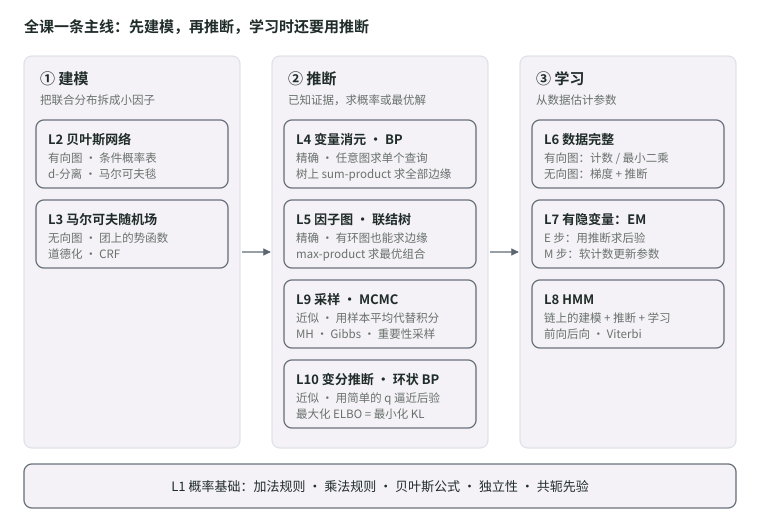
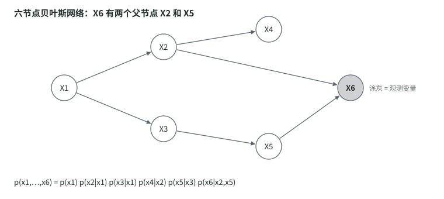
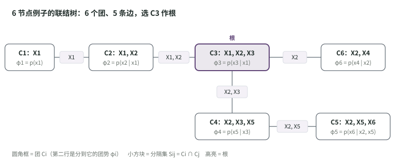
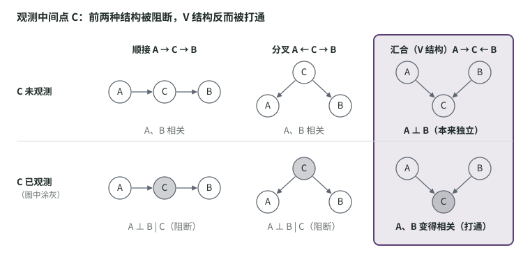

从一张概率表，
走到变分推断。
概率基础、贝叶斯网络与马尔可夫随机场，精确推断、参数学习与 EM，再到 HMM、采样和变分推断。按课件逐页讲解，例题一步一步手算，每讲末尾附中英术语对照，适合零基础准备英文期末考试。
按课件、Scribe 与 Exercise 1 整理，覆盖 Lecture 1–10。考试范围与题型以课程公告为准；这里的重点标注是复习建议。
按讲复习，最后做 Exercise
点卡片进入；每讲末尾都有中英术语对照先看这里：这门课到底在学什么
整门课只做三件事：建模、推断、学习。课程安排、评分和这份笔记的用法。
概率推理入门
概率空间、随机变量、加法与乘法规则、贝叶斯公式、独立性与共轭分布。
贝叶斯网络
用有向图读条件独立：三种基本结构、d-分离、Bayes Ball 与马尔可夫毯。
马尔可夫随机场
条件独立五条规则、I-Map、团与势函数、Hammersley–Clifford 定理与 CRF。
变量消元与信念传播
把求和号往里推：变量消元、重构图与树宽，树上的 sum-product。
因子图与联结树
因子图、max-product 与回溯、联结树的构造，以及最大生成树定理的证明。
完整数据的参数学习
MLE 与 MAP：数数、最小二乘、共轭先验；MRF 的矩匹配、IPF 与 CRF 的 SGD。
混合模型与 EM 算法
K-means、高斯混合模型与 EM：一维数据手算一轮 EM，再用下界与 KL 分解说明它为什么有效。
隐马尔可夫模型
前向后向、Baum-Welch、缩放因子与 Viterbi，用两枚硬币从头算到尾。
蒙特卡洛推断
拒绝采样、重要性采样、祖先采样、MH 与 Gibbs，以及马尔可夫链的收敛条件。
变分推断
ELBO 与 KL、均值场、正向与反向 KL、变分 GMM、Ising 去噪与环状 BP。
Exercise 1 例题详解
18 道题：题目、考点、中文详解和可以照着写的英文答案，答案先折叠，做完再看。
十讲速览：每讲的一句话、直觉、公式与易错点
每讲一节：一句话、直觉、核心公式、小例子和易错点，适合第一遍建立印象或考前快速过一遍。
期末速查：公式、算法选择与复习清单
核心公式、什么问题用什么算法、按学习目标的复习清单和跨章节的常见坑。
先看这里：这门课到底在学什么
Start Here
一句话：这门课教你用概率表示 AI 里的不确定性，并且在变量成百上千时，依然能高效地算出你想要的概率。
整门课只做三件事，后面每一讲都能归到其中一件：
- 建模（怎么写下一个概率模型）：变量一多，联合分布 p(x1, …, xN) 的表格会指数级爆炸。用一张图画出“谁直接影响谁”，就能把大表拆成很多小表相乘。对应 L2 贝叶斯网络、L3 马尔可夫随机场。
- 推断（模型有了，怎么算答案）：已知一部分变量（叫“证据”），求其他变量的概率，或最可能的取值。精确算法是 L4 变量消元 / 信念传播、L5 因子图 / 联结树；算不动时用近似算法：L9 采样、L10 变分推断。
- 学习（模型里的数字从哪来）：从数据里估计参数。L6 讲数据完整时怎么估；L7 讲有“看不见的变量”时用 EM 算法；L8 隐马尔可夫模型把建模、推断、学习三件事在时间序列上完整走一遍。

从左往右读：L2–L3 给出模型，L4–L5 和 L9–L10 在模型上算概率，L6–L8 用数据学参数。L7、L8 的 E 步本身就是一次推断，所以推断算法贯穿整个后半学期。
课程安排（AY2026/27 第 1 学期）
| 讲次 | 日期 | 主题 | 相关作业 |
|---|---|---|---|
| L1 | 8 月 17 日 | 概率推理入门 | A0 Numpy 教程（不计分） |
| L2 | 8 月 22 日 | 贝叶斯网络（有向图） | |
| L3 | 8 月 24 日 | 马尔可夫随机场（无向图） | |
| L4 | 8 月 31 日 | 变量消元与信念传播 | A1 信念传播与最大概率（15%） |
| L5 | 9 月 5 日 | 因子图与联结树 | |
| L6 | 9 月 14 日 | 完整数据下的参数学习 | A2 联结树与参数学习（15%） |
| L7 | 9 月 28 日 | 混合模型与 EM | |
| L8 | 10 月 5 日 | 隐马尔可夫模型 HMM | A3 HMM（15%） |
| L9 | 10 月 12 日 | 蒙特卡洛推断（采样） | |
| L10 | 10 月 19 日 | 变分推断 | A4 MCMC 采样（15%，11 月 1 日截止） |
| L11 | 10 月 26 日 | VAE 与扩散模型 | |
| L12 | 11 月 2 日 | Graph-cut 与 alpha expansion |
评分：4 次编程作业各 15%，期末考试 40%（11 月 21 日，线下，可带一页 A4 小抄）。目前这份笔记覆盖 L1–L10；L11、L12 之后再补。
这份笔记怎么用
- 「十讲速览」每一章的结构都一样：一句话总结 → 直觉 → 核心公式 → 小例子 → 易错点。先读直觉，再看公式。
- 读完一章，回去看对应讲次的课件和 Scribe（每讲都有一个 Scribe 版，是老师审过的文字总结），然后做 Exercise 里的练习。
- 「期末速查」是公式速查和复习清单，可以直接当作期末小抄的底稿。
想按 PPT 逐页看、并且带例题详解，请看逐讲笔记；Exercise 1 的 18 道题在 Exercise 1 例题详解。
概率推理入门
Introduction to Probabilistic Reasoning
本页目录
这一讲在干什么：本讲对应课件 CS5340 -- Lecture 1.pdf 和配套的 Lecture 1 - Examples.pdf。学习目标有四条：① 用随机变量和联合概率描述不确定的量；② 说清加法、乘法、贝叶斯、独立性、期望这几条基本规则；③ 会用 Bernoulli、Categorical、一元和多元正态分布；④ 解释共轭分布的用处。
1. 概率空间Probability Space
概率空间 (Ω, E, P) 是对“结果随机出现的过程”的数学描述，由三部分组成：
- 样本空间 Ω（outcome / sample space）：所有可能结果的集合。
- 事件空间 E（event space）：E ⊆ 2^Ω，是 Ω 的幂集的一个子集，也就是“我们打算给它们分配概率的那些事件”。
- 概率分布 P：P: E → ℝ，给每个事件一个数。
【详解】“幂集”就是 Ω 所有子集组成的集合。一个“事件”就是若干结果的集合，比如掷骰子的“偶数点”= {2, 4, 6}。我们不一定要给所有子集都分配概率，只需要一个满足下面三条性质的子集族。
事件空间必须满足的三条性质：
- 包含空事件 ∅ 和必然事件 Ω；
- 对可数并封闭：若 α_i ∈ E（i = 1, 2, …），则 ∪α_i ∈ E；
- 对补集封闭：若 α ∈ E，则 Ω − α ∈ E。
例 1（PPT）：掷六面骰子
题目：Ω = {1, 2, 3, 4, 5, 6}，取 E = { {1,3,5}, {2,4,6}, ∅, {1,2,3,4,5,6} }（即“奇数 / 偶数”事件）。验证它是合法的事件空间。
详解：逐条检查。
- E 里有 ∅ 和 Ω = {1,…,6}。✔
- 并集：取 α1 = {1,3,5}、α2 = {2,4,6}，α1 ∪ α2 = {1,…,6} = Ω ∈ E。其他组合也一样：任何集合和 ∅ 的并是它自己，和 Ω 的并是 Ω，都在 E 里。✔
- 补集：取 α = {2,4,6}，Ω − α = {1,3,5} ∈ E；Ω 的补集是 ∅，∅ 的补集是 Ω，都在 E 里。✔
PPT 的提示：要对 E 里的每一个 α 都检查第 2、3 条，上面已经把所有情况过了一遍。
例 2（PPT）：灯泡寿命
题目：测量灯泡寿命，Ω = [0, ∞)。取 E = { [0, 90), [90, ∞), ∅, [0, ∞) }，即“寿命 ≥ 90”这个事件及其补。验证合法。
详解：
- E 里有 ∅ 和 [0, ∞)。✔
- 例如 ∅ ∪ [0, ∞) = [0, ∞) ∈ E；[0, 90) ∪ [90, ∞) = [0, ∞) ∈ E。✔
- [0, ∞) − [0, 90) = [90, ∞) ∈ E，反之亦然。✔
这个例子说明样本空间可以是连续的（一个区间），事件就是子区间。
例 3（PPT）：摸弹珠
题目：袋子里有很多蓝色（B）和红色（R）弹珠，一次摸一个，共摸 2 个，求样本空间。
详解：第一个有 B / R 两种，第二个也有 B / R 两种，顺序有意义，所以 Ω = {BB, BR, RB, RR}。PPT 给了三种写法：树状图（先分叉第一个，再分叉第二个）、列表、以及 2 × 2 表格：
| 第一个 \ 第二个 | B | R |
|---|---|---|
| B | BB | BR |
| R | RB | RR |
概率公理
定义在 (Ω, E) 上的概率分布 P: E → ℝ 必须满足：
- 非负：P(α) ≥ 0，对所有 α ∈ E；
- 归一：P(Ω) = 1；
- 互斥可加：若 α ∩ β = ∅，则 P(α ∪ β) = P(α) + P(β)。
【详解】所有其他概率性质都能从这三条推出来，例如 P(∅) = 0：因为 Ω 和 ∅ 互斥，1 = P(Ω ∪ ∅) = P(Ω) + P(∅) = 1 + P(∅)。
2. 随机变量Random Variables
- 随机变量用大写 X 表示，是讨论“结果的属性及其取值”的形式工具。
- 严格定义：给定概率空间 (Ω, E, P)，随机变量是一个函数 X: Ω → S，把结果映射到可测空间 S，通常 S 是实数。
- Val(X) 是 X 能取的所有值的集合。
- 小写 x 表示 X 的某个取值（realization）。P(X = x) 常简写为 P(x)。x^i 表示 X 的第 i 个具体取值。
【详解】例如抛两枚硬币，Ω = {HH, HT, TH, TT}。令 X = “正面个数”，则 X(HH) = 2、X(HT) = X(TH) = 1、X(TT) = 0，Val(X) = {0, 1, 2}。随机变量本身并不“随机”，它只是一个函数；随机性来自 Ω 上的 P。（这个例子是补充的，不在 PPT 里。）
PPT 给的例子：
| 类型 | 例子 | Val(X) |
|---|---|---|
| 离散 | 掷六面骰子 | {1, 2, …, 6} |
| 离散 | 天气 | {rain, cloud, snow, sun, wind} |
| 离散 | 下一班车的乘客数 | 非负整数 ℤ≥0 |
| 连续 | 完成考试所用时间 | [1, 2] 小时 |
| 连续 | 树的高度 | ℝ>0 |
| 连续 | 环境温度 | ℝ |
3. 概率分布：离散 vs 连续
离散：概率质量函数（PMF）P(x)
连续：概率密度函数（PDF）p(x): ℝ → ℝ≥0
连续变量的概率要通过积分（累积分布）来算：
【详解】最后一个式子很重要：连续变量取任何一个精确值的概率都是 0，因为积分区间长度为 0。所以 p(x) 本身不是概率，而是“单位长度上的概率”，可以大于 1。例如在 [0, 0.5] 上的均匀分布 p(x) = 2。
记号约定（PPT 特别说明）：本课把 PMF 和 PDF 都写成小写 p(x)，是一种记号滥用；你要自己根据 X 是离散还是连续，理解它的性质差异。
4. 概率推理的基本范式
概率建模：① 找出环境中所有相关变量 X1, …, XN；② 为它们之间的相互作用建一个概率模型 p(X1, …, XN)。
概率推断：① 引入证据，即把一部分变量设为已知状态；② 在这些证据条件下计算我们关心的概率。
为此需要联合概率、边缘化、条件概率、贝叶斯公式和独立性的定义。这一讲先在少数几个变量上用它们；后面几讲会用图模型把它们推广到大量变量。
5. 联合概率Joint Probability
- 考虑两个随机变量 X、Y 所有取值组合，有些组合比其他组合更可能发生。
- 这由联合分布 p(x, y) 描述，读作“X 和 Y 的概率”。也可以有更多变量，如 p(a, b, c, …)。
- PPT 画了三种情况：两个都离散（一张格子表）、两个都连续（一张二维热力图 / 曲面）、一个离散一个连续（几条曲线）。
6. 边缘化（Marginalization，加法规则 sum rule）
从联合分布里恢复任何一个变量的分布：把其他变量积分（或求和）掉。
【详解】离散情况下把 p(x, y) 写成一张表：对每一列求和得到 p(x)，对每一行求和得到 p(y)。“边缘”这个名字就来自：算出来的和写在表格的边上。哪个变量是离散的就对它求和，是连续的就积分。
7. 条件概率（Conditional Probability，乘法规则 / 链式法则）
- p(x | Y = y*) 读作“在 Y = y* 的条件下 X 的概率”。它描述 Y 固定在 y* 时，X 取各个值的相对倾向。
- 从联合分布里取出对应的一个切片，再归一化（使面积为 1）：
写成紧凑形式并移项，就得到“乘法规则”这个名字的来历：
高维也成立（PPT 例子），每次把一个变量从“条件”里拿出来：
【详解】第一步把 (w, x, y) 看成一个整体、z 看成另一个，用一次乘法规则；第二步在“已知 z”的世界里对 (w, x) 和 y 再用一次；依此类推。这就是链式法则，对任何分布都成立，L2 的贝叶斯网络就是从它出发的。
8. 贝叶斯公式Bayes’ Rule
由乘法规则的两种写法 p(x, y) = p(x | y)p(y) = p(y | x)p(x)，消去 p(x, y) 得 p(y | x)p(x) = p(x | y)p(y)，移项：
| 项 | 英文 | PPT 的解释 |
|---|---|---|
| p(x | y) | Likelihood 似然 | 给定 Y 的某个值时，观察到 X 某个值的倾向 |
| p(y) | Prior 先验 | 看到 X 之前我们对 Y 的了解 |
| p(y | x) | Posterior 后验 | 观察到 X 之后我们对 Y 的了解 |
| 分母 | Evidence 证据 | 一个常数，保证左边是合法的分布 |
例题（PPT，来自 Bishop）：红蓝盒子与水果
题目：随机变量 B 表示盒子颜色，Val(B) = {r, b}；F 表示水果种类，Val(F) = {a, o}（苹果 / 橘子）。红盒里 2 个苹果、6 个橘子；蓝盒里 3 个苹果、1 个橘子。已知：
- p(B = r) = 0.4，p(B = b) = 0.6；
- p(F = a | B = r) = 0.25，p(F = o | B = r) = 0.75；
- p(F = a | B = b) = 0.75，p(F = o | B = b) = 0.25。
求：(a) 拿到苹果的总概率；(b) 如果拿到的是橘子，它更可能来自哪个盒子。
详解 (a)：“总概率”要把盒子 B 边缘化掉。先用加法规则，再用乘法规则把联合概率拆开：
详解 (b)：已知的是“给定盒子时水果的概率”，要求的是反过来的“给定水果时盒子的概率”，所以用贝叶斯公式。分母 p(F = o) 不用重算，它等于 1 − p(F = a)：
结论：橘子更可能来自红盒。注意先验里蓝盒更可能被选（0.6 > 0.4），但红盒里橘子占 3/4，蓝盒里只占 1/4，似然的差距抵过了先验，所以后验反转。
9. 独立性Independence
- X 和 Y 独立，意味着所有条件分布都一样：Y 的取值对 X 没有任何信息，反之亦然。
- PPT 的图：在联合分布里切 Y = y1 和 Y = y2 两片，归一化后形状完全相同，就是独立；形状不同就不独立。
【详解】判断独立最实用的方法：对表格里每一个格子检查 p(x, y) = p(x)p(y)，只要有一个格子不满足就不独立。
10. 期望Expectation
函数 f(x) 在 X 的分布下的平均值：
期望的四条规则：
- 常数的期望是它自己：E[κ] = κ；
- 常数乘函数：E[κ f(x)] = κ E[f(x)]；
- 函数之和：E[f(x) + g(x)] = E[f(x)] + E[g(x)]；
- 若 X 和 Y 独立：E[f(x) g(y)] = E[f(x)] E[g(y)]。
【详解】第 4 条的证明：E[f(x)g(y)] = Σ_x Σ_y f(x)g(y)p(x, y) = Σ_x Σ_y f(x)g(y)p(x)p(y) = (Σ_x f(x)p(x))(Σ_y g(y)p(y))。第二个等号用到了独立，所以不独立时一般不成立。
11. Lecture 1 Examples：二元联合分布的完整演练
题目：已知联合分布 p(x, y)，x, y ∈ {0, 1}：
| p(x, y) | x = 0 | x = 1 |
|---|---|---|
| y = 0 | a | c |
| y = 1 | b | d |
要使它是合法概率，需要 a + b + c + d = 1。依次求 p(x)、p(y | x)、p(x | y)。
第一步：边缘概率 p(x)。对 y 求和，即把每一列加起来：
检查：(a + b) + (c + d) = 1，是合法分布。
第二步：条件概率 p(y | x) = p(x, y) / p(x)。每一列除以该列的和：
| p(y | x) | x = 0 | x = 1 |
|---|---|---|
| y = 0 | a / (a + b) | c / (c + d) |
| y = 1 | b / (a + b) | d / (c + d) |
检查：每一列加起来都是 1，例如 a/(a+b) + b/(a+b) = 1。注意是对 y 归一化（固定 x），不是整张表和为 1。
第三步：用贝叶斯公式求 p(x | y)。以 p(x = 0 | y = 0) 为例，把第一、二步的结果代入：
其余三个同理（分子里的 (a+b)、(c+d) 都会约掉）：
| p(x | y) | x = 0 | x = 1 |
|---|---|---|
| y = 0 | a / (a + c) | c / (a + c) |
| y = 1 | b / (b + d) | d / (b + d) |
检查：每一行加起来是 1，例如 a/(a+c) + c/(a+c) = 1。
【详解】这个结果和直接用定义 p(x | y) = p(x, y)/p(y) 算出来的一模一样（p(y = 0) = a + c）。例题的目的是让你看到：贝叶斯公式就是“从 p(y | x) 和 p(x) 出发，绕一圈回到 p(x, y) / p(y)”。
练习（补充的数字版，不在 PPT 里）：取 a = 0.1、b = 0.2、c = 0.3、d = 0.4。
- p(x = 0) = 0.3，p(x = 1) = 0.7。
- p(y = 0 | x = 0) = 0.1/0.3 = 1/3，p(y = 1 | x = 0) = 2/3；p(y = 0 | x = 1) = 0.3/0.7 = 3/7，p(y = 1 | x = 1) = 4/7。
- p(x = 0 | y = 0) = 0.1/0.4 = 0.25，p(x = 1 | y = 0) = 0.75；p(x = 0 | y = 1) = 0.2/0.6 = 1/3，p(x = 1 | y = 1) = 2/3。
- 是否独立？p(x = 0)p(y = 0) = 0.3 × 0.4 = 0.12 ≠ 0.1 = p(x = 0, y = 0)，所以不独立。
12. 概率分布：p(x) 的数值从哪里来
前面讲了怎么操作概率，还剩一个问题：p(x) 的数值怎么定？PPT 的回答：用带参数的概率分布，参数从数据里学。例如把人群身高拟合成正态分布，从数据学到 μ = 64、σ² = 4（σ = 2）。
选哪种分布取决于数据的类型和取值范围（PPT 表格）：
| 数据类型 | 取值范围 | 分布 |
|---|---|---|
| 一元、离散、二值 | x ∈ {0, 1} | Bernoulli |
| 一元、离散、多值 | x ∈ {1, …, K} | Categorical |
| 一元、连续、无界 | x ∈ ℝ | 一元正态 |
| 一元、连续、有界 | x ∈ [0, 1] | Beta |
| 多元、连续、无界 | x ∈ ℝ^K | 多元正态 |
| 多元、连续、和为 1 | Σ x_k = 1 | Dirichlet |
| 二元混合 | x1 ∈ ℝ，x2 ∈ ℝ+ | Normal-Scaled Inverse Gamma |
| 向量 + 正定矩阵 | x ∈ ℝ^K，X ∈ ℝ^(K×K) | Normal Inverse Wishart |
Bernoulli 分布
单个二值变量 x ∈ {0, 1}，一个参数 λ ∈ [0, 1]。例如抛硬币，X = 1 为正面、X = 0 为反面。
【详解】合写形式的技巧：x = 1 时第二项的指数是 0，只剩 λ；x = 0 时第一项的指数是 0，只剩 1 − λ。这种“用指数当开关”的写法在后面的 GMM、HMM 里会反复出现。
Categorical（类别）分布
变量取 K 个互斥状态之一，如 K 面骰子。x 用 K 维独热向量 e_k 表示：只有第 k 个元素是 1，其余是 0。例如 K = 5 时 x = e3 = [0, 0, 1, 0, 0]ᵀ。参数 λ = [λ1, …, λK]ᵀ，λ_k ≥ 0 且 Σ λ_k = 1。
一元正态（高斯）分布
单个连续变量 x ∈ ℝ，两个参数：均值 μ ∈ ℝ 和方差 σ² > 0。
多元正态分布
D 维连续变量 x ∈ ℝ^D。参数是 D 维均值 μ 和 D × D 对称正定协方差矩阵 Σ。
协方差的三种形式（PPT 图）：
| 形式 | 矩阵长相（2 维） | 等高线形状 |
|---|---|---|
| 球形 spherical | σ²I，对角线相等、非对角为 0 | 正圆 |
| 对角 diagonal | diag(σ1², σ2²)，非对角为 0 | 轴对齐的椭圆 |
| 完整 full | 任意对称正定矩阵 | 任意方向的斜椭圆 |
【详解】非对角元素是两个维度的协方差。它不为 0 时两个维度相关，椭圆就会倾斜。参数个数：球形 1 个、对角 D 个、完整 D(D+1)/2 个。
13. 共轭分布Conjugate Distributions
PPT 的三句话定义：
- 共轭分布用来建模另一个分布的参数。
- 一个分布和它的共轭分布相乘，结果和共轭分布是同一个形式，只是多了一个常数。
- 共轭分布的参数叫超参数，因为它们控制的是“参数的分布”。
| 分布 | 取值 | 其参数用什么建模 |
|---|---|---|
| Bernoulli | {0, 1} | Beta |
| Categorical | {1, …, K} | Dirichlet |
| 一元正态 | ℝ | Normal Inverse Gamma |
| 多元正态 | ℝ^K | Normal Inverse Wishart |
共轭为什么重要：两个用途
用途 1：学习参数 θ。贝叶斯公式：
PPT 的三步逻辑：① 选一个和似然共轭的先验；② 于是分子 = 常数 κ × 同形式的分布，后验一定和先验同形式（闭式）；③ 后验必须是合法分布，所以分母（证据）就等于那个常数 κ。
用途 2：对参数积分（预测新数据）：
若 p(θ | x) 和 p(x* | θ) 共轭，积分号里的乘积 = 常数 × 一个分布。而 ∫ 常数 × 分布 = 常数 × 1 = 常数，积分就不用真算了。
预测公式的证明（PPT），每一步用到的规则写在右边：
Beta 分布（Bernoulli 的共轭）
定义在 Bernoulli 参数 λ ∈ [0, 1] 上，两个超参数 α, β > 0。
补充例子（不在 PPT 里，帮助理解共轭）：抛硬币 N1 次正面、N0 次反面，似然是 λ^N1 (1 − λ)^N0。乘上 Beta 先验：
后验还是 Beta，只是参数加上了计数。例如先验 Beta(2, 2)，看到 3 次正面、1 次反面，后验是 Beta(5, 3)。
Dirichlet 分布（Categorical 的共轭）
定义在 K 个参数 λ_k ∈ [0, 1]、Σ λ_k = 1 上；K 个超参数 α_k > 0。K = 3 时它是三角形单纯形上的分布（PPT 图）。
Normal Inverse Gamma（一元正态的共轭）
定义在一元正态的两个参数 (μ, σ²) 上；四个超参数 α, β, γ > 0 和 δ ∈ ℝ。
Normal Inverse Wishart（多元正态的共轭）
定义在 (μ, Σ) 上；四个超参数：正标量 α、正定矩阵 Ψ、正标量 γ、向量 δ。
PPT 的采样图说明了四个超参数各管什么：α 控制协方差的分散程度，Ψ 是平均协方差，γ 控制均值向量的分散程度，δ 是均值向量的平均值。（多元 Gamma 函数按 Prince 教材的标准形式写，连乘上限是 D。）
14. 例 1（PPT）：一元高斯参数 (μ, σ²) 的后验
题目：观测 x[1], …, x[N] 独立同分布（i.i.d.）于一元高斯，先验取 NormInvGam(α, β, γ, δ)，求参数 θ = (μ, σ²) 的后验。
第一步：写贝叶斯公式。i.i.d. 让似然变成乘积：
第二步：把分子整理成“常数 × NormInvGam”（PPT 直接给结果，下面补上推导）。只看和 (μ, σ²) 有关的部分：
相乘后指数里的分子是 2β + γ(δ − μ)² + Σ(x[i] − μ)²。把它按 μ 展开并配方：
而 σ² 的幂次从 −(α + 1) 变成 −(α + N/2 + 1)。对照 NormInvGam 的形式，就读出了新的超参数（与 PPT 一致）：
于是分子 = κ(α, β, γ, δ, x) ⋅ NormInvGam(α̃, β̃, γ̃, δ̃)，κ 是与 μ、σ² 无关的常数。
第三步：代回贝叶斯公式。分母是分子对 θ 的积分，而任何分布积分等于 1：
结论：后验和共轭先验是同一种形式（Normal Inverse Gamma）。【直觉】γ̃ = γ + N 说明 γ 像“先验里已经看过的虚拟样本数”；δ̃ 是先验均值 δ（权重 γ）和数据总和（权重 N）的加权平均。
15. 例 2（PPT）：一元高斯的预测分布 p(x* | x)
题目：在例 1 的基础上，求一个新数据点 x* 的分布。
详解：用“对参数积分”公式，并把例 1 的后验代进去：
第二行用的是和例 1 完全一样的配方，只是现在“数据”只有一个点 x*（N = 1），先验换成了后验。剩下的常数就是答案：
这是一个只依赖 {x*, x[1], …, x[N]} 的常数，所以预测分布有闭式解，这就是共轭的好处。（ᾰ、γ̆、β̆ 的写法和 L1 Scribe 一致；它们就是把例 1 的更新公式用在 N = 1、数据 = x* 上。）
16. 本讲小结PPT Summary
- 用随机变量和联合概率描述不确定的量。
- 基本规则：加法、乘法、贝叶斯、独立性、期望。
- 常用分布：Bernoulli、Categorical、一元和多元正态。
- 共轭分布让后验和预测分布都有闭式解。
17. 中英术语对照（考试用）
| 中文 | English | 考试可用的英文关键句 |
|---|---|---|
| 样本空间 | sample space Ω | The set of all possible outcomes of an experiment. |
| 事件空间 | event space | A set of subsets of Ω, closed under complement and union. |
| 概率分布 | probability distribution | A mapping P from events to [0, 1] with P(Ω) = 1 and additivity for disjoint events. |
| 随机变量 | random variable | A function X: Ω → S that maps each outcome to a value. |
| 概率质量 / 密度函数 | PMF / PDF | PMF values are probabilities; PDF values are densities and may exceed 1. |
| 联合概率 | joint probability | p(x, y) is the probability that X = x and Y = y together. |
| 边缘化（加法法则） | marginalization (sum rule) | p(x) = Σ_y p(x, y). |
| 条件概率 | conditional probability | p(x | y) = p(x, y) / p(y). |
| 乘法法则 / 链式法则 | product rule / chain rule | p(x1, …, xn) = ∏i p(x_i | x1, …, x(i−1)). |
| 贝叶斯公式 | Bayes' rule | Posterior ∝ likelihood × prior; the denominator is the evidence. |
| 先验 / 似然 / 后验 / 证据 | prior / likelihood / posterior / evidence | p(θ | x) = p(x | θ) p(θ) / p(x). |
| 独立 | independence | X ⊥ Y iff p(x, y) = p(x) p(y) for all x, y. |
| 条件独立 | conditional independence | X ⊥ Y | Z iff p(x, y | z) = p(x | z) p(y | z). |
| 期望 / 方差 | expectation / variance | Var(X) = E[X²] − (E[X])². |
| 伯努利 / 类别分布 | Bernoulli / categorical distribution | Bern(x | λ) = λ^x (1 − λ)^(1−x); Cat(x | λ) = ∏_k λ_k^(x_k). |
| 正态分布 | normal (Gaussian) distribution | Parameterized by mean μ and variance σ² (covariance Σ in D dimensions). |
| 独热向量 | one-hot vector | A vector with a single 1 and zeros elsewhere. |
| 共轭先验 | conjugate prior | The posterior has the same functional form as the prior. |
| 超参数 | hyperparameters | The parameters of the prior distribution. |
| 预测分布 | predictive distribution | p(x* | x) = ∫ p(x* | θ) p(θ | x) dθ. |
| Beta / 狄利克雷 | Beta / Dirichlet | Conjugate priors for the Bernoulli / categorical parameters. |
| 正态-逆伽马 / 正态-逆 Wishart | normal-inverse-gamma / normal-inverse-Wishart | Conjugate priors for (μ, σ²) / (μ, Σ) of a Gaussian. |
贝叶斯网络
Bayesian Networks
本页目录
这一讲在干什么：本讲对应 CS5340 -- Lecture 2.pdf。学习目标：① 解释条件独立；② 用贝叶斯网络表示联合分布里的条件独立；③ 用三种基本 3 节点图描述 d-分离；④ 用 Bayes Ball 算法找出贝叶斯网络里所有的条件独立；⑤ 解释马尔可夫毯。
1. 为什么需要图模型
问题：完全相关的联合分布太难处理。设有 N 个离散变量 X1, …, XN，每个取 K 个值。要表示 p(x1, …, xN | θ) 需要 O(K^N) 个参数。N 一大，推断就算不动，学这么多参数也需要海量数据。
【详解】参数个数来自联合分布表的格子数：每个变量 K 种取值，N 个变量就有 K × K × … × K = K^N 种组合（精确地说是 K^N − 1 个自由参数，因为和必须为 1）。30 个二值变量就是 2^30 ≈ 10 亿。
简单办法：假设全部独立。参数降到 O(NK)，推断变成一些小概率的乘积：
但这不对。PPT 的两个例子：
- 单词 “probabili_” 的下一个字母显然和已知的字母有关（大概率是 t）。
- 一张照片里，一个像素是“水”还是“天空”，和它旁边像素的标签有关。
所以我们需要一种办法：① 紧凑地表示多个相关变量的联合分布；② 在合理时间内用它做推断；③ 用合理的数据量学它的参数。答案是图模型。
2. 条件独立Conditional Independence
全独立太弱、全相关太重，折中的办法是假设变量之间有“中等程度”的依赖，这就是条件独立。
定义：X_A 和 X_C 在给定 X_B 时条件独立，当且仅当
记作 X_A ⊥ X_C | X_B。意思是：一旦知道了 X_B，再知道 X_C 也不会改变对 X_A 的预测。
【详解】两种写法为什么等价：由乘法规则 p(x_A, x_C | x_B) = p(x_A | x_B, x_C) p(x_C | x_B)。如果 p(x_A | x_B, x_C) = p(x_A | x_B)，代进去就得到第一种写法；反过来两边同除 p(x_C | x_B) 就得到第二种。
例子（PPT）：家谱。每个节点是一个人的基因型。Homer 和 Marge 是 Bart、Lisa、Maggie 的父母。
即：知道了父母的基因型，Bart 的基因型和他的所有“非后代”（祖父母、姑姨叔伯等）无关。“每个变量只局部地依赖于它的父节点”这件事叫马尔可夫假设。
3. 贝叶斯网络：定义
- 用有向无环图（DAG）𝒢(𝒱, ℰ) 表示条件独立：𝒱 是节点集合，ℰ 是有向边集合。这也叫有向图模型（DGM）。
- 𝒢 里不能有环。
- 涂灰的节点 = 观测变量；白色节点 = 隐变量（未观测）。
- 祖先 anc(t)：父、祖父……，即能沿箭头走到 t 的节点。
- 后代 desc(s)：子、孙……，即从 s 沿箭头能走到的节点。
- 每个节点 i 对应一个随机变量 X_i，有一个父节点集合 π_i（可以为空）；X_πi 表示 X_i 的所有父变量。
贯穿全课的 6 节点例子（边为 X1→X2、X1→X3、X2→X4、X3→X5、X2→X6、X5→X6，X6 是观测变量）。图在下一节。
| 节点 | 父节点 X_πi | 备注 |
|---|---|---|
| X1 | ∅ | 根节点 |
| X2 | X1 | |
| X3 | X1 | |
| X4 | X2 | anc(X4) = {X1, X2} |
| X5 | X3 | |
| X6 | {X2, X5} | desc(X3) = {X5, X6} |

这张图在 L4（变量消元）和 L5（联结树）还会反复用到，建议记住它的结构。
4. 马尔可夫假设Markov Assumption
每个随机变量 X_i 在给定父节点 X_πi 时，与它的所有非后代条件独立。由此得到与图对应的一组“基本条件独立”：
例题（PPT）：写出 6 节点图的所有基本条件独立。
详解：对每个节点，先找父节点，再找“非后代”（除自己和后代以外的所有节点），去掉父节点，剩下的就是独立的对象。
| 节点 | 父节点 | 后代 | 非后代 \ 父节点 | 基本条件独立 |
|---|---|---|---|---|
| X1 | ∅ | 全部其他节点 | ∅ | X1 ⊥ ∅ | ∅ |
| X2 | X1 | X4, X6 | X3, X5 | X2 ⊥ {X3, X5} | X1 |
| X3 | X1 | X5, X6 | X2, X4 | X3 ⊥ {X2, X4} | X1 |
| X4 | X2 | 无 | X1, X3, X5, X6 | X4 ⊥ {X1, X3, X5, X6} | X2 |
| X5 | X3 | X6 | X1, X2, X4 | X5 ⊥ {X1, X2, X4} | X3 |
| X6 | X2, X5 | 无 | X1, X3, X4 | X6 ⊥ {X1, X3, X4} | {X2, X5} |
这些基本条件独立让每个节点都对应一个局部条件概率 p(x_i | x_πi)（i = 1, …, N），它由图里的父子关系在局部定义。
5. 联合分布的因子分解
父子关系的“局部性”让我们能经济地表示联合分布：联合概率可以直接从图上读出来，就是所有局部条件概率的乘积。
证明思路（PPT）：先按拓扑顺序（父节点总在子节点前面）用链式法则，再用基本条件独立把每一项的条件删到只剩父节点：
【详解】为什么可以删：在拓扑顺序下，x1, …, x_(i−1) 里不会有 X_i 的后代（后代都排在后面），所以它们都是 X_i 的“非后代”。马尔可夫假设说给定父节点后 X_i 与其他非后代无关，所以条件里只剩父节点。
例题（PPT）：写出 6 节点图的联合分布。逐个节点写 p(自己 | 父节点) 再相乘：
例题（PPT）：验证 X4 ⊥ {X1, X3} | X2，即 p(x4 | x1, x2, x3) = p(x4 | x2)。
详解：思路是用定义 p(x4 | x1, x2, x3) = p(x1, x2, x3, x4) / p(x1, x2, x3)，分子分母都从联合分布边缘化得到。
第一步，对 x5、x6 求和得到分子。把不含 x5、x6 的因子提到求和号外：
最里层的和是条件分布对自己求和，等于 1；于是 Σ_x5 p(x5 | x3) 也等于 1。所以 p(x1, x2, x3, x4) = p(x1)p(x2 | x1)p(x3 | x1)p(x4 | x2)。
第二步，再对 x4 求和得到分母：p(x1, x2, x3) = p(x1)p(x2 | x1)p(x3 | x1) Σ_x4 p(x4 | x2) = p(x1)p(x2 | x1)p(x3 | x1)。
第三步，相除：
证毕。这说明图里读出来的条件独立确实藏在因子分解里。
6. 参数个数大大减少
设节点 X_i 有 m_i 个父节点，每个节点取 K 个值。X_i 的条件概率表大小是 K^(m_i + 1)。整个联合分布的参数从 O(K^N) 降到 O(K^(m+1))，m ≡ max m_i ≪ N。
例题（PPT）：6 节点图，变量都是二值的，要多少参数？
| 节点 | 父节点个数 m_i | 表大小 2^(m_i+1) |
|---|---|---|
| X1 | 0 | 2 |
| X2 | 1 | 4 |
| X3 | 1 | 4 |
| X4 | 1 | 4 |
| X5 | 1 | 4 |
| X6 | 2 | 8 |
| 合计 | 26 |
完整联合分布要 2^6 = 64 个。节点越多差距越大。（PPT 是按“表里有几个数”计的；如果去掉“每行和为 1”的冗余，自由参数分别是 13 和 63。）
7. 还有更多的条件独立吗？
例题（PPT）：证明 X1 ⊥ X6 | {X2, X3}。它不是父子关系直接给出的基本条件独立，但也成立。要证 p(x1 | x2, x3, x6) = p(x1 | x2, x3)。
详解：分子对 x4、x5 求和，分母再多对 x1 求和。Σ_x4 p(x4 | x2) = 1 可以直接去掉：
关键观察：Σ_x5 p(x5 | x3) p(x6 | x2, x5) 只依赖 x2、x3、x6，不含 x1，所以在分母里可以提到 Σ_x1 外面，然后和分子约掉：
证毕。
PPT 接着问：能不能只看图就写出所有条件独立，而不用每次做这么多代数？可以。观察到 {X2, X3} “堵住”了从 X1 到 X6 的所有路径，这提示可以用“图分离”来推断条件独立。
但“堵住”要小心定义。反例：X2 和 X3 在给定 {X1, X6} 时并不独立，尽管一个天真的“堵住”理解会说它们被 X1 和 X6 隔开了。精确的定义要通过“三种基本 3 节点图”和“d-分离”给出。
8. 三种基本 3 节点图
任何路径上的一个中间节点 C，和它两侧的 A、B 只可能有三种连法。对每一种，都问两个问题：C 不观测时 A、B 独立吗？观测 C 后呢？（总览页第 2 节有一张三种结构的对照图。）
8.1 顺接（head-to-tail）：A → C → B
联合分布：p(a, b, c) = p(a) p(c | a) p(b | c)。
C 不观测：对 c 求和：
一般 p(b | a) ≠ p(b)，所以不能分解成 p(a)p(b)，A 和 B 不独立。
【详解】PPT 是两边同除 p(a) 来写的：Σ_c p(c | a)p(b | c) = Σ_c p(a)p(c | a)p(b | c) / p(a) = Σ_c p(a, b, c) / p(a) = p(a, b) / p(a) = p(b | a)。
观测 C：用贝叶斯公式 p(a)p(c | a) = p(a | c)p(c)：
所以 A ⊥ B | C。
PPT 的解释：C 对路径 A → C → B 是“头尾相接”。这样的路径让 A、B 相关；观测 C 就“堵住”了这条路。直观理解是过去 → 现在 → 未来：给定现在，过去与未来无关，这就是最简单的马尔可夫链。
8.2 分叉（tail-to-tail）：A ← C → B
联合分布：p(a, b, c) = p(a | c) p(b | c) p(c)。
C 不观测：p(a, b) = Σ_c p(a | c) p(b | c) p(c)，一般不等于 p(a)p(b)，不独立。
观测 C：p(a, b | c) = p(a, b, c) / p(c) = p(a | c) p(b | c)，所以 A ⊥ B | C。
PPT 的直观例子：C = 年龄，A = 鞋码，B = 白头发多少。小孩鞋码小、白发少，大人鞋码大、白发多，所以不看年龄时鞋码和白发相关。但知道了年龄，鞋码和白发就没有进一步的关系了：年龄“解释”了它们之间的全部相关性。
8.3 汇合（head-to-head，V 结构）：A → C ← B
联合分布：p(a, b, c) = p(a) p(b) p(c | a, b)。
C 不观测：
所以 A ⊥ B（什么都不观测时独立），和前两种情况相反。
观测 C：
一般不能分解成 p(a | c) p(b | c)，所以观测 C 后 A 和 B 变得相关。
要点：
- C 不观测时它“堵住”路径，A、B 独立；观测 C 反而“打通”路径。
- 观测 C 的任何后代 D，也会打通路径（A → C ← B，C → D，观测 D 后 A、B 相关）。
8.4 直观例子（PPT）：电池、油箱、油表
电池 B 和油箱 F 都影响电子油表的读数 G（B → G ← F）。
- 不看油表时，电池和油箱没有任何关系（独立）。
- 油表显示“空”时，如果又发现电池没电，我们对“油箱是空的”的怀疑就会降低。电池和油箱变得相关了，这叫解释消除（explaining away）。
- 再加一个报警器 A（油表显示空时报警，G → A）：听到报警就知道油表显示空，此时知道电池没电同样会降低油箱空的可能性。这就是“观测后代也会打通”。
数值例题（PPT）。B = 1 充满电、B = 0 没电；F = 1 油满、F = 0 油空；G = 1 表显示满、G = 0 表显示空。已知 p(B = 1) = 0.9，p(F = 1) = 0.9，以及：
| B | F | p(G = 1 | B, F) | p(G = 0 | B, F) |
|---|---|---|---|
| 1 | 1 | 0.8 | 0.2 |
| 1 | 0 | 0.2 | 0.8 |
| 0 | 1 | 0.2 | 0.8 |
| 0 | 0 | 0.1 | 0.9 |
先验 p(F = 0) = 0.1。
问 1：观察到油表显示空（G = 0），油箱真空的概率是多少？
详解：贝叶斯公式 p(F = 0 | G = 0) = p(G = 0 | F = 0) p(F = 0) / p(G = 0)。需要两个量。
① p(G = 0)：对 B、F 的四种组合求和：
② p(G = 0 | F = 0)：对 B 求和（B 与 F 独立，所以用 p(b)）：
代入：
看到油表显示空，油箱真空的可能性从 0.1 升到 0.257，符合直觉。
问 2：再检查电池，发现没电（B = 0），现在油箱空的概率？
详解：现在 B 和 G 都观测了。p(B = 0) 在分子分母里都出现，会约掉：
0.111 < 0.257：发现电池没电“解释掉”了油表显示空这件事。但它仍然比先验 0.1 稍高，因为电池没电时油箱空会让油表更可能显示空（0.9 vs 0.8）。本来独立的 B 和 F，在观测 G 之后变得相关。
9. 图分离与 d-分离
- 如果在观测了集合 C 里所有节点之后，从集合 A 到集合 B 的所有路径都被“阻断”，就称 A 被 C d-分离于 B，联合分布满足 A ⊥ B | C。
- 由三种基本图，一条路径被阻断，当且仅当它经过某个节点满足下面任一条：
- 路径上的箭头在该节点处是顺接或分叉，且该节点在 C 里；
- 箭头在该节点处汇合，且该节点及其所有后代都不在 C 里。
【详解】做题步骤：① 列出 A 到 B 的所有路径（忽略箭头方向找路）；② 对每条路径，看路上每个中间节点是哪种结构、是否被观测；③ 只要路上有一个节点满足阻断条件，这条路就通不过；④ 所有路都通不过才有条件独立，有一条能通就不独立。
10. Bayes Ball 算法
这是一个“可达性”算法：
- 把集合 C 的节点涂灰；
- 在集合 A 的每个节点上放一个球；
- 让球按 d-分离规则在图上弹：顺接 / 分叉节点被观测就停下，否则穿过；汇合节点本身或其后代被观测就弹向另一个父节点，否则停下。
- 如果没有任何球到达 B，则 A ⊥ B | C；否则不独立。
可以用广度优先搜索实现。
例 1（PPT）：6 节点图，C = {X2, X3}，问 X1 和 X6。
详解：X1 到 X6 有两条路：
- X1 → X2 → X6：X2 是顺接且被观测，阻断。
- X1 → X3 → X5 → X6：X3 是顺接且被观测，阻断。
球既过不了 X2 也过不了 X3，所以 X1 ⊥ X6 | {X2, X3}，和第 7 节的代数证明一致。
例 2（PPT）：6 节点图，C = {X1, X6}，问 X2 和 X3。
详解：X2 到 X3 有两条路：
- X2 ← X1 → X3：X1 是分叉且被观测，阻断。
- X2 → X6 ← X5 ← X3：X6 是汇合节点且被观测，打通；X5 是顺接且未观测，也通。整条路径是通的。
球可以从 X2 经 X6、X5 到达 X3，所以 X2 与 X3 在给定 {X1, X6} 时不独立。这就是第 7 节说的“天真地理解堵住会出错”的例子。
例 3（PPT）：朴素贝叶斯分类器。
题目：把邮件分为垃圾邮件（Y = 1）或正常邮件（Y = 0）。词汇表里的单词编号 1 到 N；若第 n 个词出现在邮件里 X_n = 0，否则 X_n = 1（PPT 的写法）。邮件按某个分布 p(x1, …, xN, Y) 生成。
图结构：Y 指向每一个 X_n。用 plate（板）记号画时，只画一个 X_n，外面套一个写着 N 的方框，表示重复 N 次。
详解：由乘法规则 p(x1, …, xN, Y) = p(x1, …, xN | Y) p(Y)。由图可知，任意两个词 X_i、X_j 之间唯一的路径是 X_i ← Y → X_j（分叉），给定 Y 就被阻断。所以给定 Y 后各词互相独立，联合分布拆成乘积：
预测时用贝叶斯公式：
“朴素”指的就是“给定类别后各词独立”这个强假设。
11. 马尔可夫毯Markov Blanket
- 节点 X_i 的马尔可夫毯 = 它的父节点、子节点、co-parents（子节点的其他父节点）。
- 给定图里其余所有变量时，X_i 的条件分布只依赖马尔可夫毯里的变量。
证明（PPT）：把联合分布写成 ∏_k p(x_k | x_πk)，并把这些因子分成三组：① X_i 自己的 p(x_i | x_πi)；② 以 X_i 为父节点的那些 m 的 p(x_m | x_πm)（X_i 的子节点）；③ 其余与 X_i 无关的因子（下标 l）。
【详解】第③组因子不含 x_i，可以提到分母的积分号外，和分子约掉。剩下的只有 p(x_i | x_πi)（涉及 X_i 的父节点）和 p(x_m | x_πm)（涉及 X_i 的子节点 x_m，以及 x_m 的其他父节点，即 co-parents）。所以 X_i 的条件分布只依赖这三类节点。这个结论在 L9 的 Gibbs 采样里会直接用到。
练习（补充）：6 节点图里 X5 的马尔可夫毯是什么？父节点 X3，子节点 X6，X6 的另一个父节点 X2，所以是 {X2, X3, X6}。
12. 贝叶斯网络的应用（PPT）
- 城市场景理解（Andreas Geiger 博士论文，2013）：用贝叶斯网络联合建模道路参数、车辆轨迹片段、消失点、占用栅格等。
- 鲁棒的大场景 3D 点云重建（Lan, Yew, Lee, CVPR 2019）：用分配变量 Z_ij 建模哪些闭环约束是可信的，并用 EM 求解——E 步 Q_EM = Σ_Z p(Z | Y, T_old) ln p(X, Y, Z | T)，M 步对 T 求 argmax（EM 见 L7）。
13. 本讲小结PPT Summary
- 条件独立是“全独立”和“全相关”之间的折中。
- 贝叶斯网络用马尔可夫假设把联合分布写成 ∏ p(x_i | x_πi)，参数从 O(K^N) 降到 O(K^(m+1))。
- 三种基本 3 节点图决定路径是否被阻断，由此得到 d-分离。
- Bayes Ball 算法用“球在图上弹”来找出所有条件独立。
- 马尔可夫毯（父 + 子 + co-parents）是让一个节点与其余所有节点条件独立的最小集合。
14. 中英术语对照（考试用）
| 中文 | English | 考试可用的英文关键句 |
|---|---|---|
| 有向无环图 | directed acyclic graph (DAG) | A directed graph with no directed cycles. |
| 贝叶斯网络 | Bayesian network / directed graphical model | A DAG plus a local conditional distribution for each node. |
| 父 / 子 / 祖先 / 后代 | parents / children / ancestors / descendants | π_i denotes the parents of node i. |
| 拓扑顺序 | topological ordering | Every parent appears before its children. |
| 条件概率表 | conditional probability table (CPT) | One distribution over x_i for each configuration of its parents. |
| 因子分解 | factorization | p(x1, …, xN) = ∏_i p(x_i | x_πi). |
| 局部马尔可夫性 | local Markov property | Each node is independent of its non-descendants given its parents. |
| 顺接 | head-to-tail (chain) | A → C → B is blocked when C is observed. |
| 分叉 | tail-to-tail (common cause / fork) | A ← C → B is blocked when C is observed. |
| 汇合 / V 结构 | head-to-head (collider / v-structure) | A → C ← B is blocked unless C or one of its descendants is observed. |
| d-分离 | d-separation | A and B are d-separated by C if every path between them is blocked. |
| 阻断 / 打通 | blocked / active (open) path | One open path is enough to make the variables dependent. |
| 解释消除 | explaining away | Observing a common effect makes its independent causes dependent. |
| Bayes ball 算法 | Bayes ball algorithm | A procedure for checking d-separation by passing a ball along the graph. |
| 马尔可夫毯 | Markov blanket | Parents, children and the children's other parents (co-parents). |
| 观测 / 隐变量 | observed / latent (hidden) variable | Observed nodes are shaded in the graph. |
| I-map | independence map | G is an I-map of p if I(G) ⊆ I(p). |
| 朴素贝叶斯 | naive Bayes | Features are conditionally independent given the class. |
| 板块记号 | plate notation | A plate denotes N i.i.d. replicates of the enclosed nodes. |
| 线性高斯 | linear-Gaussian | The child's mean is a weighted sum of its parents. |
马尔可夫随机场
Markov Random Fields
本页目录
这一讲在干什么：本讲对应 CS5340 -- Lecture 3.pdf 和 Lecture 3 - Supplementary.pdf（五条规则及其逆命题的补充讲义）。学习目标：① 推导条件独立的五条规则；② 用 I-Map 解释图模型为什么能正确表示条件独立；③ 理解无向图的全局、局部、成对马尔可夫性质，并用它们找出所有条件独立；④ 用团势函数参数化马尔可夫随机场；⑤ 说出 MRF 与 CRF 的异同。
1. 条件独立的五条规则
回顾定义：X_A ⊥ X_C | X_B 当且仅当 p(x_A, x_C | x_B) = p(x_A | x_B) p(x_C | x_B)，等价于 p(x_A | x_B, x_C) = p(x_A | x_B)（对所有 p(x_B) > 0）。由此可以推出五条规则。下面的 X、Y、Z、W 都可以是变量集合。
1.1 对称性（Symmetry）：X ⊥ Y | Z ⇒ Y ⊥ X | Z
证明：由乘法规则 p(Y | X, Z) = p(X, Y | Z) / p(X | Z)（p(X | Z) > 0）。对分子用 X ⊥ Y | Z：
所以 Y ⊥ X | Z。
1.2 分解（Decomposition）：X ⊥ {Y, W} | Z ⇒ X ⊥ Y | Z 且 X ⊥ W | Z
证明：前提给出 p(X, Y, W | Z) = p(X | Z) p(Y, W | Z)。两边对 W 积分（离散就求和）：
对 Y 积分就得到 X ⊥ W | Z。【直觉】X 和“一组变量”无关，就和这组里的每一部分无关。
1.3 弱联合（Weak Union）：X ⊥ {Y, W} | Z ⇒ X ⊥ Y | {W, Z} 且 X ⊥ W | {Y, Z}
证明（每一步的理由写在右边）：
所以 X ⊥ Y | {W, Z}；交换 Y、W 的角色就得到 X ⊥ W | {Y, Z}。【直觉】把一个本来就和 X 无关的变量 W 加进条件里，不会破坏 X 和 Y 的独立。
1.4 收缩（Contraction）：X ⊥ Y | {W, Z} 且 X ⊥ W | Z ⇒ X ⊥ {Y, W} | Z
证明：两个前提分别给出 p(X | Y, W, Z) = p(X | W, Z) 和 p(X | W, Z) = p(X | Z)。串起来：
所以 X ⊥ {Y, W} | Z。
1.5 交（Intersection）：X ⊥ Y | {W, Z} 且 X ⊥ W | {Y, Z} ⇒ X ⊥ {Y, W} | Z（需要 p(x) > 0）
证明：
第一步，两个前提分别给出 p(X | W, Y, Z) = p(X | W, Z) 和 p(X | W, Y, Z) = p(X | Y, Z)，所以 p(X | W, Z) = p(X | Y, Z)。
第二步，对 W 边缘化：
第三步，合起来：p(X | W, Y, Z) = p(X | W, Z) = p(X | Y, Z) = p(X | Z)，即 X ⊥ {Y, W} | Z。
【为什么只有“交”需要 p(x) > 0（补充讲义）】第二步把 p(X | W, Z) = p(X | Y, Z) 当作“对每个 W 都成立”，才能把 p(X | Y, Z) 提到积分外。但第一步的两个等式只在 p(w, y, z) > 0 的组合上成立，只有整个联合分布处处为正，才能保证对所有 w 都成立。其余四条规则始终在同一个条件事件内部操作，只用到“被条件的事件概率 > 0”，这是写条件概率时本来就有的前提。
反例（Exercise 1 里给过）：A = B = C 是同一枚公平硬币复制三份，D = ∅。给定 C 后 A 已经完全确定，所以 A ⊥ B | C 和 A ⊥ C | B 都成立，但 A 显然不独立于 {B, C}。问题就出在这个分布有很多 0 概率的组合。
1.6 逆命题成立吗（补充讲义）
| 规则 | 正向 | 逆向 |
|---|---|---|
| 对称 | 对任意 p 成立 | 成立（同一个命题） |
| 分解 | 对任意 p 成立 | 不成立，即使 p > 0（XOR 反例） |
| 弱联合 | 对任意 p 成立 | 就是“交”的正向，需要 p > 0 |
| 收缩 | 对任意 p 成立 | 成立（= 弱联合 + 分解） |
| 交 | 需要 p > 0 | 成立（= 用两次弱联合） |
XOR 反例：分解的逆不成立。令 Y、W 是独立的公平硬币，X = Y 异或 W（Z = ∅）。
| Y | W | X | p(Y, W, X) |
|---|---|---|---|
| 0 | 0 | 0 | 0.25 |
| 0 | 1 | 1 | 0.25 |
| 1 | 0 | 1 | 0.25 |
| 1 | 1 | 0 | 0.25 |
| 其余 4 种 | 0 |
- 单看 Y：p(X = 1 | Y = 0) = p(X = 1 | Y = 1) = 0.5 = p(X = 1)，所以 X ⊥ Y；同理 X ⊥ W。
- 一起看：p(X | Y, W) 只取 0 或 1，不等于 p(X) = 0.5，所以 X 不独立于 {Y, W}。
单独知道 Y 或 W 都猜不出 X，但两个都知道就完全确定 X。
2. I-Map（Independence Map）
- I(p)：联合分布 p 里成立的所有独立关系。
- I(𝒢)：有向或无向图 𝒢 编码的所有独立关系。
- 若 I(𝒢) ⊆ I(p)，则 𝒢 是 p 的合法表示（𝒢 是 p 的 I-Map）。
【直觉】图声称的每一条独立都必须在 p 里真正成立（图不能说谎），但 p 里的独立图不必全部表达出来（可以少说）。
例 1（PPT）：三张两节点图——𝒢0 里 X、Y 之间没有边，I(𝒢0) = {X ⊥ Y}；𝒢1 是 X → Y，𝒢2 是 Y → X，它们都不编码任何独立，I(𝒢1) = I(𝒢2) = ∅。问它们是否是下面分布的 I-Map：
| X | Y | p(X, Y) |
|---|---|---|
| 0 | 0 | 0.08 |
| 0 | 1 | 0.32 |
| 1 | 0 | 0.12 |
| 1 | 1 | 0.48 |
详解：先求边缘 p(X = 0) = 0.08 + 0.32 = 0.40，p(X = 1) = 0.12 + 0.48 = 0.60；p(Y = 0) = 0.08 + 0.12 = 0.20，p(Y = 1) = 0.32 + 0.48 = 0.80。再求条件概率对比：
| X | Y | p(X | Y) = p(X, Y)/p(Y) | p(Y | X) = p(X, Y)/p(X) |
|---|---|---|---|
| 0 | 0 | 0.08/0.2 = 0.4 | 0.08/0.4 = 0.2 |
| 0 | 1 | 0.32/0.8 = 0.4 | 0.32/0.4 = 0.8 |
| 1 | 0 | 0.12/0.2 = 0.6 | 0.12/0.6 = 0.2 |
| 1 | 1 | 0.48/0.8 = 0.6 | 0.48/0.6 = 0.8 |
p(X | Y) 在两个 Y 下都等于 p(X) = (0.4, 0.6)，p(Y | X) 都等于 p(Y) = (0.2, 0.8)，所以 X ⊥ Y，I(p) = {X ⊥ Y}。于是 I(𝒢0) = {X ⊥ Y} ⊆ I(p)，I(𝒢1) = I(𝒢2) = ∅ ⊆ I(p)，三张图都是 I-Map。
例 2（PPT 留作练习）：同样三张图，分布换成 p(0,0) = 0.4、p(0,1) = 0.3、p(1,0) = 0.2、p(1,1) = 0.1。证明 𝒢0 不是 I-Map，𝒢1、𝒢2 是。
详解：p(X = 0) = 0.7，p(Y = 0) = 0.6。p(X = 0)p(Y = 0) = 0.42 ≠ 0.4 = p(X = 0, Y = 0)，所以 X 与 Y 不独立，I(p) = ∅。𝒢0 声称 X ⊥ Y，不在 I(p) 里，所以 𝒢0 不是 I-Map；𝒢1、𝒢2 的 ∅ ⊆ ∅，是 I-Map。
从 I-Map 到因子分解：若 𝒢 是 p 的合法表示，则 p(X1, …, XN) = ∏_c f_c(X_c)，其中 ∏_c f_c(X_c) 是按 𝒢 的因子分解。例如贝叶斯网络的 ∏ p(x_i | x_πi)。所以可以从图走到分布的因子分解，接下来对无向图也这样做。
3. 为什么需要无向图模型
有些问题里强行规定边的方向很别扭。PPT 的例子：建模一张二维图像，相邻像素的亮度相关。
- 用有向图可以做一个二维网格拓扑的 DAG，叫因果 MRF（causal MRF）或 Markov mesh。但它的条件独立性质很不自然：PPT 图中间节点 X8 的马尔可夫毯是那些着色的节点（3、4、7、9、12、13），而不是我们期望的上下左右 4 个邻居。
- 替代方案是无向图模型（UGM），也叫马尔可夫随机场（MRF）或 Markov network。形式上是图 𝒢(𝒱, ℰ)：𝒱 是与随机变量一一对应的节点，ℰ 是无向边。
- 没有边的方向，对图像分析、空间统计这类问题更自然。用无向二维网格建模图像时，每个节点的马尔可夫毯就是它的最近邻居。
4. 无向图里的条件独立：三种马尔可夫性质
PPT 用的例图是一张 7 节点无向图，边为：1–2、1–3、2–3、2–4、2–5、3–5、3–6、4–5、4–6、4–7、5–6、5–7、6–7。
4.1 全局马尔可夫性Global Markov Property
给定节点集合 A、B、C，X_A ⊥ X_B | X_C 当且仅当 C 在图中把 A 和 B 隔开，即删掉 C 的所有节点后，A 中任何节点都没有路到达 B 中任何节点。
例子（PPT）：{X1, X2} ⊥ {X6, X7} | {X3, X4, X5}。
详解：删掉 3、4、5 后剩下的边只有 1–2 和 6–7，{1, 2} 与 {6, 7} 完全不连通，所以独立。和有向图不同，这里没有 V 结构那种特例，只看连不连通。
4.2 局部马尔可夫性Local Markov Property
能让 X_s 与图中其余所有节点条件独立的那组节点，叫 X_s 的马尔可夫毯 mb(X_s)。在无向图里，马尔可夫毯就是邻居集合。
例子（PPT）：mb(X1) = {X2, X3}，所以 X1 ⊥ {X4, X5, X6, X7} | {X2, X3}。
4.3 成对马尔可夫性Pairwise Markov Property
两个节点之间没有直接的边，则给定其余所有节点时它们条件独立：
例子（PPT）：1 和 7 之间没有边，所以 X1 ⊥ X7 | {X2, X3, X4, X5, X6}。
4.4 三者的关系
全局 ⇒ 局部 ⇒ 成对很明显；不那么明显但正确的是：当 p(x) > 0 对所有 x 成立时，成对 ⇒ 全局，三者等价。
全局 ⇒ 局部：在全局性质里取 X_A = X_s、X_C = mb(X_s)、X_B = 其余所有节点。邻居把 X_s 和其余节点隔开了，就得到局部性质。
局部 ⇒ 成对：取任意一个与 X_s 不相邻的 X_t。局部性质说 X_s ⊥ X_𝒱{mb(X_s), X_s} | mb(X_s)，X_t 在右边那一组里。用弱联合把其余节点移到条件里，就得到 X_s ⊥ X_t | X_𝒱{X_s, X_t}。
成对 ⇒ 全局（需要 p > 0，证明思路）：设 S、A、B、D 是互不相交的节点集合，S 把 A 和 B 隔开，A、B 非空，d = |𝒱|。对 |S| 做倒向归纳：
- 基础情况 |S| = d − 2：此时 |A| = |B| = 1，A ⊥ B | S 正好就是成对性质。
- 归纳步 |S| < d − 2：不妨设剩下的节点 D（非空）与 B 不连通。由归纳假设（分隔集更大的情况已成立）得 A ⊥ B | {S, D} 和 B ⊥ D | {A, S}。
- 用“交”规则（这里用到 p > 0）得 B ⊥ {A, D} | S，再用分解得 A ⊥ B | S，即全局性质。
这个结论的意义：成对条件独立最容易从数据里验证，可以先用它建图，再从图上读出全局的条件独立。
5. 有向图与无向图：不能随便互换
无向图里判断条件独立比有向图简单。那能不能用无向图来判断有向图的条件独立，或反过来？一般不行。
例 1（PPT）：直接去掉箭头是错的。有向图 A → B ← C（V 结构）编码的是 A ⊥ C。去掉箭头变成无向图 A — B — C，它编码的却是 A ⊥ C | B，而这条不在原有向图里（汇合点被观测后反而相关）。
例 2（PPT）：有些无向图能表达的，有向图表达不了。四节点环 A — B — C — D — A 同时编码 A ⊥ C | {B, D} 和 B ⊥ D | {A, C}。PPT 展示了两次用有向图模仿的尝试：
- 尝试 1 能得到 A ⊥ C | {B, D}，但得到的是 B ⊥ D | A，而不是 B ⊥ D | {A, C}。
- 尝试 2 能得到 A ⊥ C | {B, D}，但得到的是 B ⊥ D，而且 B ⊥ D | {A, C} 不成立。
任何有向图都无法同时编码这两条。
6. MRF 的参数化：团与势函数
问题：有向图的参数化基于局部条件概率 p(x_i | x_πi)，联合分布是它们的乘积（链式法则）。无向图没有拓扑顺序，很难用条件概率做局部参数化。
解决办法：干脆不用条件概率，改用一般的函数。代价是这些局部函数不再有概率含义；但保住了最重要的东西：联合分布是局部函数的乘积。
局部函数的自变量怎么选：
- 无向图里没有直接连边的 X_i、X_j，在给定其余所有节点时条件独立（成对性质）。
- 所以联合分布必须能分解成把 X_i、X_j 放在不同因子里的形式，不能有同时依赖 X_i 和 X_j 的局部函数。
- 反过来，一个最大团里任意两个节点都相连，不可能条件独立。所以自然的选择是：每个最大团 C 的所有节点放在同一个局部函数 ψ(x_C) 里。
定义：
- 团（clique）：全连接的节点子集。
- 最大团（maximal clique）：再加任何一个节点就不再全连接的团。
Hammersley–Clifford 定理
一个严格正的分布 p(y) > 0 满足无向图 𝒢 的所有条件独立性质，当且仅当 p 能写成每个最大团一个因子的乘积：
- 𝒞：𝒢 的所有最大团；ψ_c：团 c 的因子，也叫势函数；θ_c：它的参数。
- Z(θ) 叫配分函数。因为 ψ 可以是任意正函数，需要 Z 来保证整体加起来等于 1。
例题（PPT，来自 Jordan）：5 个节点，y_i ∈ {0, 1}，边为 1–2、1–3、2–3、2–4、3–4、3–5。写出联合分布。
详解：
- 找最大团。{1, 2, 3} 两两相连，加入 4 缺 1–4，加入 5 缺 1–5，是最大团；{2, 3, 4} 两两相连，是最大团；{3, 5} 只有一条边，5 不与其他节点相连，也是最大团。
- 每个最大团一个势函数，是一张表：ψ123 和 ψ234 各有 2³ = 8 个数（PPT 记作 b1…b8、a1…a8），ψ35 有 2² = 4 个数（c1…c4）。
- 写出分布：
Z 要对 2⁵ = 32 种取值组合求和。例如 y = (0,0,0,0,0) 对应的乘积是 b1·a1·c1。
成对参数化与规范参数化
MRF 的参数化不唯一。
- 成对 MRF（pairwise）：把势函数放在边上而不是最大团上。上例变成 p(y | θ) ∝ ψ12 ψ13 ψ23 ψ24 ψ34 ψ35 = ∏_(s∼t) ψ_st(y_s, y_t)。简单、应用广，但没有最大团参数化那么通用（例如表达不了三个变量之间“三方”的交互）。
- 规范参数化（canonical）：在所有团（不只是最大团）上都定义势函数；任何一个势函数都可以设成均匀（取值全为 1）。上例写成单点势 ψ1…ψ5、成对势 ψ12…ψ35、三元势 ψ123、ψ234 的乘积。把成对势设成均匀后得到 ψ1 ψ2 ψ3 ψ4 ψ5 ψ123 ψ234，不改变所表示的分布。（Scribe 补充：严格说 ψ35 也要保留，因为 {3, 5} 本身就是最大团。）
7. Gibbs 分布与能量
无向图和统计物理有深刻联系。Gibbs 分布：
E(y_c) > 0 是团 c 的能量。定义 ψ_c(y_c | θ_c) = exp(−E(y_c | θ_c))，就把 Gibbs 分布变成了无向图：(1/Z) ∏_c ψ_c(y_c | θ_c)。
- 高概率状态 = 低能量配置。
- 这类模型也叫基于能量的模型（energy-based models），“势函数”这个名字就是从这里来的。
8. 对数线性势函数
势函数表示不同取值组合之间的相对“兼容度”。一种通用做法是把对数势定义为参数 θ_c ∈ ℝ^M 的线性函数：
φ_c: y_c ↦ ℝ^M 是由 y_c 的取值得到的特征向量。这也叫最大熵模型或对数线性模型。
例题（PPT）：y_c = {y1, y2, y3}，y_i ∈ {0, 1}。取 M = |c| = 3，φ_c(y_c) = [y1, y2, y3]ᵀ，则 ψ_c(y_c) = exp(θc1·y1 + θc2·y2 + θc3·y3)。
详解：用查表的方式要给 8 种组合各定一个数，共 2³ = 8 个参数。用对数线性势只要 3 个参数 θc = [θc1, θc2, θc3]，例如 (1, 0, 1) 对应 exp(θc1 + θc3)，(0, 0, 0) 对应 exp(0) = 1。代价是表达能力变弱了（这个特征表达不了变量之间的交互）。
9. 有向与无向的结合
9.1 Ising 模型与 Potts 模型
常见于二值图像去噪、立体视觉深度估计。y 是隐变量（真实像素），相邻的 y 之间是无向边；x 是观测（带噪像素），每个 y_t 用有向边生成 x_t。
| 模型 | 取值 | 成对能量 |
|---|---|---|
| Ising | y_i, x_i ∈ {0, 1} | E(y_s, y_t; J) = J·|y_s − y_t|，J > 0 |
| Potts | y_i, x_i ∈ {1, …, L} | E(y_s, y_t; J) = J·min(|y_s − y_t|, 1)，J > 0 |
【详解】相邻像素相同能量为 0，不同能量为 J，而能量越低概率越高，所以模型偏爱“成片”的平滑图像。Potts 是多标签版：只要不同就罚 J，不管差多少。
9.2 用有向图的条件概率当势函数
例题（PPT）：用 L2 的 6 节点有向图。
取 φ12 = p(x2 | x1)、φ13 = p(x3 | x1)、φ24 = p(x4 | x2)、φ35 = p(x5 | x3)、φ256 = p(x6 | x2, x5)。
详解：这些势函数的乘积是 p(x) / p(x1)，少了 p(x1) 这一项，所以 PPT 写 Z = 1/p(x1)，意思是要把 p(x1) 乘回来才等于联合分布。严格说 p(x1) 随 x1 变化，不是常数，所以更干净的做法是把 p(x1) 并进一个含 x1 的势里，例如 φ12 = p(x1)p(x2 | x1)。这样乘积正好就是联合分布，Z = 1。关键点：有向图的每个条件概率都能放进某个团里（注意 p(x6 | x2, x5) 需要 {X2, X5, X6} 是一个团，这就是下面“道德化”要连 X2 — X5 的原因）。
9.3 道德化Moralization
把有向图变成无向图：给每个节点的“未婚父母”连上边（结婚），再去掉所有箭头。
- 联合分布保持不变，因为每个 p(x_i | x_πi) 的变量都落在同一个团里，可以直接当势函数。
- 但丢失了一些条件独立。PPT 例子：6 节点图里 X6 的父节点是 X2、X5，道德化要加边 X2 — X5。有向图里有 X2 ⊥ {X3, X5} | X1，道德化后因为多了 X2 — X5 这条边，这条独立就没了。
- 道德化对下几讲的精确推断（变量消元、联结树）很重要。
10. 判别式模型与生成式模型
- 生成式模型：显式或隐式地建模输入和输出的分布，建模的是似然 p(x | C_k)。从分布里采样就能生成新的数据点。
- 判别式模型：直接建模后验 p(C_k | x)。
11. 条件随机场（CRF）
CRF（也叫判别式随机场）就是所有团势都以全部观测变量 x 为条件的 MRF，通常取对数线性形式：
φ(y_c, x) 是由隐变量 Y_c 和观测 X 得到的特征向量，w_c 是参数。
CRF 的优点：① 不用“浪费资源”去建模总是能观测到的东西，把精力放在我们关心的 p(隐变量 | 观测) 上；② 势函数可以依赖数据，例如在自然语言处理里，隐标签可以依赖句子的观测特征（比如是什么语言）。
CRF 的缺点：① 不是生成式的，不能生成新样本；② 学习更慢（L6 详细讲）。
11.1 例题（PPT）：CRF 就是逻辑回归
L2 的朴素贝叶斯忽略了观测 X1, …, XN 之间的依赖。CRF 则对观测之间的依赖不做任何假设：
对二分类 y ∈ {0, 1}（如垃圾邮件），定义 φ_n(y = 1, x)w_n = 𝕀(y⁺) x_n w_n⁺、φ_n(y = 0, x)w_n = 𝕀(y⁻) x_n w_n⁻。
详解：代入后 y = 1 的分子是 exp(w⁺ᵀx)，分母是两类之和。分子分母同除 exp(w⁺ᵀx)：
这就是逻辑回归。实际上只有一组参数 w′，不必分别建模 w⁺ 和 w⁻。决策边界 p(y = 1 | x, w) > 0.5 等价于 w′ᵀx > 0，对 x 是线性的。（PPT 这一页把指数的符号写成了 +，按推导应为 −，与 Scribe 一致。）
变成深度网络：把 w′ᵀx 换成非线性函数 f(x; w)，就得到分类神经网络 p(y⁺ | x) = σ(f(x; w))，σ 是 sigmoid；多分类时换成 softmax。
11.2 线性链 CRF（序列数据）
PPT 对比了三种结构相同的序列模型：
标签偏置问题（label bias）：HMM 和链式 MRF 里，时刻 t 的局部特征影响不到 t 之前的状态——X_t 被 Y_t d-分离于其他节点，信息流被堵住了。
例子（PPT）：词性标注。看到单词 “banks”，它可能是动词（“he banks at DBS”），也可能是名词（“the river banks were overflowing”），局部看是歧义的。如果句子后面出现 “fishing”，就能推断是“河岸”。但在 HMM 和 MRF 里，“fishing” 这个证据被 d-分离了。链式 CRF 的每个势都以整个句子 x 为条件，缓解了这个问题。
12. 应用例子（PPT）
- MRF：视频里追踪每一只蚂蚁。x_t 是蚂蚁的当前位置，z_t 是检测器输出的轨迹片段，用 MRF 建模蚂蚁之间的相互作用（Khan, Balch, Dellaert）。
- CRF：从航拍图中推断道路中心线位置和宽度（Mattyus, Wang, Fidler, Urtasun, ICCV 2015）。特征包括道路分类器输出、外观（到边缘的距离、区域均匀度、外观上下文）、平滑项、重叠项。
13. 本讲小结PPT Summary
- 推导条件独立的五条规则：对称、分解、弱联合、收缩、交。
- 用 I-Map 解释图模型为什么能正确表示条件独立。
- 无向图的全局、局部、成对马尔可夫性质，并用它们找出所有条件独立。
- 用团势函数参数化 MRF（Hammersley–Clifford）。
- MRF 与 CRF 的异同。
14. 中英术语对照（考试用）
| 中文 | English | 考试可用的英文关键句 |
|---|---|---|
| 无向图模型 / 马尔可夫随机场 | undirected graphical model / Markov random field (MRF) | Edges have no direction and represent direct interactions. |
| 团 / 极大团 | clique / maximal clique | A fully connected set of nodes that cannot be enlarged. |
| 势函数 | potential function ψ_c(x_c) | A non-negative compatibility function, not a probability. |
| 配分函数 | partition function Z | Z = Σ_x ∏_c ψ_c(x_c) normalizes the product of potentials. |
| Hammersley–Clifford 定理 | Hammersley–Clifford theorem | A strictly positive distribution satisfies the CI properties of G iff it factorizes over the cliques of G. |
| 全局 / 局部 / 成对马尔可夫性 | global / local / pairwise Markov property | They are equivalent for strictly positive distributions. |
| 图分离 | graph separation | A ⊥ B | C if removing C disconnects A from B. |
| 吉布斯分布 / 能量 | Gibbs distribution / energy | p(x) = (1/Z) exp(−Σ_c E_c(x_c)); lower energy, higher probability. |
| 对数线性模型 | log-linear model | log ψ_c(x_c) = θ_cᵀ φ_c(x_c). |
| 成对 MRF | pairwise MRF | One potential per edge (plus node potentials). |
| Ising / Potts 模型 | Ising / Potts model | Binary / multi-label grid models that favour equal neighbouring labels. |
| 道德化 / 道德图 | moralization / moral graph | Marry the parents of every node and drop the edge directions. |
| 条件随机场 | conditional random field (CRF) | An MRF whose potentials are all conditioned on the input x. |
| 生成式 / 判别式 | generative / discriminative | Generative models p(x, y); discriminative models p(y | x). |
| 分解 | decomposition | X ⊥ {Y, W} | Z ⇒ X ⊥ Y | Z. |
| 弱联合 | weak union | X ⊥ {Y, W} | Z ⇒ X ⊥ Y | {Z, W}. |
| 收缩 | contraction | X ⊥ W | {Z, Y} and X ⊥ Y | Z ⇒ X ⊥ {Y, W} | Z. |
| 交 | intersection | Needs a strictly positive distribution. |
| 严格为正 | strictly positive | p(x) > 0 for every configuration x. |
变量消元与信念传播
Variable Elimination and Belief Propagation
本页目录
这一讲在干什么：本讲对应 CS5340 -- Lecture 4.pdf。学习目标：① 用变量消元算法计算单个变量的条件概率 p(x_f | x_E)；② 用重构图解释变量消元的复杂度；③ 用 sum-product 算法求“树状”图模型的所有单节点边缘分布。
1. 概率推断问题
设 E 和 F 是图模型节点下标的两个不相交子集：
- X_E：证据节点（已观测，我们对它们取条件）；
- X_F：查询节点（想求它们的条件分布）；
- X_R = X_𝒱 \ (X_E, X_F)：冗余变量（nuisance），必须边缘化掉。
目标是对任意 E、F 计算 p(x_F | x_E)。有向图和无向图都是这个问题。由条件概率和边缘化：
贯穿本讲的例子：L2 的 6 节点有向图。证据 X_E = {X6}，查询 X_F = {X1}，冗余变量 X_R = {X2, X3, X4, X5}。
朴素求和太贵：Σ_xR 展开成一串求和，每个冗余变量一个。n 个变量、每个 k 个状态，直接在联合表上求和是 O(k^n)。例如 p(x1, …, x5) = Σ_x6 p(x1, …, x6)，光这一个求和就要碰大小为 k⁶ 的表。
2. 变量消元Variable Elimination
变量消元利用两个东西：① 图模型的因子分解（也就是它的条件独立）；② 乘法对加法的分配律。一次消掉一个冗余变量。
2.1 把求和号推进去
把联合分布写成因子形式，然后把每个求和号推过所有不依赖它的因子：
这一个求和从 O(k⁶) 降到 O(k³)。一般地，复杂度从 O(k^n) 降到 O(k^r)，r ≪ n 是过程中生成的最大表的大小（第 4 节精确定义）。（没有证据时 Σ_x6 p(x6 | x2, x5) = 1；这里的重点是求和碰到的表变小了。）
2.2 证据节点：对表切片
考虑 p(x1 | x̄6) = p(x1, x̄6) / p(x̄6)。X6 已观测，是常数，不增加计算量。已观测的节点记作 X̄_i。
例题（PPT）：x_i ∈ {0, 1}，观测到 X̄6 = 1。对条件概率表 p(x6 | x2, x5) 取条件，就是只留下 x6 = 1 的那些行：
| X2 | X5 | X6 | p(x6 | x2, x5) | 保留？ |
|---|---|---|---|---|
| 0 | 0 | 0 | v0 | |
| 0 | 0 | 1 | v1 | ✔ |
| 0 | 1 | 0 | v2 | |
| 0 | 1 | 1 | v3 | ✔ |
| 1 | 0 | 0 | v4 | |
| 1 | 0 | 1 | v5 | ✔ |
| 1 | 1 | 0 | v6 | |
| 1 | 1 | 1 | v7 | ✔ |
得到一张关于 (x2, x5) 的 2 × 2 表：(0,0) → v1，(0,1) → v3，(1,0) → v5，(1,1) → v7。这就是从三维表里取了一个二维切片。
2.3 一次消一个变量：手算 p(x1 | x̄6)
例题（PPT）：把每个求和号尽量往右推，再从里往外算。
逐行依次消掉 X5、X4（可以消，因为 m5 不含 X4）、X3（m4 不含 X3）、X2。再对 x1 求和得到证据概率，相除得到答案：
中间因子 m_i(x_Si)：做完 Σ_xi 之后得到的表达式，X_Si 是求和式里除 X_i 以外出现的变量。之所以能把求和号推进去，靠的就是分配律。
例题（PPT）：具体算出 m5(x2, x3) 这张表。x_i ∈ {0, 1}，X̄6 = 1。
| X2 | X5 | p(x̄6 = 1 | x2, x5) | X3 | X5 | p(x5 | x3) | |
|---|---|---|---|---|---|---|
| 0 | 0 | a1 | 0 | 0 | b1 | |
| 0 | 1 | a2 | 0 | 1 | b2 | |
| 1 | 0 | a3 | 1 | 0 | b3 | |
| 1 | 1 | a4 | 1 | 1 | b4 |
详解：m5(x2, x3) = Σ_x5 p(x5 | x3) p(x̄6 = 1 | x2, x5)。对 (x2, x3) 的每种取值，把 x5 = 0 和 x5 = 1 两项加起来：
| X2 | X3 | m5(x2, x3) |
|---|---|---|
| 0 | 0 | p(x5=0|x3=0)p(x̄6=1|x2=0,x5=0) + p(x5=1|x3=0)p(x̄6=1|x2=0,x5=1) = b1·a1 + b2·a2 |
| 0 | 1 | b3·a1 + b4·a2 |
| 1 | 0 | b1·a3 + b2·a4 |
| 1 | 1 | b3·a3 + b4·a4 |
消掉 X5 把两张表变成一张关于 (X2, X3) 的表，代价是 k³ = 8 次乘法。
2.4 把“条件化”变成“边缘化”的技巧
这是一个记号技巧，让条件化和边缘化在形式上一致，算法里就只剩一种操作。
证据势（evidence potential）：用来表达 X_i 固定在 x̄_i：
证明：展开求和，只有 x_i = x̄_i 那一项的 δ 是 1，其余都是 0：g(0)·0 + … + g(x̄_i)·1 + … + g(k)·0 = g(x̄_i)。对多元函数同样适用。
例子（PPT）：有向图里，m6(x2, x5) = Σ_x6 p(x6 | x2, x5) δ(x6, x̄6) = p(x̄6 | x2, x5)；无向图里，m6(x2, x5) = Σ_x6 ψ(x2, x5, x6) δ(x6, x̄6) = ψ(x2, x5, x̄6)。两种情况都把条件化变成了边缘化。
总证据势：对要取条件的节点集合 X_E，δ(x_E, x̄_E) = ∏_(i∈E) δ(x_i, x̄_i)，全部匹配时为 1，否则为 0。于是条件概率的分子分母都是求和：
注意：证据势只是形式上的技巧。实际编程时不会去求一个几乎处处为 0 的和，而是直接对概率表或势函数表做切片。
2.5 变量消元算法（有向图，Jordan 2002）
算法维护一个活动列表（active list）。每一步取出所有引用当前要消去的变量的因子，相乘、对该变量求和，把新的中间因子放回列表。
- Initialize(𝒢, F)：选一个消元顺序 I，F 放在最后；把每个节点的 p(x_i | x_πi) 放进活动列表。
- Evidence(E)：对 E 中每个 i，把 δ(x_i, x̄_i) 放进活动列表。
- Update(𝒢)：按顺序 I 对每个 i：找出列表中所有引用 x_i 的势并移除；令 ϕ_i(x_Ti) 为它们的乘积；令 m_i(x_Si) = Σ_xi ϕ_i(x_Ti)；把 m_i(x_Si) 放回列表。（T_i 是被移除的因子里的所有变量，i ∈ T_i，S_i = T_i \ {i}。）
- Normalize(F)：p(x_F | x̄_E) ← ϕ_F(x_F) / Σ_xF ϕ_F(x_F)。
例题（PPT）：用算法算 p(x1 | x̄6)，顺序 I = {6, 5, 4, 3, 2, 1}。
初始化后列表 = {p(x1), p(x2|x1), p(x3|x1), p(x4|x2), p(x5|x3), p(x6|x2,x5)}；加入证据 δ(x6, x̄6)。然后：
| 消去 i | 取出的因子乘积 ϕ_i | m_i = Σ_xi ϕ_i | 之后的活动列表 |
|---|---|---|---|
| 6 | p(x6|x2,x5) δ(x6,x̄6) | m6(x2, x5) | p(x1), p(x2|x1), p(x3|x1), p(x4|x2), p(x5|x3), m6 |
| 5 | p(x5|x3) m6(x2,x5) | m5(x2, x3) | p(x1), p(x2|x1), p(x3|x1), p(x4|x2), m5 |
| 4 | p(x4|x2) | m4(x2) = 1 | p(x1), p(x2|x1), p(x3|x1), m5（m4 = 1 可忽略） |
| 3 | p(x3|x1) m5(x2,x3) | m3(x1, x2) | p(x1), p(x2|x1), m3 |
| 2 | p(x2|x1) m3(x1,x2) | m2(x1) | p(x1), m2 |
| 1 | p(x1) m2(x1) | m1 = Σ_x1 p(x1)m2(x1) | m1 |
详解：在 i = 1 这一步，ϕ_1(x1) = p(x1)m2(x1) 正好是未归一化的 p(x1, x̄6)，而 m1 = p(x̄6) 是归一化常数。最后 p(x1 | x̄6) = ϕ_1(x1) / Σ_x1 ϕ_1(x1)。m4(x2) = Σ_x4 p(x4 | x2) = 1，因为 X4 既不是证据也不是查询，是一条“死胡同”。
2.6 无向图的变量消元
整个算法几乎不变，唯一的改动在 Initialize：活动列表里放的是团势函数 ψ_C(x_C)，而不是条件概率。
例题（PPT）：无向图 p(x) = (1/Z) ψ(x1,x2)ψ(x1,x3)ψ(x2,x4)ψ(x3,x5)ψ(x2,x5,x6)，证据 x̄6，顺序 (6, 5, 4, 3, 2, 1)。记 ψij ≡ ψ(xi, xj)。
详解：和有向图的不同之处是 m4(x2) = Σ_x4 ψ(x2, x4) 一般不等于 1，因为势函数没有归一化。另外 1/Z 在分子分母里约掉了。
什么时候 Z 约掉：算条件概率时 Z 在分子分母里约掉；算边缘概率时 Z 约不掉，必须显式算出来。
3. 重构图与计算复杂度
图消元：变量消元按顺序 I 依次消掉图 𝒢 的节点。
- “消掉”一个节点 = 把它剩下的邻居两两连起来，再把它从图里删掉。新加的边对应新产生的中间因子：对 x_i 求和产生的 m_i(x_Si) 把 X_i 所有剩余邻居绑在了一起。
- 原有的边加上新加的边，记录在重构图（reconstituted graph）𝒢̃ = (𝒱, ℰ̃) 里。
算法 UndirectedGraphEliminate(𝒢, I)：对 I 中每个节点 X_i，连接 X_i 的所有剩余邻居，然后删除 X_i。
例题（PPT）：p(x) ∝ ψ(x1,x2)ψ(x1,x3)ψ(x2,x4)ψ(x3,x5)ψ(x2,x6)ψ(x5,x6)，顺序 (6, 5, 4, 3, 2, 1)。
| 消去 | 剩余邻居 | 新加的边 | 中间因子 |
|---|---|---|---|
| X6 | X2, X5 | X2 — X5 | m6(x2, x5) = Σ_x6 ψ(x2,x6)ψ(x5,x6) |
| X5 | X2, X3 | X2 — X3 | m5(x2, x3) |
| X4 | X2 | 无 | m4(x2) |
| X3 | X1, X2 | 无（已有） | m3(x1, x2) |
| X2 | X1 | 无 | m2(x1) |
详解：消 X6 时它的邻居是 X2、X5，把它们连上；消 X5 时它的邻居是 X3（原有边）和 X2（刚加的边），连上 X2 — X3；之后邻居都已经相连或只有一个，不再加边。重构图 = 原图 + {X2 — X5, X2 — X3}。
消元团与树宽：
- 消元时一个节点和它的剩余邻居组成消元团 T_i = {i} ∪ S_i。
- 计算 m_i 要遍历大小为 k^|T_i| 的表，所以总复杂度是 O(k^r)，r = max_i |T_i|，即最大消元团的大小。
- r 取决于消元顺序。树宽（treewidth）= 所有可能顺序中“最大消元团大小”的最小值减 1。最优顺序必须达到树宽。
- 找达到树宽的最优顺序一般是 NP-hard，实际用启发式顺序。
上例的消元团是 {2,5,6}、{2,3,5}、{2,4}、{1,2,3}、{1,2}、{1}，所以 r = 3，代价 O(k³) 而不是 O(k⁶)。
例题（PPT）：顺序很重要（星形图）。一个中心节点连着 6 个叶子。
- 先消叶子：每个叶子只有一个邻居（中心），消元团大小只有 2，树宽为 1。
- 先消中心：中心的 6 个邻居立刻两两相连，消元团包含全部 7 个节点，代价 O(k⁷)。
有向图：先道德化再分析。有向图的复杂度可以用同样方法分析：先把它道德化成无向图（给父母“结婚”、去掉方向）。必须连接父节点，是因为每个 p(x_i | x_πi) 是一个同时包含 X_i 及其所有父节点的因子。算法 DirectedGraphEliminate = Moralize + UndirectedGraphEliminate。对 6 节点图，道德化要加 X2 — X5（X6 的两个父节点）。
4. 从变量消元到信念传播
变量消元的局限：每换一个查询节点就要重跑一遍。解决：sum-product（信念传播）算法对某些“树状”图，跑一次就能得到所有单节点边缘分布。
4.1 哪些图算“树状”
| 图 | 特点 | 算不算 |
|---|---|---|
| (a) 无向树 | 没有环 | 算 |
| (b) 有向树 | 每个节点只有一个父节点，道德化后是无向树 | 算 |
| (c) 多树 polytree | 有节点有多个父节点；道德化后出现环 | 不是有向树（L5 用因子图处理） |
| (d) 链 | 也是有向树 | 算（L8 HMM 会用） |
4.2 树的参数化与取条件
无向树：团只有单个节点和节点对：
有向树：p(x) = p(x_r) ∏_((i,j)∈ℰ) p(x_j | x_i)，p(x_r) 是根的边缘概率，(i, j) 是 i 为父、j 为子的有向边。
有向树 → 无向树：令 ψ(x_r) = p(x_r)，ψ(x_i, x_j) = p(x_j | x_i)，其他单点势 ψ(x_i) = 1，则 Z = 1。所以有向树和无向树在形式上完全一样，不必区分。
取条件：定义带证据的局部势
Z^E 是对上式括号里的东西求和，原来的 Z 被约掉了。取条件之后得到的仍是一个树结构的分布。
4.3 消息Messages
在树上做变量消元有什么特别？可以用深度优先遍历给出消元顺序：
- 把查询节点 X_f 当作根，所有边看作从 X_f 向外指。
- 从叶子往根消元。被消的节点只剩一个邻居（它的父节点），所以不加任何边，树宽为 1。
设 X_i、X_j 相邻，X_i 离根更近。消去 X_j 时，把所有引用 X_j 的势相乘再对 x_j 求和，得到 X_j 发给 X_i 的消息：
它只依赖 x_i，概括了 X_j 下面那棵子树里的所有证据。
根上的边缘分布：到达 X_f 时其他节点都消完了，每个邻居 e 都发来了 m_ef(x_f)：
4.4 消息可以复用
消息 m_ji 只取决于边 (i, j) 上 X_j 那一侧的子树，和谁是根无关。所以不用把所有消元顺序（数量巨大）都跑一遍，只要算出所有可能的消息（数量很少：每条边两个方向，共 2|ℰ| 条）。
例题（PPT）：四节点树，边为 X1 — X2、X2 — X3、X2 — X4。依次把每个节点当查询节点跑变量消元：
| 查询 | 需要的消息 | 边缘分布 |
|---|---|---|
| X1 | m32(x2), m42(x2), m21(x1) | ∝ ψ^E(x1) m21(x1) |
| X2 | m12(x2), m32(x2), m42(x2) | ∝ ψ^E(x2) m12 m32 m42 |
| X3 | m12(x2), m42(x2), m23(x3) | ∝ ψ^E(x3) m23(x3) |
| X4 | m12(x2), m32(x2), m24(x4) | ∝ ψ^E(x4) m24(x4) |
详解：m32、m42、m12 在多个查询里都用到了。把 3 条边× 2 个方向 = 6 条消息（m12、m21、m32、m23、m42、m24）全算一遍，就能得到所有单节点边缘。sum-product 算法做的就是高效地算出这些消息。
5. Sum-Product 算法
消息传递协议：一个节点当且仅当收到了除目标邻居以外所有其他邻居的消息时，才能向该目标发消息。这直接来自消息的定义：m_ji 需要所有 m_kj（k ∈ N(j)\i）。
两个阶段（任选一个节点作根）：
- Collect（向内收集）：消息从叶子流向根。
- Distribute（向外分发）：根收齐所有消息后开始，消息从根流向叶子。
两个阶段结束后每个节点都收到了所有邻居的消息，就能算自己的边缘。
算法（Jordan 2002）：
- Evidence(E)：对 i ∈ E 令 ψ^E(x_i) = ψ(x_i)δ(x_i, x̄_i)，其余 ψ^E(x_i) = ψ(x_i)。
- f ← ChooseRoot(𝒱)。
- 对每个 e ∈ N(f)：Collect(f, e)。Collect(i, j) 是先对 j 的其他邻居 k 递归 Collect(j, k)，再 SendMessage(j, i)。
- 对每个 e ∈ N(f)：Distribute(f, e)。Distribute(i, j) 是先 SendMessage(i, j)，再对 j 的其他邻居 k 递归 Distribute(j, k)。
- 对每个 i：ComputeMarginal(i)，即 p(x_i) ∝ ψ^E(x_i) ∏_(j∈N(i)) m_ji(x_i)。
代价：每条消息要对 x_j 求和、对 x_i 的每个取值各算一次，即 O(k²)；共 2|ℰ| 条，总共 O(|ℰ|k²)，大约是一次变量消元的两倍，而不是 |𝒱| 次。（这是 Scribe 的补充。）
5.1 数值例题（来自 L4 Scribe，不在 PPT 里）
题目：用上面的四节点树，x_i ∈ {0, 1}。所有单点势 ψ(x_i) = 1，每条边的势都是“相同得 2、不同得 1”：ψ(0,0) = ψ(1,1) = 2，ψ(0,1) = ψ(1,0) = 1。观测到 x̄4 = 1。求所有节点的后验边缘。
详解：ψ^E(x4) = δ(x4, 1) = (0, 1)，其余 ψ^E(x_i) = (1, 1)。以 X1 为根，向量都写成 (x = 0 时的值, x = 1 时的值)。
Collect（向 X1 收集）：
- m32(x2) = Σ_x3 ψ(x2, x3)：x2 = 0 时 2 + 1 = 3，x2 = 1 时 1 + 2 = 3，得 (3, 3)。
- m42(x2) = Σ_x4 δ(x4, 1) ψ(x2, x4) = ψ(x2, 1) = (1, 2)。
- m21(x1) = Σ_x2 ψ(x1, x2) m32(x2) m42(x2)。先算 m32·m42 = (3·1, 3·2) = (3, 6)。x1 = 0：2·3 + 1·6 = 12；x1 = 1：1·3 + 2·6 = 15。得 (12, 15)。
Distribute（从 X1 向外分发）：
- m12(x2) = Σ_x1 ψ(x1, x2) = (3, 3)。
- m23(x3) = Σ_x2 ψ(x2, x3) m12(x2) m42(x2) = Σ_x2 ψ(x2, x3)·(3, 6) = (2·3 + 1·6, 1·3 + 2·6) = (12, 15)。
- m24(x4) = Σ_x2 ψ(x2, x4) m12(x2) m32(x2) = Σ_x2 ψ(x2, x4)·(9, 9) = (27, 27)。
边缘分布：
| 节点 | 未归一化 | p(x_i | x̄4 = 1) |
|---|---|---|
| X1 | m21 = (12, 15) | (4/9, 5/9) |
| X2 | m12·m32·m42 = (3·3·1, 3·3·2) = (9, 18) | (1/3, 2/3) |
| X3 | m23 = (12, 15) | (4/9, 5/9) |
| X4 | δ(x4, 1)·m24 = (0, 27) | (0, 1) |
检查：每个未归一化边缘的和都等于同一个 Z^E = 27，这是必然的。观测到 X4 = 1 让邻居 X2 = 1 的可能性从 1/2 升到 2/3，距离更远的 X1、X3 受影响更小（5/9）。暴力验算：p(x | x̄4) ∝ ψ(x1, x2)ψ(x2, x3)ψ(x2, 1)，对 x1、x3 求和得 3·3·ψ(x2, 1) = (9, 18)，与表一致。
5.2 变量消元 vs Sum-Product
| 变量消元 | Sum-Product（BP） | |
|---|---|---|
| 适用图 | 任意有向 / 无向图 | 树（树状图） |
| 跑一次得到 | 一个边缘 / 条件概率 | 所有单节点边缘 |
| 中间结果 | m_i(x_Si)，用完即丢 | 消息 m_ji(x_i)，复用 |
| 代价 | O(k^r)，r = 最大消元团 | O(|ℰ|k²)（树宽为 1） |
| 难点 | 选好的消元顺序（NP-hard） | 消息调度（协议） |
一句话：sum-product 就是在树上做变量消元，只是组织成每个中间因子只算一次、被所有查询共用。
6. 本讲小结PPT Summary
- 用变量消元算法计算单个变量的条件概率 p(x_f | x_E)。
- 用重构图解释变量消元的复杂度。
- 用 sum-product 算法求“树状”图模型的所有单节点边缘分布。
7. 中英术语对照（考试用）
| 中文 | English | 考试可用的英文关键句 |
|---|---|---|
| 推断 | inference | Computing marginal or conditional probabilities given evidence. |
| 变量消元 | variable elimination | Push sums inside products and eliminate one variable at a time. |
| 消元顺序 | elimination ordering | The order determines the size of the intermediate factors. |
| 中间因子 | intermediate factor m_i | The result of summing out x_i from the product of factors that mention it. |
| 证据势 | evidence potential δ(x_i, x̄_i) | Multiplying by it clamps x_i to its observed value. |
| 重构图 | reconstituted graph | The original graph plus all fill-in edges added during elimination. |
| 补边 | fill-in edge | An edge added between the remaining neighbours of an eliminated node. |
| 消元团 | elimination clique | The eliminated node together with its remaining neighbours. |
| 树宽 | treewidth | One less than the smallest achievable size of the largest elimination clique. |
| 三角化 / 弦图 | triangulated / chordal graph | Every cycle of length ≥ 4 has a chord. |
| NP 难 | NP-hard | Finding the optimal elimination ordering is NP-hard. |
| 信念传播 | belief propagation | Message passing that computes all single-node marginals on a tree. |
| sum-product 算法 | sum-product algorithm | m_ji(x_i) = Σ_(x_j) ψ^E(x_j) ψ(x_i, x_j) ∏_(k∈N(j)\i) m_kj(x_j). |
| 消息 | message | A function of the receiving node's variable. |
| 消息传递协议 | message-passing protocol | A node sends to a neighbour only after receiving from all its other neighbours. |
| 收集 / 分发 | collect (inward) / distribute (outward) | Two passes compute all 2(N − 1) messages. |
| 树 / 多树 | tree / polytree | A polytree has no undirected cycles but may have multiple parents. |
| 归一化 | normalization | Divide by the sum over the variable to obtain a distribution. |
因子图与联结树
Factor Graph and the Junction Tree Algorithm
本页目录
这一讲在干什么：本讲对应 CS5340 -- Lecture 5.pdf。L4 留下三个缺口：① 很多模型不是树，只有局部的环；② 我们常常想要最可能的那组取值，而不是边缘分布；③ 想在一般有环图上不重跑就得到所有边缘。本讲用因子图、max-product 和联结树分别解决。学习目标：① 用因子图表示联合分布并计算边缘 / 条件概率；② 用 max-product 求最大概率及其取值；③ 把有向 / 无向图转成联结树并用它计算边缘 / 条件概率。
1. 因子图Factor Graphs
有向图和无向图都把一个多变量的全局函数表示成若干子集上的因子的乘积。因子图把这个分解画得更显式：给因子也画上节点。它的目的不是显示条件独立，而是显示因子分解的精确形式。
定义：因子图是一个二分图 𝒢(𝒱, ℱ, ℰ)：
- 𝒱 = {X1, …, Xn} 是变量节点（画成圆）；
- ℱ = {…, f_s, …} 是因子节点（画成方块）；
- 无向边 ℰ 把每个因子 f_s 连到它依赖的所有变量。
例子（PPT，来自 Bishop）：因子图比无向图更具体。p(x) = f_a(x1, x2) f_b(x1, x2) f_c(x2, x3) f_d(x3)。f_a 和 f_b 定义在同一组变量上，在无向图里会被合并成一个团势；f_c 和 f_d 也可以合并成 X2、X3 上的一个势。因子图把它们分开画，信息更细。
1.1 把有向 / 无向图转成因子图
- 有向图：每个局部条件概率 p(x_i | x_πi) 变成一个因子 f_s(x_s)。
- 无向图：每个最大团的势函数变成一个因子。归一化系数 1/Z 可以看成定义在空集上的因子。
- 同一个图可以有多种因子图。
例子（PPT）：有向图 p(x1)p(x2)p(x3 | x1, x2) 可以画成一个大因子 f(x1, x2, x3) = p(x1)p(x2)p(x3 | x1, x2)，也可以画成三个因子 f_a(x1) = p(x1)、f_b(x2) = p(x2)、f_c(x1, x2, x3) = p(x3 | x1, x2)。无向图单团势 ψ(x1, x2, x3) 可以画成一个因子 f = ψ，也可以拆成 f_a(x1, x2, x3) f_b(x2, x3) = ψ(x1, x2, x3)。
因子图能消掉局部的环：有些带局部环的图，转成因子图后就变成了树。上面两个例子里，道德化后的三角形 X1–X2–X3 在因子图里变成以 f(x1, x2, x3) 为中心的星形，是一棵树。
例子（PPT）：多树。多树道德化后会出现环；但转成因子图时，每个“家庭”p(x_i | x_πi) 只是一个因子节点，环就消失了，得到一棵树。转换可以直接从有向图做，不必先道德化。
1.2 因子树上的 Sum-Product
目标：在因子分解表示下算所有单变量边缘。和 L4 一样传消息，但现在有两种：ν 从变量流向因子，μ 从因子流向变量。
- N(s) ⊂ 𝒱：因子节点 s 的邻居，即 f_s 用到的变量。
- N(i) ⊂ ℱ：变量节点 i 的邻居，即所有用到 X_i 的因子。
- 变量 → 因子：X_i 发给 f_s 的消息是除 f_s 以外所有流入 X_i 的消息之积。
- 因子 → 变量：f_s 发给 X_i 的消息是：因子本身乘上除 X_i 以外所有流入 f_s 的消息，再把除 x_i 以外的变量都加掉。
- 叶子：叶子变量发 ν_is(x_i) = 1（空乘积）；叶子因子（只依赖 x_i）发 μ_si(x_i) = f_s(x_i)（没什么可加掉的）。
- 协议与 L4 相同：收到除目标外所有邻居的消息后才能发，对变量和因子节点都适用。
- 边缘：X_i 收齐所有邻居的消息后，p(x_i) ∝ ∏_(s∈N(i)) μ_si(x_i) = ν_is(x_i) μ_si(x_i)（对任意 s）。
证据通过挂在每个变量上的单点因子 f(x_i) = ψ^E(x_i) 进入。算法分四步：Evidence → μ-Collect（从叶子向根）→ ν-Distribute（从根向叶子）→ ComputeMarginal。
例题（PPT）：三节点链的因子图。无向链 X1 — X2 — X3：
转成因子树：f_d = ψ(x1, x2)，f_e = ψ(x2, x3)，f_a = ψ^E(x1)，f_b = ψ^E(x2)，f_c = ψ^E(x3)。以 X2 为根。
详解：
Collect（向内）：
- 叶子因子发消息：μ_a1(x1) = ψ^E(x1)，μ_b2(x2) = ψ^E(x2)，μ_c3(x3) = ψ^E(x3)。
- 变量转发：ν_1d(x1) = μ_a1(x1)，ν_3e(x3) = μ_c3(x3)（X1、X3 只有一个其他邻居）。
- 因子发给根：μ_d2(x2) = Σ_x1 ψ(x1, x2) μ_a1(x1)，μ_e2(x2) = Σ_x3 ψ(x2, x3) μ_c3(x3)。
Distribute（向外）：
- 根发给各因子：ν_2b(x2) = μ_d2 μ_e2，ν_2d(x2) = μ_b2 μ_e2，ν_2e(x2) = μ_b2 μ_d2。
- 因子发给变量：μ_d1(x1) = Σ_x2 ψ(x1, x2) ν_2d(x2)，μ_e3(x3) = Σ_x2 ψ(x2, x3) ν_2e(x2)。
- 变量发给叶子因子：ν_1a(x1) = μ_d1(x1)，ν_3c(x3) = μ_e3(x3)。
边缘：p(x2 | x̄_E) ∝ ν_2b μ_b2 = ψ^E(x2) μ_d2(x2) μ_e2(x2)；p(x1 | x̄_E) ∝ ν_1a μ_a1 = ψ^E(x1) μ_d1(x1)。
证明（PPT）：成对树状无向图的 L4 消息 = 因子图消息。每条边一个因子 f_s = ψ(x_i, x_j)，每个节点一个单点因子 ψ^E(x_j)。因为 N(s) = {i, j}：
N′(j) 是去掉单点因子后 X_j 的邻居（单点因子发来的消息就是 ψ^E(x_j)，所以提了出来）。剩下的因子 t 与 L4 里的邻居 k 一一对应，从叶子归纳得 μ_tj = m_kj，所以 μ_si(x_i) = m_ji(x_i)。
2. 最大后验（MAP）推断
- 边缘化问题：对变量的所有取值组合求和。
- MAP 问题：对所有变量求最大，包含两件事：① 求最大概率；② 找到取得最大概率的那组取值。
最大概率：
p^E(x) 是 p(x | x̄_E) 的未归一化版本。分母 p(x̄_E) 对 x 是常数，可以丢掉：它只按比例缩放最大值，不改变最大值在哪取得。如果需要归一化的值，再除以 p(x̄_E)（可由 sum-product 得到）。
2.1 例题（PPT）：逐个最大化边缘是错的
问：能不能先算每个变量的边缘，再各自取使边缘最大的值？不能。考虑 X → Y，x, y ∈ {1, 2, 3}：
| x | p(x) | p(y=1|x) | p(y=2|x) | p(y=3|x) |
|---|---|---|---|---|
| 1 | 0.6 | 0 | 0.6 | 0.4 |
| 2 | 0.2 | 1 | 0 | 0 |
| 3 | 0.2 | 1 | 0 | 0 |
详解：
- 算 Y 的边缘：p(y = 1) = 0.6·0 + 0.2·1 + 0.2·1 = 0.4；p(y = 2) = 0.6·0.6 = 0.36；p(y = 3) = 0.6·0.4 = 0.24。
- 各自取最大：max_x p(x) 在 x = 1（0.6），max_y p(y) 在 y = 1（0.4）。
- 但联合分布的最大是 p(x = 1, y = 2) = 0.6 × 0.6 = 0.36。
- 而“各自取最大”得到的 (x = 1, y = 1) 的联合概率是 0.6 × 0 = 0——不仅不是最优，而且根本不可能发生（Scribe 的补充观察）。
2.2 从边缘算法到 MAP 算法：max 也满足分配律
乘法对加法的分配律 a·b1 + … + a·bn = a(b1 + … + bn) 是变量消元和 sum-product 的关键。max 有同样的性质（a ≥ 0）：
所以可以把 max 推过不依赖它的因子：
把 sum 换成 max，变量消元就变成 MAP 消元，sum-product 就变成 max-product。
MAP 消元算法：Initialize（同变量消元）→ Evidence（同上）→ Update：对 I 中每个 i，取出引用 x_i 的势、相乘得 ϕ_i^max(x_Ti)，令 m_i^max(x_Si) = max_xi ϕ_i^max(x_Ti)，放回列表 → Maximum：列表里最后剩下的标量就是 max_x p^E(x)。
例题（PPT）：6 节点图的 MAP 消元，证据 X̄6，顺序 I = {6, 5, 4, 3, 2, 1}（丢掉常数 1/p(x̄6)）：
从里往外依次定义：m6^max(x2, x5) = max_x6 p(x6 | x2, x5)δ(x6, x̄6)；m5^max(x2, x3) = max_x5 p(x5 | x3) m6^max(x2, x5)；m4^max(x2) = max_x4 p(x4 | x2)；m3^max(x1, x2) = max_x3 p(x3 | x1) m5^max(x2, x3)；m2^max(x1) = max_x2 p(x2 | x1) m4^max(x2) m3^max(x1, x2)；m1^max = max_x1 p(x1) m2^max(x1)。最后 m1^max 就是 MAP 值。
例题（PPT）：最大概率表。x_i ∈ {0, 1}，X̄6 = 1。证据同样是对 p(x6 | x2, x5) 取切片，得 m6^max(x2, x5)：(0,0) → v1，(0,1) → v3，(1,0) → v5，(1,1) → v7。再设 p(x5 | x3) 按 x3x5 = 00, 01, 10, 11 的顺序是 b1, b2, b3, b4，则：
| X2 | X3 | m5^max(x2, x3) |
|---|---|---|
| 0 | 0 | max(b1·v1, b2·v3) |
| 0 | 1 | max(b3·v1, b4·v3) |
| 1 | 0 | max(b1·v5, b2·v7) |
| 1 | 1 | max(b3·v5, b4·v7) |
和 L4 的边缘表相比，唯一的变化是 “+” 变成了 “max”。
下溢与 max-sum：很多 0 到 1 之间的概率连乘会下溢。log 是单调的，所以 argmax p^E(x) = argmax log p^E(x)，而分配律对 (max, +) 同样成立：max(a + b1, …, a + bn) = a + max(b1, …, bn)。这把 max-product 变成 max-sum。（PPT 写 max p^E = max log p^E，严格说两者共享的是最优解的位置，最大值本身差一个 log。）
2.3 树上的 Max-Product 算法
任选一个节点 X_f 作根，从叶子向内传消息：
只要最大概率值，需要向外传吗？不需要。换哪个根 MAP 值都一样，向内一遍就够了。
MAP 取值组合：要找 x* ∈ argmax_x p^E(x)。用发到根的消息可以得到一个必定属于某个最优组合的 x_f*：
为什么不能再向外传一遍 max-product、各节点各自取 argmax？当有多个组合并列最大时，各自选的值不保证属于同一个最优组合。
解决：回溯（back-tracking）。向内发 m_ji^max(x_i) 时，顺便记下一张表：
即对 X_i 的每个取值，记下使括号最大的 X_j 的取值。然后向外走：① 在根上选 x_f*；② 对每个 e ∈ N(f) 令 x_e* = δ_ef(x_f*)；③ 一直到叶子。每一步都以已经确定的父节点取值为条件，所以得到的是一个一致的最优组合（和 Viterbi 一样）。
记号提醒：本课的 δ 有三种含义——证据势 δ(x_i, x̄_i)、回溯表 δ_ji(x_i)、联结树消息 δ_(i→j)。
例子（PPT）：网格图里的两条并列路径。网格图（trellis）把链上每个变量的每种状态画成一列点。两条不同路径可能给出同样的最大概率；各节点独立选值可能把两条路径混在一起，得到一个并非最优的组合。回溯指针保证始终沿一条路径走。
例题（PPT）：链上的 max-product + 回溯。链 X1 — X2 — X3，x_i ∈ {0, 1}，以 X2 为根。记：
- a1 = ψ(x1=0)ψ(x1=0, x2=0)，a2 = ψ(x1=1)ψ(x1=1, x2=0)，a3 = ψ(x1=0)ψ(x1=0, x2=1)，a4 = ψ(x1=1)ψ(x1=1, x2=1)；
- b1, b3 是 x2 = 0 时 x3 = 0, 1 的对应量；b2, b4 是 x2 = 1 时 x3 = 0, 1 的对应量；
- 假设 a1 > a2、a4 > a3、b3 > b1、b2 > b4。
详解：
向内：
| X2 | m12^max(x2) = max_x1 ψ(x1)ψ(x1, x2) | δ12(x2) |
|---|---|---|
| 0 | max(a1, a2) = a1 | x1 = 0 |
| 1 | max(a3, a4) = a4 | x1 = 1 |
| X2 | m32^max(x2) = max_x3 ψ(x3)ψ(x3, x2) | δ32(x2) |
|---|---|---|
| 0 | max(b1, b3) = b3 | x3 = 1 |
| 1 | max(b2, b4) = b2 | x3 = 0 |
根上：max_x2 ψ(x2) m12^max(x2) m32^max(x2) = max(ψ(x2=0)·a1·b3, ψ(x2=1)·a4·b2) = max(d1, d2)。假设打平 d1 = d2，则 x2 ∈ {0, 1} 都是最优。
向外回溯：
- 取 x2* = 0：x1* = δ12(0) = 0，x3* = δ32(0) = 1，得到 (0, 0, 1)。
- 取 x2* = 1：x1* = δ12(1) = 1，x3* = δ32(1) = 0，得到 (1, 1, 0)。
两个 MAP 组合是 (0, 0, 1) 和 (1, 1, 0)。如果各节点独立选值，可能会把蓝路径的 x1* = 0 和红路径的 x2* = 1 拼在一起，得到一个不在任何最优路径上的组合，回溯指针就是为了避免这种情况。
3. 联结树Junction Tree
3.1 从变量消元到联结树
- 变量消元是对查询敏感的：每换一个查询节点，就要把整个算法重跑一遍。
- 联结树算法把变量消元推广，避免重跑。
- 核心思想：① 有环无向图对应的分布可以重新参数化成一棵树（树的节点不再是单个变量，而是一组变量）；② 在这棵树上跑 sum-product。
3.2 簇图Cluster Graph
定义：一个无向图，满足
- 节点是簇 C_i ⊆ {X1, …, Xn}，即一组随机变量；
- C_i 与 C_j 之间的边带一个分隔集（sepset）S_ij = C_i ∩ C_j。
簇图把相互重叠的变量簇组织起来，并用分隔集记录它们共享的变量。（PPT 第 55 页写的是更一般的 S_ij ⊆ C_i ∩ C_j；到了联结树，取等号。）
家庭保持（family preservation）：设无向图的势是 Ψ = {ψ1, …, ψK}。定义一个分配函数 α: Ψ → {1, …, m}，α(ψ) = j 表示把 ψ 分给簇 C_j，要求 Scope(ψ) ⊆ C_α(ψ)，也就是 ψ 用到的变量必须全在这个簇里。
簇势（cluster potential）：簇 C_j 的势是分给它的所有势之积：
每个势恰好分给一个簇，即每个 ψ 只用一次。没分到任何势的簇，φ_j = 1。
例子（PPT，来自 Koller）：四节点环的簇图。无向图 X1 — X2 — X3 — X4 — X1，势为 ψ12、ψ23、ψ34、ψ14。簇图取四个簇 1: {X1, X2}、2: {X2, X3}、3: {X3, X4}、4: {X4, X1}，分隔集 S12 = {X2}、S23 = {X3}、S34 = {X4}、S14 = {X1}；簇势 φ1 = ψ12、φ2 = ψ23、φ3 = ψ34、φ4 = ψ14。注意这个簇图本身还是一个环，不是树（L10 的环状 BP 就跑在这类图上）。
3.3 运行交性质Running Intersection Property
定义：对任意一对簇 C_i、C_j 和任意变量 X ∈ C_i ∩ C_j，C_i 与 C_j 之间存在唯一一条路径，路径上所有的簇和分隔集都包含 X。
等价说法：对任意变量 X，包含 X 的那些簇和分隔集构成一棵树。
直觉：关于 X 的信息只能沿着含 X 的边流动。如果含 X 的部分断成两块，两块对 X 的“看法”就无法同步；如果含 X 的部分成环，关于 X 的信息会被重复计数。合法的簇图必须满足这条性质。
例题（PPT，来自 Koller）：判断四个簇图是否合法。簇为 1: {A, B, C}、3: {B, D, F}、4: {B, E}、5: {D, E}，簇 2 在第一个图里是 {C, D}，在后三个图里是 {B, C, D}。
| 图 | 边（括号里是分隔集） | 逐个变量检查 | 结论 |
|---|---|---|---|
| 合法图（第 57 页） | 1–2 (C)、1–4 (B)、4–5 (E)、2–5 (D)、4–3 (B)、5–3 (D) | B 在簇 1、4、3，边 1–4、4–3 连成一棵树；C 只走 1–2；D 在簇 2、5、3，边 2–5、5–3 是树；E 只走 4–5 | 合法 |
| 非法图 I（第 58 页） | 没有 1–2 边，其余同上 | B 在簇 1、2、3、4，但含 B 的边只有 1–4、4–3，簇 2 被孤立 | 非法：B 断开了 |
| 非法图 II（第 59 页） | 1–2 (B, C)、2–4 (B)、1–4 (B)、4–5 (E)、2–5 (D)、4–3 (B)、5–3 (D) | 含 B 的边 1–2、2–4、1–4 围成环 1–2–4–1 | 非法：B 成环 |
| 另一个合法图（第 60 页） | 1–2 (B, C)、1–4 (B)、4–5 (E)、2–5 (D)、4–3 (B)、5–3 (D) | B：边 1–2、1–4、4–3 是树；C：1–2；D：2–5、5–3；E：4–5 | 合法 |
详解要点：
- 检查方法是按变量逐个检查：对每个变量，只看含它的簇和含它的分隔集，判断它们是否连成一棵树（连通且无环）。
- 非法图 I 里，其实 C 也不满足：C 在簇 1 和簇 2 里，但两簇之间没有任何含 C 的路径。PPT 只标出了 B。
- 合法簇图本身可以有环（例如 1–2–5–4–1）。运行交性质是对每个变量的要求，而不是要求整个图是树。
3.4 团树，又叫联结树
- 没有环的簇图叫簇树（cluster tree）。
- 满足运行交性质的簇树叫团树（clique tree），也叫联结树（junction tree）。
- 在团树里，“簇”改称“团”，“簇势”改称“团势”。
PPT 的顺序是：先讲怎样在联结树上算所有边缘（3.5），再讲怎样把有向 / 无向图变成联结树（3.6）。
3.5 联结树上的 Sum-Product
- 先随便选一个根团，然后传消息：向内从叶子团传向根，向外从根传回叶子。
- 协议：C_i 收到除 C_j 以外所有邻居的消息后，才可以给 C_j 发消息。
- 消息的意思：把自己的团势乘上其他邻居发来的消息，再把不在分隔集里的变量全部加掉。所以 δ_(i→j) 只是分隔集 S_ij 上的函数。
- p̃(C_i) 是未归一化的团边缘：团势来自无向图的势，我们忽略了配分函数（有证据时也一样）。归一化：p(C_i) = p̃(C_i) / Σ_(C_i) p̃(C_i)。单变量边缘再从团边缘里把其他变量加掉。
- 与 L4 对比：消息从“变量之间”变成“团之间”；求和从“加掉一个变量”变成“加掉 C_i \ S_ij 这一组变量”。
例题（PPT）：用联结树算 6 节点图的所有边缘，选 C3 为根。所用的就是 L2 / L4 的 6 节点贝叶斯网络 p(x1)p(x2 | x1)p(x3 | x1)p(x4 | x2)p(x5 | x3)p(x6 | x2, x5)，联结树如下图（它是怎么造出来的见 3.6）：

详解：
第 0 步：列出邻居。N(1) = {2}，N(2) = {1, 3}，N(3) = {2, 4, 6}，N(4) = {3, 5}，N(5) = {4}，N(6) = {3}。叶子团是 C1、C5、C6。
第 1 步：向内（叶 → 根），每条消息写清楚“加掉哪些变量”和“结果是谁的函数”：
| 消息 | C_i \ S_ij（要加掉的） | 公式 | 结果的变量 |
|---|---|---|---|
| δ1→2 | ∅（不用加） | φ1 | x1 |
| δ5→4 | {X6} | Σ_x6 φ5 | (x2, x5) |
| δ6→3 | {X4} | Σ_x4 φ6 | x2 |
| δ2→3 | ∅ | φ2 ⋅ δ1→2 = φ2 φ1 | (x1, x2) |
| δ4→3 | {X5} | Σ_x5 φ4 ⋅ δ5→4 = Σ_x5 φ4 Σ_x6 φ5 | (x2, x3) |
顺序约束：C2 要等 δ1→2 到了才能发 δ2→3；C4 要等 δ5→4 到了才能发 δ4→3。C4 \ S34 = {X2, X3, X5} \ {X2, X3} = {X5}。（PPT 第 65 页把 δ4→3 里的 δ5→4 误写成 δ5→3。）
第 2 步：向外（根 → 叶）：
| 消息 | 要加掉的 | 公式 | 结果的变量 |
|---|---|---|---|
| δ3→2 | {X3} | Σ_x3 φ3 ⋅ δ6→3 ⋅ δ4→3 | (x1, x2) |
| δ3→6 | {X1, X3} | Σ_(x1, x3) φ3 ⋅ δ2→3 ⋅ δ4→3 | x2 |
| δ3→4 | {X1} | Σ_x1 φ3 ⋅ δ2→3 ⋅ δ6→3 | (x2, x3) |
| δ2→1 | {X2} | Σ_x2 φ2 ⋅ δ3→2 | x1 |
| δ4→5 | {X3} | Σ_x3 φ4 ⋅ δ3→4 | (x2, x5) |
一共 2 × (6 − 1) = 10 条消息，每条边两个方向各一条。
第 3 步：团边缘：
- p̃(C1) = p̃(X1) = φ1 ⋅ δ2→1
- p̃(C2) = p̃(X1, X2) = φ2 ⋅ δ1→2 ⋅ δ3→2
- p̃(C3) = p̃(X1, X2, X3) = φ3 ⋅ δ2→3 ⋅ δ6→3 ⋅ δ4→3
- p̃(C4) = p̃(X2, X3, X5) = φ4 ⋅ δ3→4 ⋅ δ5→4
- p̃(C5) = p̃(X2, X5, X6) = φ5 ⋅ δ4→5
- p̃(C6) = p̃(X2, X4) = φ6 ⋅ δ3→6
再归一化，例如 p(X1) = p̃(X1) / Σ_x1 p̃(X1)，p(X1, X2) = p̃(X1, X2) / Σ_(x1, x2) p̃(X1, X2)，p(X2) = Σ_x1 p(X1, X2)。
第 4 步：验证它就是变量消元。把 p̃(C1) 一层层展开：
这正是 L4 里按顺序 (6, 5, 4, 3, 2) 消元得到的式子。区别在于：联结树把中间结果存成消息，两遍传完就得到所有团的边缘，不用对每个查询重跑。
补充两点帮助理解：
- 没有证据时，δ5→4 = Σ_x6 p(x6 | x2, x5) = 1，δ6→3 = Σ_x4 p(x4 | x2) = 1，这和 L4 “贝叶斯网络里没观测的叶子可以直接删掉”是一回事。
- 如果观测到 X6 = x̄6，就先把证据势 δ(x6, x̄6) 乘进 φ5，这时 δ5→4 = p(x̄6 | x2, x5)，所有团边缘都变成以证据为条件的未归一化值。
3.6 怎样构造联结树
PPT 把构造分成几步（PPT 里“分配团势”和“求最大生成树”都编号为 3，这里按先后顺序写成第 3、第 4 步）。
第 1 步：三角化（Triangulation），得到重构图。选一个消元顺序 I，然后：
- 如果是有向图，先道德化（给同一子节点的父节点两两连边，去掉箭头）；无向图跳过这一步。
- 按 I 的顺序逐个消去节点：把当前节点还剩下的邻居两两连边，再删掉这个节点。把消元过程中加过的边全部加回原图，就得到重构图（reconstituted graph）。这就是 L4 的 UndirectedGraphEliminate。
例题（PPT）：6 节点图，I = (6, 5, 4, 3, 2, 1)。
详解：
- 道德化。原有向边 1→2、1→3、2→4、3→5、2→6、5→6 变成无向边；X6 的两个父节点 X2、X5 要“结婚”，加边 2–5。
- 按顺序消元：
| 步 | 消去 | 此时剩下的邻居 | 需要新加的边 | 消元团 |
|---|---|---|---|---|
| 1 | X6 | X2, X5 | 无（2–5 已经有了） | {X2, X5, X6} |
| 2 | X5 | X2, X3 | 2–3（PPT 里的红边） | {X2, X3, X5} |
| 3 | X4 | X2 | 无 | {X2, X4} |
| 4 | X3 | X1, X2 | 无（1–2 原有） | {X1, X2, X3} |
| 5 | X2 | X1 | 无 | {X1, X2} |
| 6 | X1 | — | 无 | {X1} |
- 重构图 = 道德图 + 新边 2–3。重构图一定是三角化的（弦图），这是它能造出联结树的原因。
第 2 步：取出所有簇和所有可能的分隔集。用消元团当簇：C6 = {X2, X4}、C5 = {X2, X5, X6}、C4 = {X2, X3, X5}、C3 = {X1, X2, X3}、C2 = {X1, X2}、C1 = {X1}。任意两个交集非空的簇之间都是一条候选边，分隔集 S_ij = C_i ∩ C_j：
| 候选边 | 分隔集 | 权重 |S_ij| |
|---|---|---|
| C2–C3 | {X1, X2} | 2 |
| C3–C4 | {X2, X3} | 2 |
| C4–C5 | {X2, X5} | 2 |
| C1–C2、C1–C3 | {X1} | 1 |
| C2–C4、C2–C5、C2–C6、C3–C5、C3–C6、C4–C6、C5–C6 | {X2} | 1 |
一共 12 条候选边。C1 与 C4、C5、C6 没有公共变量，所以不连。（C1 ⊂ C2 ⊂ C3 不是极大团，PPT 保留了它们，这样做不影响正确性；也可以把它们并入 C3。）
第 3 步：分配团势。有向图用条件概率，无向图用势函数。每个条件概率 / 势只用一次，放进一个包含它全部变量的团：
| 因子 | 变量 | 分给 |
|---|---|---|
| p(x1) | X1 | φ1(X1) |
| p(x2 | x1) | X1, X2 | φ2(X1, X2) |
| p(x3 | x1) | X1, X3 | φ3(X1, X2, X3) |
| p(x5 | x3) | X3, X5 | φ4(X2, X3, X5) |
| p(x6 | x2, x5) | X2, X5, X6 | φ5(X2, X5, X6) |
| p(x4 | x2) | X2, X4 | φ6(X2, X4) |
p(x2 | x1) 也可以分给 C3（C3 也包含 X1、X2），但不能同时分给 C2 和 C3，否则联合分布里就多乘了一遍。
第 4 步：求最大生成树，得到团树 / 联结树。边的权重是分隔集的大小 |S_ij|。用 Kruskal 算法：
KRUSKAL(G):
A = ∅
for each v in G.V: MAKE-SET(v)
for each (u, v) in G.E, 按 weight(u, v) 从大到小:
if FIND-SET(u) ≠ FIND-SET(v): # u 和 v 还不连通，加这条边不会成环
A = A ∪ {(u, v)}
UNION(u, v)
return A
一句话：从权重最大的边开始，只要不成环就加进来。
详解（对上面 12 条候选边）：
- 权重 2 的三条：C2–C3 加入；C3–C4 加入；C4–C5 加入。此时连通块为 {C2, C3, C4, C5}、{C1}、{C6}。
- 权重 1：C1–C2，C1 还是独立的，加入。连通块变成 {C1, …, C5}、{C6}。
- C1–C3、C2–C4、C2–C5、C3–C5：两端已在同一块里，加入会成环，跳过。
- 连接 C6 的四条边 C2–C6、C3–C6、C4–C6、C5–C6 权重都是 1，哪条先被访问就加哪条。PPT 第 82 页选了 C3–C6，第 83 页选了 C4–C6，两个都是合法的联结树。
- 已有 5 = M − 1 条边，结束。总权重 = 2 + 2 + 2 + 1 + 1 = 8。
验证运行交性质（以 C3–C6 版本为例）：X1 在 C1、C2、C3，路径 C1–C2–C3 的分隔集 {X1}、{X1, X2} 都含 X1；X2 在 C2–C6 五个团里，边 C2–C3、C3–C4、C4–C5、C3–C6 的分隔集都含 X2，连成一棵树；X3 在 C3、C4，相邻；X5 在 C4、C5，相邻；X4、X6 各只在一个团里。全部满足。因为 X2 在 C2–C6 每个团里都有，所以 C6 接在它们中任何一个上都不会破坏性质。
最大生成树可能不唯一，任何一个都行。
3.7 定理：联结树一定是最大生成树
定理（PPT）：一个簇树 T 是团树 / 联结树，仅当它是（以 |S| 为权重的）最大生成树。
记号：M 是簇（团）的个数，N 是随机变量的个数，1(a) 是指示函数（a 为真返回 1，否则 0）。树有 M − 1 条边，分隔集记为 S_1, …, S_(M−1)。
证明第 1 步：只看一个变量 X_k。分隔集含 X_k 的边，两端的簇一定也含 X_k（因为 S_ij = C_i ∩ C_j）。所以这些边把“含 X_k 的簇”连起来，而且它们是树 T 的一部分，不会成环。一个有 n 个节点、无环的图最多有 n − 1 条边，所以：
取等号当且仅当这些边把含 X_k 的簇全部连通，也就是含 X_k 的簇和分隔集形成一棵子树——这正是 X_k 满足运行交性质。
证明第 2 步：对所有变量求和。树的总权重是所有分隔集大小之和，交换求和顺序后套用第 1 步：
证明第 3 步：得出结论。右边的 Σ|C_i| − N 只取决于有哪些簇，与选哪棵树无关，所以它是任何簇树权重的上界。联结树对每个变量都满足运行交性质，每个不等式都取等号，权重达到上界，没有任何树能比它更重，所以它是最大生成树。□
在例子上验证：Σ|C_i| = 1 + 2 + 3 + 3 + 3 + 2 = 14，N = 6，上界 = 14 − 6 = 8，正好等于 3.6 里 Kruskal 得到的总权重 8。
反过来用（补充）：只要联结树存在（簇来自三角化后的消元团时就存在），最大权重就等于上界；于是任何一棵最大生成树也达到上界，每个不等式都取等号，也就满足运行交性质。这就是为什么“用 Kruskal 求最大生成树”一定能得到合法的联结树。
3.8 本课几种推断算法对比
| 算法 | 适用的图 | 消息 / 中间量 | 一次得到什么 | 代价由什么决定 |
|---|---|---|---|---|
| 变量消元（L4） | 任意图 | 中间因子 m_i | 一个查询的边缘 | 最大消元团的大小 |
| Sum-product（L4 树 / 本讲因子树） | 树、因子树 | m_ji；ν、μ | 所有单变量边缘（两遍） | 节点状态数 / 因子大小 |
| Max-product + 回溯 | 树、因子树 | m^max 和 δ_ji | MAP 值和一个最优取值组合 | 同上 |
| 联结树 | 任意图（先三角化） | 团之间的 δ_(i→j) | 所有团的边缘（两遍） | 最大团大小的指数 |
把联结树里的 Σ 换成 max，同样可以在任意图上求 MAP（Exercise 1 里有对应的题）。
4. 本讲小结
PPT 最后的三个目标：
- 用因子图表示联合分布，并用它算边缘 / 条件概率：两种消息 ν（变量 → 因子）和 μ（因子 → 变量）。
- 用 max-product 求最大概率及其取值：把 sum 换成 max，记下回溯表，再从根向外回溯。
- 把有向 / 无向图变成联结树并用它算边缘：道德化 → 三角化 → 取消元团和分隔集 → 分配团势 → 最大生成树 → 两遍消息传递。
新手易错点
- 各自最大化边缘 ≠ MAP（2.1 的 X → Y 例子里，得到的组合概率甚至是 0）。
- 有并列最优时不能各节点独立取 argmax，要用回溯。
- 联结树消息只是分隔集上的函数，加掉的是 C_i \ S_ij，而不是“一个变量”。
- 每个条件概率 / 势只能分配给一个团。
- 判断运行交性质要对每个变量分别检查“断开”和“成环”两种情况。
- 最大生成树可以不唯一，答案不一样不代表错了。
5. 中英术语对照（考试用）
| 中文 | English | 考试可用的英文关键句 |
|---|---|---|
| 因子图 | factor graph | A bipartite graph with variable nodes, factor nodes and edges from each factor to its variables. |
| 变量节点 / 因子节点 | variable node / factor node | Variables are drawn as circles, factors as squares. |
| 因子树 | factor tree | A factor graph without cycles; sum-product is exact on it. |
| 变量到因子 / 因子到变量消息 | variable-to-factor (ν) / factor-to-variable (μ) message | ν_is = ∏(t≠s) μ_ti; μ_si = Σ(x_N(s)\i) f_s ∏_(j≠i) ν_js. |
| 最大后验配置 | MAP configuration | x* = argmax_x p(x | x̄_E). |
| max-product / max-sum | max-product / max-sum algorithm | Replace sums by max (and products by sums in the log domain). |
| 分配律 | distributive law | max(ab1, …, abn) = a max(b1, …, bn) for a ≥ 0. |
| 回溯 | back-tracking (back-pointers) | Store the argmax for each state and trace back from the root. |
| 网格图 | trellis (lattice) diagram | Each column shows the states of one variable. |
| 下溢 | underflow | Products of many small probabilities; use logs (max-sum). |
| 簇图 | cluster graph | Nodes are clusters of variables; edges carry sepsets. |
| 分隔集 | separator set (sepset) | S_ij = C_i ∩ C_j. |
| 家庭保持 | family preservation | Every potential is assigned to exactly one cluster that contains its scope. |
| 运行交性质 | running intersection property | For every variable X, the clusters and sepsets containing X form a tree. |
| 簇树 / 团树 / 联结树 | cluster tree / clique tree / junction tree | A cluster tree satisfying the running intersection property. |
| 团势 | clique potential | φ_i = product of the potentials assigned to clique C_i. |
| 最大生成树 | maximum spanning tree | Weight each edge by |S_ij|; a junction tree is a maximum spanning tree. |
| Kruskal 算法 | Kruskal's algorithm | Add edges in decreasing weight unless they form a cycle. |
完整数据的参数学习
Parameter Learning with Complete Data
本页目录
这一讲在干什么：本讲对应 CS5340 -- Lecture 6.pdf（Parameter Learning with Complete Data）。L4、L5 讲的是“给定模型 p(x1, …, xM | θ) 怎么做推断”，本讲回答还没回答的问题：参数 θ 从哪里来？本讲只讨论完全观测的数据（每个变量在每条数据里都有值）；有隐变量的情况留给 L7 的 EM。
学习目标：① 用 MLE 和 MAP 求离散 / 连续有向图的未知参数；② 用随机最大似然和迭代比例拟合（IPF）求 MRF 的参数；③ 用随机梯度下降求 CRF 的参数。
1. 两种估计方法：MLE 与 MAP
已知：每个随机变量都有 N 个独立同分布（i.i.d.）的完整观测 x_(1,1), …, x_(1,N), …, x_(M,1), …, x_(M,N)。
最大似然估计（MLE）：找使似然最大的参数。
最大后验估计（MAP）：找使后验 p(θ | 数据) 最大的参数。用贝叶斯公式展开，分母 p(x1, …, xM) 与 θ 无关，可以去掉：
两者的唯一区别：MAP 多乘了一个先验 p(θ)，把“在看到数据之前我们对 θ 的看法”也算进去。
2. 特例：单个变量的模型
先看最简单的有向图 θ → X，即 p(x | θ)。有 N 个 i.i.d. 观测 x[1], …, x[N] 时，图变成 θ 指向 N 个互不相连的副本 x[1], …, x[N]。
2.1 连续变量：一维正态分布的 MLE
问题：用一维正态分布拟合标量数据 x[1], …, x[N]，求 θ = (μ, σ²)。
为什么取对数：log 是单调变换，峰值的位置不变；但连乘变成连加，求导容易得多（也避免很多小数相乘下溢）。
详解：
- 写出对数似然：
- 对 μ 求导并令其为 0：∂L/∂μ = Σ_i (x[i] − μ)/σ² = (Σ_i x[i])/σ² − Nμ/σ² = 0。
- 对 σ² 求导并令其为 0（把 σ² 当成一个整体变量）：∂L/∂σ² = −N/(2σ²) + Σ_i (x[i] − μ)²/(2σ⁴) = 0。（PPT 上写成 −N/σ² + Σ(…)²/σ⁴，是把两边同乘了 2，结果一样。）
- 解得：
即 MLE 就是样本均值和（除以 N 的）样本方差。
与最小二乘的关系：只看 μ 时，前两项和系数都与 μ 无关，
所以高斯似然的 MLE 就是最小二乘拟合。
补充小例子（非 PPT）：数据 x = {1, 2, 3, 6}。μ̂ = 12/4 = 3；σ̂² = [(−2)² + (−1)² + 0² + 3²]/4 = 14/4 = 3.5。
2.2 连续变量：一维正态分布的 MAP
似然仍是正态；先验取共轭先验——正态-逆伽马分布（L1 学过）：
详解（PPT 只给了结果，这里补全求导过程）：
- 去掉与 (μ, σ²) 无关的常数，注意 1/σ = (σ²)^(−1/2)：
其中 N/2 来自似然，α + 1 来自 (1/σ²)^(α+1)，1/2 来自前面的 1/σ。
- ∂L/∂μ = [Σ_i (x[i] − μ) + γ(δ − μ)]/σ² = 0 ⇒ Σ_i x[i] + γδ = (N + γ)μ。
- ∂L/∂σ² = −(N + 2α + 3)/(2σ²) + [Σ_i (x[i] − μ)² + 2β + γ(δ − μ)²]/(2σ⁴) = 0。
- 结果：
怎么理解：μ̂ 是样本均值 x̄（权重 N）和先验均值 δ（权重 γ）的加权平均，γ 就像“先验相当于 γ 个虚拟数据点”。
补充小例子（非 PPT）：同样的数据 {1, 2, 3, 6}，先验 α = 1、β = 1、γ = 1、δ = 0。
- μ̂ = (12 + 1·0)/(4 + 1) = 2.4（MLE 是 3，被先验均值 0 拉过去了一点）。
- Σ(x − 2.4)² = 1.96 + 0.16 + 0.36 + 12.96 = 15.44；γ(δ − μ̂)² = 5.76。
- σ̂² = (15.44 + 2 + 5.76)/(4 + 3 + 2) = 23.2/9 ≈ 2.578。
2.3 MLE 与 MAP 的比较
PPT 用 50、5、1 个数据点的图说明：
- 数据多时，似然占主导，MAP 接近 MLE。
- 数据少时，先验占主导，MAP 接近先验的众数（PPT 里的 MP）。
- 从上面的公式也能看出：N → ∞ 时，(Nx̄ + γδ)/(N + γ) → x̄。
2.4 离散变量：类别分布的 MLE
问题：用 K 类的类别分布拟合数据 x[1], …, x[N]。每个 x[i] = e_k 是 one-hot 向量（第 k 个元素为 1，其余为 0，如 K = 6 时 (0, 0, 0, 1, 0, 0)）。
详解：
- 似然：∏_i ∏_k λ_k^(x_ik) = ∏_k λ_k^(N_k)，其中 N_k 是第 k 类出现的次数（因为 x_ik 只在第 i 个数据属于第 k 类时为 1）。
- 有约束 Σ_k λ_k = 1，所以取对数后加拉格朗日乘子 ν：
- ∂ℒ/∂λ_k = N_k/λ_k + ν = 0 ⇒ λ_k = −N_k/ν。
- 代入约束：Σ_k (−N_k/ν) = 1 ⇒ ν = −Σ_m N_m。
- 得到归一化计数：
2.5 离散变量：类别分布的 MAP
先验取共轭先验——狄利克雷分布：
详解：
- 似然 × 先验 = 常数 × ∏_k λ_k^(N_k) ⋅ ∏_k λ_k^(α_k − 1) = 常数 × ∏_k λ_k^(N_k + α_k − 1)。γ 函数那一项与 λ 无关，可以丢掉。
- 和 MLE 完全一样的拉格朗日步骤，只是 N_k 换成了 N_k + α_k − 1：
- 当所有 α_k = 1（均匀先验）时，结果和 MLE 一样。α_k − 1 可以理解成“第 k 类的虚拟计数”。
补充小例子（非 PPT）：掷骰子 10 次，每个面的次数 N = (3, 1, 0, 2, 1, 3)。
| 面 k | 1 | 2 | 3 | 4 | 5 | 6 |
|---|---|---|---|---|---|---|
| N_k | 3 | 1 | 0 | 2 | 1 | 3 |
| MLE N_k/10 | 0.3 | 0.1 | 0 | 0.2 | 0.1 | 0.3 |
| MAP（全部 α_k = 2）(N_k + 1)/16 | 0.25 | 0.125 | 0.0625 | 0.1875 | 0.125 | 0.25 |
MLE 认为“3 点永远不会出现”，只是因为 10 次里刚好没出现；MAP 给每类加了 1 个虚拟计数，避免了 0 概率。分母是 Σ(N_m + 1) = 10 + 6 = 16。K = 2 时类别 / 狄利克雷就是伯努利 / Beta，Exercise 1 第 18 题考的就是这个。
3. 一般有向图的参数学习
3.1 记号
- G = (U, E) 是有向图，U 是节点集，E 是边集。X_u 是节点 u 对应的随机变量，x_u 是它的一个取值。
- 每个节点有一个局部条件分布 p(x_u | x_πu, θ_u)，πu 是 u 的父节点下标集合，θ_u 是这个节点自己的参数向量。
3.2 完全观测
完全观测：对模型里所有随机变量 X_U 都给出了取值。
N 个 i.i.d. 观测时，图模型变成 N 个互不相连的 G 的副本，记为 G^(N) = (U^(N), E^(N))。节点用一对下标 (u, n) 编号：u ∈ U 表示 G 里的哪个节点，n ∈ {1, …, N} 表示第几个副本。
例子（PPT）：G 的 U = {1, 2, 3}，边为 X1 → X2、X1 → X3、X2 → X3。G^(N) 是 N 个这样的小图并排放，第 n 个完整观测记为 X_(U,n) = (x_(1,n), x_(2,n), x_(3,n))。
整个数据集和对数似然：
3.3 对数似然按节点拆开
- 对 θ_u 求最大时，所有不含 θ_u 的项都可以忽略。
- 所以每个节点可以单独估计，只需要它自己和父节点那部分数据，即充分统计量 {(x_(u,n), x_(πu,n))}_(n=1..N)。
- MAP 一样可以拆开（只要先验也按节点分解）：argmax_θu Σ_n log p(x_(u,n) | x_(πu,n), θ_u) + log p(θ_u)，p(θ_u) 取似然的共轭先验。
这就是有向图学习简单的原因：一个大问题拆成了 |U| 个第 2 节那样的小问题。
3.4 离散情形：条件概率表的 MLE 与 MAP
似然是类别分布：
- C 是父节点 X_πu 的状态组合数，K 是 X_u 的状态数。
- 当 X_u = k 且 X_πu = c 时 x_uck = 1，否则为 0。λ_uck 就是条件概率表里 p(X_u = k | X_πu = c) 那一格。
详解：
- 代入对数似然：Σ_n Σ_c Σ_k log λ_uck^(x_uck,n)。
- 约束 Σ_k λ_uck = 1 是对每个父节点状态 c 分别成立的，所以可以对每个 c 单独优化，对 c 的求和去掉。
- Σ_n x_uck,n = N_uck，即观测到 (x_u = k, x_πu = c) 的次数。问题变成 argmax Σ_k N_uck log λ_uck，和 2.4 一模一样。
- 结果：
MAP 用的是对每个父状态 c 各自一个狄利克雷先验 Dir[α_uc1, …, α_ucK]（PPT 要求 α_uck > 1）。两处 PPT 笔误：MLE 分母里的 N_m 应为 N_ucm；MAP 的拉格朗日函数里 (N_uck + λ_uck − 1) 应为 (N_uck + α_uck − 1)。
一句话：条件概率表的 MLE = 在父节点取 c 的那些数据里，数一数 X_u = k 占多少比例。
补充小例子（非 PPT）：二值网络 X1 → X2，8 条数据 (x1, x2)：(0,0)、(0,0)、(0,1)、(1,1)、(1,1)、(1,0)、(1,1)、(0,0)。
- 节点 X1（没有父节点）：x1 = 1 有 4 次，p̂(x1 = 1) = 4/8 = 0.5。
- 节点 X2，父状态 c = (x1 = 0)：共 4 条，其中 x2 = 1 有 1 条，p̂(x2 = 1 | x1 = 0) = 1/4 = 0.25。
- 父状态 c = (x1 = 1)：共 4 条，其中 x2 = 1 有 3 条，p̂(x2 = 1 | x1 = 1) = 3/4 = 0.75。
- MAP（所有 α = 2）：p̂(x2 = 1 | x1 = 0) = (1 + 1)/(4 + 2) ≈ 0.333，p̂(x2 = 1 | x1 = 1) = (3 + 1)/(4 + 2) ≈ 0.667，p̂(x1 = 1) = (4 + 1)/(8 + 2) = 0.5。
3.5 连续情形：线性高斯模型的 MLE
似然是线性高斯模型：子节点的均值是父节点的加权和。
参数 θ = (w_u0, …, w_uC, σ_u²)，C 是父节点个数。
详解：
- 对数似然：L = Σ_n [−½ log(2πσ_u²) − r_n²/(2σ_u²)]，其中残差 r_n = x_(u,n) − (w_u1 x_(u1,n) + … + w_uC x_(uC,n) + w_u0)。
- 对 w_u0 和每个 w_uc 求导并置 0，得到 C + 1 个线性方程（正规方程）：
- 解这 C + 1 个方程得到 w。矩阵形式：令 A 的第 n 行为 (1, x_(u1,n), …, x_(uC,n))，b_n = x_(u,n)，则 w = (AᵀA)⁻¹Aᵀb，就是最小二乘。
- 再对 σ_u² 求导：−N/(2σ_u²) + Σ r_n²/(2σ_u⁴) = 0 ⇒ σ̂_u² = (1/N) Σ_n r_n²，即残差的平均平方。
补充小例子（非 PPT）：一个父节点，数据 (x_π, x_u) = (0, 1)、(1, 2)、(2, 5)、(3, 6)。
- 需要的和：Σx_π = 6，Σx_π² = 14，Σx_u = 14，Σx_π x_u = 0 + 2 + 10 + 18 = 30。
- 正规方程：Σr_n = 14 − 4w0 − 6w1 = 0；Σr_n x_π = 30 − 6w0 − 14w1 = 0。
- 由第一式 w0 = 3.5 − 1.5w1，代入第二式：30 − 21 + 9w1 − 14w1 = 0 ⇒ w1 = 1.8，w0 = 0.8。
- 预测 0.8、2.6、4.4、6.2，残差 0.2、−0.6、0.6、−0.2，σ̂² = (0.04 + 0.36 + 0.36 + 0.04)/4 = 0.2。
Exercise 1 第 14 题是两个父节点的完整版本，解答见 Exercise 1 例题详解。
3.6 连续情形：线性高斯模型的 MAP
先验写成 p(w_u0, …, w_uC, σ_u²) = p(σ_u²) ∏_c p(w_uc | σ_u²)（PPT 称之为 Naïve Bayes 式的分解）：
- p(w_uc | σ_u²) = Norm_(w_uc)[μ_u, σ_u²]，μ_u 是超参数。
- p(σ_u²) = InvGam[α_u, β_u] = β_u^(α_u)/Γ(α_u) ⋅ (σ_u²)^(−α_u−1) ⋅ exp(−β_u/σ_u²)，α_u > 0 控制形状，β_u > 0 控制尺度。
把似然和先验的对数加起来得到 L，再对 w_u0, …, w_uC 求导置 0（C + 1 个方程解 C + 1 个未知数），最后对 σ_u² 求导置 0。
补充理解（非 PPT）：w 的高斯先验给对数后验加了一项 −Σ_c (w_uc − μ_u)²/(2σ_u²)，相当于带 L2 正则的最小二乘（岭回归），把 w 往 μ_u 拉。对 σ_u² 求导可得 σ̂_u² = [Σ_n r_n² + Σ_c (w_uc − μ_u)² + 2β_u] / (N + C + 2α_u + 2)。
4. 无向图（MRF）的参数学习
4.1 对数线性形式与似然
把 MRF 写成对数线性形式（c 遍历所有团，φ_c(y) 是团 c 上的特征向量，θ_c 是对应的权重）：
缩放的对数似然（除以 N）：
- MRF 属于指数族，这个函数对 θ 是凹的（PPT 说 convex，指负对数似然是凸的），有唯一的全局最大值，可以用基于梯度的优化器求。
- 与有向图的关键区别：log Z(θ) 把所有参数绑在一起，似然不能按团拆开单独估计。
4.2 梯度：log Z 的导数是期望
结论：log Z 对 θ_c 的导数等于模型分布下第 c 个特征的期望。
证明（PPT）：
- 链式法则：∂ log Z/∂θ_c = (1/Z) ⋅ ∂Z/∂θ_c。
- Z = Σ_y exp(Σ_c θ_cᵀ φ_c(y))，对 θ_c 求导时指数里只有 θ_cᵀ φ_c(y) 一项含 θ_c，所以 ∂Z/∂θ_c = Σ_y exp(Σ_c θ_cᵀ φ_c(y)) φ_c(y)。
- 合起来：
于是对数似然的梯度：
- 钳住项（clamped）：y 固定在观测值上，就是经验分布下特征的平均，直接从数据算。
- 非钳住 / 对比项（unclamped / contrastive）：y 是自由变量，是模型分布下特征的期望。算它需要在模型里做推断，而且每走一步梯度都要算一次，所以无向图学习比有向图慢得多。
4.3 矩匹配与“没有闭式解”
最优点处梯度为 0：
即模型下特征的期望 = 数据里特征的平均（矩匹配）。但 E_p(y|θ)[φ_c(y)] = Σ_y φ_c(y) p(y | θ) 一般没法写成 θ 的闭式，所以不能直接解出 θ。解决办法是用基于梯度的优化器；又因为期望要对 y 的所有状态求和，可能算不动，所以要把近似推断和梯度学习结合起来。
补充小例子（非 PPT）：一个变量的矩匹配。模型 p(y | θ) ∝ exp(θy)，y ∈ {0, 1}，特征 φ(y) = y。
- Z = 1 + e^θ，模型期望 E[y] = e^θ/(1 + e^θ)，即 sigmoid(θ)。
- 若数据里 70% 的 y = 1，经验期望是 0.7。
- 矩匹配：sigmoid(θ) = 0.7 ⇒ θ = log(0.7/0.3) ≈ 0.847。
这里恰好能解出来，是因为 Z 只有两项；变量一多，Z 和期望就要对指数多个状态求和。
4.4 方法一：随机最大似然Stochastic Maximum Likelihood
这是一种随机梯度方法：用上一步的参数和梯度反复更新 θ，η 是步长（学习率），梯度 g_k ≈ ∂ℓ/∂θ 用 MCMC 采样来近似（采样在 L9 讲）。
算法（PPT，来自 Murphy）：
1 随机初始化权重 θ
2 k = 0, η = 1
3 for 每个 epoch:
4 for 每个大小为 B 的 minibatch: # 把数据 y_1..y_N 切成大小为 B 的组
5 for s = 1 : S:
6 采样 y^(s,k) ~ p(y | θ_k) # 从当前模型采 S 个样本，θ 固定在 θ_k
7 Ê(φ(y)) = (1/S) Σ_s φ(y^(s,k)) # 用样本平均近似模型期望
8 for minibatch 里的每个训练样本 i:
9 g_ik = φ(y_i) − Ê(φ(y)) # 单个样本的近似梯度
10 g_k = (1/B) Σ_(i∈B) g_ik
11 θ_(k+1) = θ_k − η g_k # 更新步（见下方关于符号的说明）
12 k = k + 1
13 减小步长 η
逐行理解：第 9 行的第一项就是“钳住项”，第二项是用采样近似的“对比项”。关于第 11 行的符号：g_k 近似的是对数似然的梯度，要最大化对数似然应该是 θ + ηg；写成 −ηg 对应的是把 g 当成负对数似然的梯度。记住“往对数似然增大的方向走”就不会错。
4.5 方法二：迭代比例拟合（IPF）
IPF 用于表格型的 MRF：每个团势 ψ_c(y_c) 就是一张表，每个数都是参数。（PPT 标题写作 IFP，应为 IPF。）
详解（PPT 的推导）：
- 用计数重写对数似然。记 N(y_c) = Σ_i δ(y_c, y_(i,c)) 为数据中团 c 取配置 y_c 的次数：
- 对表里的一格 ψ_c(y_c) 求导：∂ℓ/∂ψ_c(y_c) = N(y_c)/ψ_c(y_c) − N ⋅ ∂ log Z/∂ψ_c(y_c)。
- 求 log Z 的导数。Z = Σ_y ∏_D ψ_D(y_D)。只有那些在团 c 上取值恰为 y_c 的全配置 y 才含有 ψ_c(y_c) 这一格，对它求导就是把它从乘积里去掉：
其中 δ(y, y_c) 表示“全配置 y 在团 c 上的部分等于 y_c”；Σ_y δ(y, y_c) p(y) 就是把其他变量边缘化掉，得到模型下的团边缘 p(y_c | ψ)（写成“| ψ”是强调它依赖于所有势）。
- 代回并置 0：N(y_c)/ψ_c(y_c) − N ⋅ p(y_c | ψ)/ψ_c(y_c) = 0，即
最优时，模型的团边缘 = 数据的经验团边缘（又是矩匹配）。
- 不动点迭代：p(y_c | ψ) 本身依赖 ψ，没法直接解，于是反复用
直觉：模型在某个配置上给的概率太低（比经验值小），就把那一格的势按比例调大；太高就调小。
算法（PPT，来自 Murphy）：
1 初始化 ψ_c = 1，c = 1 : C
2 repeat
3 for c = 1 : C:
4 p_c = p(y_c | ψ) # 用当前 ψ 做边缘化：Σ_(y \ y_c) p(y)
5 p̂_c = p_emp(y_c) # 团 c 的经验概率
6 ψ_c = ψ_c * p̂_c / p_c # 迭代比例拟合（逐元素）
7 until 收敛
第 4 行就是一次推断，可以用 L4、L5 的变量消元 / 联结树来算。
补充小例子（非 PPT）：一轮 IPF。两个二值变量，团为 {Y1, Y2} 和 {Y2}，模型 p(y1, y2) ∝ ψ12(y1, y2) ψ2(y2)。10 条数据的计数：(0,0) 4 次、(0,1) 1 次、(1,0) 2 次、(1,1) 3 次。
- 经验分布：p_emp(y1, y2) = (0.4, 0.1, 0.2, 0.3)（按 00, 01, 10, 11）；p_emp(y2) = (0.6, 0.4)。
- 初始化所有势为 1，模型分布是均匀的：p(y1, y2) = (0.25, 0.25, 0.25, 0.25)。
- 更新团 {Y1, Y2}：ψ12 ← 1 × (0.4, 0.1, 0.2, 0.3)/0.25 = (1.6, 0.4, 0.8, 1.2)。新模型 p ∝ ψ12 ⋅ 1，Z = 4，p(y1, y2) = (0.4, 0.1, 0.2, 0.3)，恰好等于经验分布。
- 更新团 {Y2}：模型边缘 p(y2) = (0.4 + 0.2, 0.1 + 0.3) = (0.6, 0.4) = p_emp(y2)，比值全为 1，ψ2 不变。
- 一轮后所有团边缘都匹配上了，收敛。
每一步都让当前团的模型边缘等于经验边缘；对一般的图，更新一个团可能会打乱另一个团的匹配，所以要 repeat 直到收敛。
4.6 MRF 的 MAP
加上先验项：argmax_θ { Σ_i log p(y_i | θ) + log p(θ) }。常用高斯先验（(μ, Σ) 是超参数）：
取对数后梯度只是多了一项 −Σ⁻¹(θ − μ)，相当于 L2 正则化，把 θ 往 μ 拉。
5. 条件随机场（CRF）的参数学习
5.1 似然与梯度
CRF 的对数线性形式（φ_c(x, y_c) 是由全局输入 x 和局部标签 y_c 得到的特征向量）：
把 MRF 的做法搬过来，缩放对数似然和梯度：
其中 E[φ_c(y, x_i)] = Σ_y p(y | x_i, w) φ_c(y, x_i)。
和 MRF 的关键区别：配分函数 Z(w, x_i) 依赖于每条数据的输入 x_i。所以期望不能提到对 i 的求和外面，每走一步梯度都要对每一个训练样本做一次推断，比 MRF 慢 O(N) 倍。
5.2 随机梯度下降（SGD）
算法（PPT，来自 Nowozin & Lampert）：
输入：迭代次数 T；学习率序列 η_1, …, η_T（可以都一样）
输出：学到的权重 w* ∈ R^D
1 w_cur ← 0 # 参数初始化为 0
2 for t = 1, …, T:
3 (x^n, y^n) ∈ D′ # 随机取一小部分数据（常常 1–3 条），D′ ⊂ D
4 d ← −∇̃ ℒ(w_cur) # 近似梯度方向
5 w_cur ← w_cur + η_t d # 更新权重
6 w* ← w_cur
- 第 3 行只用一小部分数据 D′，大大减少了“对每个训练样本做推断”的计算量。
- 梯度近似：用 D′ 和从 p(y | x_i, w) 采样（MCMC）得到的样本近似期望：
- 符号说明：上式是对数似然的梯度（上升方向）。算法第 4–5 行把 ℒ 当作要最小化的损失（负对数似然），d = −∇ℒ 就是对数似然上升的方向。两种写法意思一样：参数往让数据更可能的方向走。
5.3 CRF 的 MAP
argmax_w Σ_i log p(y_i | x_i, w) + log p(w)，p(w) 常用高斯先验，效果同样是 L2 正则化。
6. 三类模型学习方法对比
| 模型 | 似然能否按局部拆开 | 闭式解 | 每步要不要推断 | 常用方法 |
|---|---|---|---|---|
| 有向图（离散） | 能，每个节点单独估计 | 有：归一化计数 | 不要 | 数数（MLE）；加虚拟计数（MAP） |
| 有向图（线性高斯） | 能 | 有：最小二乘 | 不要 | 解正规方程 |
| MRF | 不能，log Z 把参数绑在一起 | 一般没有 | 要，每步一次 | 随机最大似然、IPF |
| CRF | 不能，而且 Z 随 x_i 变 | 没有 | 要，每步对每个样本一次 | SGD + 采样 |
7. 本讲小结
- 有向图：完全观测时对数似然按节点拆开。离散的 MLE 是归一化计数 N_uck / Σ_m N_ucm，MAP 加上狄利克雷的虚拟计数 α − 1；连续（线性高斯）的 MLE 是最小二乘，σ² 是残差的平均平方。
- MRF：梯度 = 经验特征期望 − 模型特征期望；最优时两者相等（矩匹配）。没有闭式解，用随机最大似然（采样近似模型期望）或 IPF（ψ_c ← ψ_c ⋅ p_emp / p_model）。
- CRF：Z 依赖输入，每个样本都要推断，用 minibatch SGD + MCMC 近似梯度。
- MAP 在所有模型里都是“对数似然 + 对数先验”：共轭先验变成虚拟数据，高斯先验变成 L2 正则。
新手易错点
- 条件概率表的归一化是对每个父状态分别做的（分母是“父节点取 c 的数据条数”，不是 N）。
- 狄利克雷 MAP 是加 α − 1，不是加 α（加 α 的是后验均值 / 预测分布）。
- MLE 的 σ² 除以 N，不是 N − 1。
- 梯度上升还是下降取决于你优化的是对数似然还是损失，符号要和目标一致。
8. 中英术语对照（考试用）
| 中文 | English | 考试可用的英文关键句 |
|---|---|---|
| 参数学习 | parameter learning | Estimating θ of p(x | θ) from data. |
| 完全观测 | complete (fully observed) data | Every random variable is observed in every sample. |
| 独立同分布 | i.i.d. | Independent and identically distributed samples. |
| 最大似然估计 | maximum likelihood estimate (MLE) | θ̂ = argmax_θ ∏_i p(x_i | θ). |
| 最大后验估计 | maximum a posteriori (MAP) estimate | θ̂ = argmax_θ ∏_i p(x_i | θ) p(θ). |
| 对数似然 | log-likelihood | The log is monotonic, so the maximizer is unchanged. |
| 拉格朗日乘子 | Lagrange multiplier | Used to enforce Σ_k λ_k = 1. |
| 归一化计数 | normalized counts | λ̂_k = N_k / Σ_m N_m. |
| 虚拟计数 | pseudo-counts | A Dirichlet / Beta prior adds α_k − 1 pseudo-counts. |
| 充分统计量 | sufficient statistics | Only (x_u, x_πu) is needed to estimate θ_u. |
| 对数似然分解 | decomposition of the log-likelihood | For a BN with complete data, each node's parameters are estimated separately. |
| 最小二乘 / 正规方程 | least squares / normal equations | Gaussian MLE of the mean (or of linear weights) is least squares. |
| 逆伽马分布 | inverse gamma distribution | Conjugate prior for a Gaussian variance. |
| 经验分布 | empirical distribution | The distribution given by the data frequencies. |
| 矩匹配 | moment matching | At the optimum, model expected features equal empirical expected features. |
| 钳住项 / 对比项 | clamped / unclamped (contrastive) term | ∂ℓ/∂θ_c = E_emp[φ_c] − E_model[φ_c]. |
| 随机最大似然 | stochastic maximum likelihood | Approximate the model expectation with MCMC samples. |
| 迭代比例拟合 | iterative proportional fitting (IPF) | ψ_c ← ψ_c ⋅ p_emp(y_c) / p(y_c | ψ). |
| 随机梯度下降 | stochastic gradient descent (SGD) | Update with the gradient estimated on a random minibatch. |
| 学习率 / 小批量 | learning rate / minibatch | η is the step size; B is the batch size. |
| 凸 / 凹 | convex / concave | The MRF negative log-likelihood is convex in θ, so the optimum is unique. |
混合模型与 EM 算法
Mixture Models and the EM Algorithm
本页目录
这一讲在干什么：本讲对应 CS5340 -- Lecture 7.pdf（Mixture Models and the EM Algorithm），内容主要来自 Bishop 《Pattern Recognition and Machine Learning》第 9 章。L6 学的是“数据完全观测”时怎么估计参数；本讲要处理有隐变量（看不到的变量，latent variables）的情况。
学习目标：① 用非概率的 K-means 算法解决聚类问题；② 描述高斯混合模型（GMM）；③ 用 EM 算法同时估计未知参数和隐变量。
1. 动机：鸡和蛋的问题
- 给定很多手写数字图片（MNIST），把每张图片压成一个二维表示 x_n ∈ ℝ²。
- 画出 x1, …, xN 后能看到一团一团的簇，而且同一个数字的点往往落在同一个簇里。这说明可以用若干个簇来表示一个复杂的分布。
- 鸡和蛋的问题：① 簇的参数（中心、形状）是未知的；② 每个数据属于哪个簇（数据关联）也是未知的。知道其中一个就容易求另一个，但两个都不知道。
本讲的两个算法（K-means 和 EM）都用同一个思路解决它：先猜参数 → 用参数定关联 → 用关联更新参数 → 反复迭代。
2. 非概率方法：K-means
已知：数据集 x1, …, xN；簇的个数 K。
求：① K 个簇中心 μ1, …, μK（未知参数，假设每个簇是一个圆）；② 每个点 x_n 分到哪个中心 k（数据关联）。
2.1 1-of-K 编码与失真度量
对每个数据点 x_n 引入一组二值指示变量 r_nk ∈ {0, 1}（k = 1, …, K），并要求 Σ_k r_nk = 1（1-of-K 约束）：r_nk = 1 表示 x_n 分到第 k 簇，约束保证每个点只分到一个簇。
K-means 的目标是求 r_nk 和 μ_k，使下面的失真度量（distortion measure）最小：
J 就是“每个点到它所分配中心的距离平方”之和。
2.2 K-means（Lloyd）算法
- 初始化：随机选一些 μ_k 的初始值。
- 分配步：固定 {μ_k}，对 {r_nk} 最小化 J。
- 更新步：固定 {r_nk}，对 {μ_k} 最小化 J。
- 重复 2–3 直到收敛。
分配步详解：J 里不同 n 的项互不相干，可以对每个 r_n 单独优化：argmin_rn Σ_k r_nk ‖x_n − μ_k‖²。因为 r_n 只能有一个 1，显然应该把那个 1 放在距离最小的中心上：
更新步详解：每个 μ_k 也可以单独优化，L = Σ_n r_nk ‖x_n − μ_k‖²。求导：∂L/∂μ_k = −2 Σ_n r_nk (x_n − μ_k) = 0，解得
即分到第 k 簇的所有点的均值，这就是“K-means”名字的由来。
两步都在减小（至少不增大）J，而 J ≥ 0，所以算法一定收敛（但可能是局部最优，结果依赖初始值）。
例子（PPT，Bishop 的 Old Faithful 数据，K = 2）：图中依次是初始化、第 1 次分配、第 1 次更新、……、第 4 次更新；代价函数 J 在每次分配和更新后都下降，第 3 次更新后就收敛了。
补充数值例题（非 PPT）：一维数据 {1, 2, 3, 8, 9, 10}，K = 2，初始 μ1 = 2、μ2 = 3。
| 步骤 | 簇 1 | 簇 2 | μ1 | μ2 | J |
|---|---|---|---|---|---|
| 第 1 次分配 | {1, 2} | {3, 8, 9, 10} | 2 | 3 | 1 + 0 + 0 + 25 + 36 + 49 = 111 |
| 第 1 次更新 | {1, 2} | {3, 8, 9, 10} | 1.5 | 7.5 | 0.25 + 0.25 + 20.25 + 0.25 + 2.25 + 6.25 = 29.5 |
| 第 2 次分配 | {1, 2, 3} | {8, 9, 10} | 1.5 | 7.5 | 0.25 + 0.25 + 2.25 + 0.25 + 2.25 + 6.25 = 11.5 |
| 第 2 次更新 | {1, 2, 3} | {8, 9, 10} | 2 | 9 | 1 + 0 + 1 + 1 + 0 + 1 = 4 |
| 第 3 次分配 | 不变 | 不变 | 2 | 9 | 4（收敛） |
要点：第 2 次分配时，点 3 到 μ1 = 1.5 的距离是 1.5，到 μ2 = 7.5 的距离是 4.5，所以改分到簇 1。J 一路单调下降：111 → 29.5 → 11.5 → 4。
应用（PPT）：图像分割 / 压缩。把每个像素的 RGB 值当成三维空间里的一个点做 K-means，再把每个像素替换成它所属簇的中心颜色。K 越小，图像用到的颜色越少。
3. 概率方法：高斯混合模型（GMM）
K-means 的分配是“硬”的（非 0 即 1），而且每个簇都当成圆。能不能用概率来建模？
例子（PPT）：Old Faithful 间歇泉。272 次喷发的测量（喷发时长、距下次喷发的等待时间），数据明显分成两团。一个高斯描述不了这种结构，两个高斯的线性叠加就好得多。
3.1 混合分布
混合分布：用若干个基本分布（如高斯）的线性组合得到的概率模型。只要高斯个数足够多，就能以任意精度逼近几乎任何连续密度。PPT 的例子：3 个蓝色高斯叠加成一个红色的一维 GMM；二维里 3 个高斯形成一个复杂的密度曲面。
- 每个高斯 N(x | μ_k, Σ_k) 叫一个分量（component），有自己的均值 μ_k 和协方差 Σ_k。
- π_k 叫混合系数，和为 1。
3.2 引入隐变量 Z
引入一个 K 维二值随机变量 Z，用 1-of-K 表示：z_k = 1 表示 x 来自第 k 个高斯（其余 z_j = 0）。要求 z_k ∈ {0, 1} 且 Σ_k z_k = 1，所以 Z 共有 K 种可能的状态。
- Z 的边缘分布是类别分布：p(z) = ∏_k π_k^(z_k) = Cat(z | π)，即 p(z_k = 1) = π_k。
- 给定 Z 时 X 的条件分布是高斯：p(x | z_k = 1) = N(x | μ_k, Σ_k)，也可以写成 p(x | z) = ∏_k N(x | μ_k, Σ_k)^(z_k)。
- 联合分布对应有向图 Z → X：p(x, z) = p(z) p(x | z)。
详解（PPT）：边缘化 Z 得到 GMM。
最后一步的原因：对 z 求和就是把 K 种状态逐一列出来。状态“z_k = 1”时，乘积里只有第 k 项的指数是 1，其余都是 0 次方（等于 1），所以这一项就是 π_k N(x | μ_k, Σ_k)。K 项加起来就是 GMM。
结论：GMM 等价于一个含隐变量 Z 的有向图。引入 Z 的好处是可以直接处理联合分布 p(x, z)，它比 p(x) 好算得多。
3.3 责任responsibility
给定 x 时 z_k = 1 的后验概率，用贝叶斯公式求：
- π_k 是 z_k = 1 的先验概率，γ(z_k) 是看到 x 之后的后验概率。
- γ(z_k) 可以理解成“第 k 个分量对解释观测 x 负多大责任”。它就是 K-means 里 r_nk 的“软”版本：不再非 0 即 1，而是 0 到 1 之间的概率。
4. GMM 的最大似然：为什么没有闭式解
N 个 i.i.d. 观测 x1, …, xN（x_n ∈ ℝ^D），对数似然是：
这是不完整数据：Z = {z1, …, zN}（一张 N × K 的表）是隐变量，没有观测到。对数里面有一个求和，log 不能直接作用在高斯上，求导置 0 也得不到闭式解。
详解（PPT）：分别对 μ_k、Σ_k、π_k 求导。记责任 γ(z_nk) = π_k N(x_n | μ_k, Σ_k) / Σ_j π_j N(x_n | μ_j, Σ_j)，N_k = Σ_n γ(z_nk) 是分到第 k 个分量的“有效点数”。
- 对 μ_k：用 ∂N(x | μ, Σ)/∂μ = N(x | μ, Σ) Σ⁻¹(x − μ)，得
（两边左乘 Σ_k，假设它非奇异。）μ_k 是所有点按责任加权的平均。
- 对 Σ_k：类似地得到按责任加权的协方差
- 对 π_k：有约束 Σ_k π_k = 1，用拉格朗日乘子 λ，最大化 ln p(X | π, μ, Σ) + λ(Σ_k π_k − 1)。
- 对 π_k 求导：Σ_n N(x_n | μ_k, Σ_k)/Σ_j π_j N(x_n | μ_j, Σ_j) + λ = 0。左边第一项就是 N_k/π_k。
- 两边乘 π_k：N_k + λπ_k = 0。再对 k 求和，利用 Σ_k N_k = N（每个点的责任之和为 1）和 Σ_k π_k = 1：N + λ = 0，即 λ = −N。
- 代回得 π_k = N_k / N，即第 k 个分量的平均责任。
为什么还不是闭式解：三个式子右边都含有 γ(z_nk)，而 γ(z_nk) 又依赖 π_k、μ_k、Σ_k 本身。但它们提示了一个简单的迭代办法：先用当前参数算 γ，再把 γ 当常数用上面三个式子更新参数——这就是 EM。
5. GMM 的 EM 算法
目标：对参数 θ = {π_k, μ_k, Σ_k} 最大化似然。
- 初始化 μ_k、Σ_k、π_k，并算出初始的对数似然。
- E 步（期望）：用当前参数算责任。γ(Z) 是一张 N × K 的表，每格是 γ(z_nk)：
- M 步（最大化）：用当前的责任重新估计参数：
- 计算对数似然 ln p(X | μ, Σ, π) = Σ_n ln Σ_k π_k N(x_n | μ_k, Σ_k)，检查参数或对数似然是否收敛；不收敛就回到第 2 步。
例子（PPT，Bishop 的图）：初始化为随机的 μ_k、单位协方差、π_k = 0.5；E 步用点的颜色表示后验分配的强弱（紫色点表示两个分量各占一半）；经过 1、2、5、20 轮 M 步后，两个椭圆逐渐对准两团数据。
初始化与说明（PPT）：
- 常先跑 K-means 找一个合适的初始值（用各簇的均值、协方差和占比），再用 EM 微调。
- EM 达到（近似）收敛需要的迭代次数比 K-means 多得多，每一轮的计算量也大得多。
补充数值例题（非 PPT）：一维 GMM 跑一轮 EM。数据 x = {0, 1, 3, 5, 6}，K = 2。初始化 μ1 = 0、μ2 = 6、σ1² = σ2² = 4、π1 = π2 = 0.5。
E 步：两个分量的 π 和 σ² 相同，所以 γ(z_n1) = 1 / (1 + exp(−[(x_n − 6)² − x_n²]/8))。
| x_n | (x_n − 0)²/8 | (x_n − 6)²/8 | γ(z_n1) | γ(z_n2) |
|---|---|---|---|---|
| 0 | 0 | 4.5 | 1/(1 + e^−4.5) = 0.989 | 0.011 |
| 1 | 0.125 | 3.125 | 1/(1 + e^−3) = 0.953 | 0.047 |
| 3 | 1.125 | 1.125 | 0.5 | 0.5 |
| 5 | 3.125 | 0.125 | 0.047 | 0.953 |
| 6 | 4.5 | 0 | 0.011 | 0.989 |
点 3 到两个中心一样远，各负一半责任——这就是“软分配”；K-means 会强行把它分给其中一个。
M 步：
- N1 = 0.989 + 0.953 + 0.5 + 0.047 + 0.011 = 2.5，N2 = 2.5（数据关于 3 对称），所以 π1 = π2 = 2.5/5 = 0.5。
- μ1 = (0·0.989 + 1·0.953 + 3·0.5 + 5·0.047 + 6·0.011)/2.5 ≈ 2.756/2.5 ≈ 1.102；对称地 μ2 ≈ 4.898。
- σ1² = Σ_n γ(z_n1)(x_n − 1.102)² / 2.5 ≈ (1.202 + 0.010 + 1.801 + 0.720 + 0.264)/2.5 ≈ 3.996/2.5 ≈ 1.599；σ2² 同样约为 1.599。
对数似然的变化（用程序算了前三轮）：初始 −12.089 → 第 1 轮后 −10.414 → 第 2 轮后 −10.323 → 第 3 轮后 −10.320。每轮都在增大，增幅越来越小；μ 趋向 (1, 5)。
6. 一般的 EM 算法
6.1 问题的形式
EM 的目标是给有隐变量的模型找最大似然解。对数似然是：
X 是所有观测数据（第 n 行是 x_nᵀ），Z 是所有隐变量（第 n 行是 z_nᵀ），θ 是所有模型参数。
- 关键问题：对隐变量的求和 / 积分在对数里面。即使联合分布 p(X, Z | θ) 属于指数族（如高斯），边缘 p(X | θ) 也不会变简单，最大似然解的形式就很复杂。
- 完整数据：观测 X 和隐变量 Z 都已知（每个点属于哪个簇已知）。最大化 ln p(X, Z | θ) 很容易（就是 L6 的完全观测学习）。
- 不完整数据：只知道 X，不知道 Z。实际情况就是这样。
- EM 的做法：既然 Z 不知道，就最大化完整数据对数似然 ln p(X, Z | θ) 在 p(Z | X, θ) 下的期望，反复做 E 步和 M 步直到收敛。
6.2 E 步和 M 步
E 步：用当前参数 θ^old 求隐变量的后验 p(Z | X, θ^old)，再用它求完整数据对数似然对一般参数 θ 的期望：
M 步：最大化 Q 得到新参数：
现在对数在求和里面，直接作用在联合分布 p(X, Z | θ) 上，所以 M 步往往有闭式解。
算法总结（已知联合分布 p(X, Z | θ)，目标是对 θ 最大化 p(X | θ)）：
- 选参数的初始值 θ^old。
- E 步：算 p(Z | X, θ^old)。
- M 步：θ^new = argmax_θ Q(θ, θ^old)。
- 检查对数似然或参数是否收敛；若未收敛，令 θ^old ← θ^new，回到第 2 步。
6.3 奇异性问题与 MAP
奇异性：如果某个高斯分量的均值恰好落在某个数据点上，而它的方差 Σ_k → 0，这个分量在该点的密度趋于无穷大，整个似然也趋于无穷大。这个高斯就“错误地拟合到了单个数据点上”。（只有一个高斯时不会这样，因为它缩到一个点上时其他点的密度会趋于 0；混合模型里其他点可以由别的分量解释。）
缓解办法：对 Q 做 MAP，即最大化 Q(θ, θ^old) + ln p(θ)。PPT 的先验：π_k 用狄利克雷先验，(μ_k, σ_k) 用正态-逆伽马类的共轭先验。先验会惩罚过小的方差。
7. 重新看 GMM：用 Q 函数推导 EM
7.1 完整数据的对数似然
如果 Z 已知：
- 现在对数在求和里面。
- 交换求和顺序后，每个分量 k 只和分到它的点有关，各个 (μ_k, Σ_k) 可以分别最大化；π_k 用拉格朗日乘子强制和为 1 求解。结果就是 μ_k = 分到 k 的点的均值，π_k = (分到 k 的点数)/N。
- 问题：Z 并没有观测到。
7.2 取期望
不直接最大化联合对数似然，而是最大化它在隐变量后验下的期望。
详解（PPT 的推导）：
- 期望的定义：E_Z[ln p(X, Z | θ)] = Σ_Z p(Z | X, θ^old) ln p(X, Z | θ)。
- ln p(X, Z | θ) 对每个 z_nk 是线性的，所以期望可以直接作用在 z_nk 上：E[z_nk] = p(z_nk = 1 | x_n, θ^old)。
- 用贝叶斯公式：p(z_nk = 1 | x_n, θ^old) = p(x_n | z_nk, θ^old) p(z_nk | θ^old) / p(x_n | θ^old) = π_k^old N(x_n | μ_k^old, Σ_k^old) / Σ_j π_j^old N(x_n | μ_j^old, Σ_j^old) = γ(z_nk)。
- 代回去：
这里 γ(z_nk) 是用旧参数算的，在 M 步里保持不变。和完整数据的情形相比，只是把 0/1 的 z_nk 换成了 0 到 1 之间的 γ(z_nk)。所以同样可以交换求和、对每个 (μ_k, Σ_k) 分别最大化、用拉格朗日乘子求 π_k，得到的正是第 5 节的 M 步公式。
8. EM 背后的理论
直接最大化 ln p(X | θ) = ln Σ_Z p(X, Z | θ) 很难，因为对数里有对隐变量的边缘化。EM 的做法是反复最大化它的一个下界 ℒ(q, θ)。
8.1 分解：对数似然 = 下界 + KL 散度
q(Z) 是定义在隐变量上的任意一个分布：
证明（PPT）：
- 把两项合并：ℒ + KL = Σ_Z q(Z) [ln p(X, Z | θ) − ln q(Z) − ln p(Z | X, θ) + ln q(Z)]。
- ln q(Z) 抵消；由乘法法则 p(X, Z | θ) = p(Z | X, θ) p(X | θ)，所以 ln p(X, Z | θ) − ln p(Z | X, θ) = ln p(X | θ)。
- 得 Σ_Z q(Z) ln p(X | θ) = ln p(X | θ)（因为 ln p(X | θ) 与 Z 无关，Σ_Z q(Z) = 1）。□
因为 KL(q ‖ p) ≥ 0，所以对任意 q，ℒ(q, θ) 都是 ln p(X | θ) 的下界。
8.2 E 步：让下界贴上去
固定 θ = θ^old，对 q 最大化 ℒ(q, θ^old)。ln p(X | θ^old) 与 q 无关，所以最大化 ℒ 就是最小化 KL。KL 的最小值是 0，在 q(Z) = p(Z | X, θ^old) 时取得：
此时下界和对数似然在 θ^old 处相等。这就是为什么 E 步要算后验 p(Z | X, θ^old)。
8.3 M 步：把下界推高
固定 q(Z) = p(Z | X, θ^old)，对 θ 最大化下界：
所以对 θ 最大化 ℒ 就是最大化 Q(θ, θ^old)——正是 M 步。换成 θ^new 后，q 不再等于新的后验，KL(p(Z | X, θ^old) ‖ p(Z | X, θ^new)) 又变成正数。
8.4 为什么对数似然不会下降
- 第一个 ≥：KL ≥ 0。
- 第二个 ≥：θ^new 是对 ℒ 最大化的结果。
- 最后的等号：E 步让下界在 θ^old 处贴上。
所以每轮 EM 对数似然的增加至少和下界的增加一样多（第 5 节的数值例子里对数似然单调上升就是这个原因）。
PPT 的图示：E 步在 θ^old 处做一条贴着对数似然曲线的下界（蓝线）；M 步找到这条下界的最高点得到 θ^new；再在 θ^new 处做新的下界（绿线），如此重复直到收敛。EM 只保证收敛到局部最大值，结果依赖初始值。
9. 本讲小结
- K-means：最小化 J = Σ_n Σ_k r_nk ‖x_n − μ_k‖²，交替做“分到最近的中心”和“中心 = 所属点的均值”。
- GMM：p(x) = Σ_k π_k N(x | μ_k, Σ_k)，等价于引入 1-of-K 隐变量 z 的有向图 z → x；责任 γ(z_nk) 是 z 的后验。
- EM：E 步算隐变量后验（GMM 里就是责任），M 步最大化完整数据对数似然的期望 Q(θ, θ^old)。GMM 的 M 步：μ_k 是加权均值，Σ_k 是加权协方差，π_k = N_k/N。
- 理论：ln p(X | θ) = ℒ(q, θ) + KL(q ‖ p)；E 步让 KL = 0，M 步抬高下界，对数似然单调不降。
K-means 与 GMM-EM 对比：
| K-means | GMM + EM | |
|---|---|---|
| 分配 | 硬分配 r_nk ∈ {0, 1} | 软分配 γ(z_nk) ∈ [0, 1] |
| 簇的形状 | 只有中心（等价于圆形） | 均值 + 协方差（椭圆）+ 混合系数 |
| 目标 | 最小化 J | 最大化对数似然 |
| 速度 | 快，迭代少 | 慢，迭代多，每轮计算量大 |
| 关系 | 常用来给 EM 做初始化 | — |
新手易错点
- γ(z_nk) 是用旧参数算的，M 步里当常数，不要对它求导。
- M 步的 Σ_k 要用新的 μ_k。
- 每个点的责任对 k 求和为 1，所以 Σ_k N_k = N，可以用来检查计算。
- EM 的对数似然必须单调不降；如果你的实现里它下降了，一定有 bug。
10. 中英术语对照（考试用）
| 中文 | English | 考试可用的英文关键句 |
|---|---|---|
| 聚类 | clustering | Grouping data points so that points in the same cluster are similar. |
| K 均值 | K-means (Lloyd's algorithm) | Alternate the assignment step and the update step to minimize J. |
| 1-of-K 编码 | 1-of-K coding | r_nk ∈ {0, 1} with Σ_k r_nk = 1. |
| 失真度量 | distortion measure | J = Σ_n Σ_k r_nk ||x_n − μ_k||². |
| 分配步 / 更新步 | assignment step / update step | Assign each point to its closest centre; set each centre to the mean of its points. |
| 高斯混合模型 | Gaussian mixture model (GMM) | p(x) = Σ_k π_k N(x | μ_k, Σ_k). |
| 混合系数 | mixing coefficients | 0 ≤ π_k ≤ 1 and Σ_k π_k = 1. |
| 分量 | mixture component | Each Gaussian N(x | μ_k, Σ_k) in the mixture. |
| 责任 | responsibility | γ(z_nk) = p(z_k = 1 | x_n), the posterior of the component given the point. |
| 完整 / 不完整数据 | complete / incomplete data | Complete: both X and Z known; incomplete: only X known. |
| EM 算法 | expectation-maximization (EM) | Maximum likelihood for models with latent variables. |
| E 步 / M 步 | E-step / M-step | E: compute p(Z | X, θ_old). M: θ_new = argmax_θ Q(θ, θ_old). |
| Q 函数 | expected complete-data log-likelihood | Q(θ, θ_old) = Σ_Z p(Z | X, θ_old) ln p(X, Z | θ). |
| 奇异性 | singularity | A component collapses onto one data point (Σ_k → 0) and the likelihood → ∞. |
| 下界 | lower bound | ln p(X | θ) = ℒ(q, θ) + KL(q ‖ p) ≥ ℒ(q, θ). |
| KL 散度 | Kullback–Leibler divergence | KL(q ‖ p) ≥ 0 with equality iff q = p. |
| 单调不降 | monotonically non-decreasing | Each EM iteration never decreases the log-likelihood. |
| 局部最大值 | local maximum | EM converges to a local maximum that depends on the initialization. |
隐马尔可夫模型
Hidden Markov Models
本页目录
这一讲在干什么：本讲对应 CS5340 -- Lecture 8.pdf（Hidden Markov Models），内容主要来自 Bishop 第 13 章。它把前面几讲串在一起：有向图（L2）、sum-product 和 max-product（L4、L5）、EM（L7）。
学习目标：① 用转移概率和发射概率写出 HMM 的联合分布；② 用 EM 算法对 HMM 的隐变量和未知参数做最大似然估计；③ 用前向后向算法完成 EM 里的计算；④ 用 Viterbi 算法求最大概率及其状态序列。
1. 从混合模型到 HMM
- L7 的混合模型里，每个观测选哪个分量是独立的。
- HMM 是混合模型的推广：当前选哪个分量依赖于上一个观测选了哪个分量，可以看成“动态的”混合模型。
- 每个观测变量 X_n 都有一个对应的隐变量 Z_n（类型和维度可以和 X_n 不同）。隐变量 {Z1, …, Zn−1, Zn, …} 构成一条马尔可夫链：当前状态 Z_n 只依赖上一个状态 Z_(n−1)。
1.1 状态空间模型与联合分布
隐变量的马尔可夫链对应的图结构叫状态空间模型：Z1 → Z2 → … → ZN 是一条链，每个 Z_n 再指向自己的观测 X_n。关键的条件独立性是：给定 Z_n 时，Z_(n−1) 与 Z_(n+1) 独立（用 L2 的 d-分离：Z_n 是一个顺接点，观测到就阻断）。
这就是 L2 的贝叶斯网络分解：每个节点乘上“给定父节点的条件概率”（一阶马尔可夫链）。
- HMM（本课讲的）：隐变量必须是离散的，观测可以是离散或连续。
- 线性动态系统（本课不讲）：隐变量和观测都是连续的；都是高斯时叫线性高斯模型（卡尔曼滤波）。
应用例子（PPT）：语音识别（从音频波形里稳健地提取并识别说的词）、目标跟踪（从间接、有噪声的测量估计三维世界里目标的运动）、机器人 SLAM（同时定位与建图）、金融预测（用历史数据预测市场走势）。
2. 转移概率、发射概率与参数
2.1 转移概率
- 离散隐变量 Z_n 用 1-of-K 编码，表示哪个混合分量负责生成对应的观测 X_n。
- Z_n 通过条件分布 p(z_n | z_(n−1)) 依赖上一个状态。因为 z_n ∈ {0, 1}^K，这个条件分布就是一个 K × K 的转移矩阵 A：
- 每一行和为 1（从状态 j 出发总要转到某个状态），所以有 K(K − 1) 个独立参数。
- 用“指数当开关”的写法：
z_(n−1,j) z_nk 只在“上一步在 j、这一步在 k”时为 1，所以乘积里只留下 A_jk。第一个隐变量 Z1 没有父节点，用参数为 π 的类别分布。
状态转移图与网格图（PPT）：三状态的转移图把每个状态画成一个方框，黑线是 A_jk。把它沿时间展开就是网格图（lattice / trellis）：每一列对应一个隐变量 Z_n，每列 K 个点对应 K 个状态。这两种图都不是图模型：它们的节点是变量的取值，不是随机变量。网格图上从左到右的一条路径就是一个状态序列。
2.2 发射概率
发射概率是给定隐变量时观测的条件分布 p(x_n | z_n, φ)，φ = {φ1, …, φK} 是它的参数。X_n 连续时可以是高斯，离散时是条件概率表。
对给定的 φ，当 x_n 已观测时，p(x_n | z_n, φ) 就是 K 个数（Z_n 的 K 种取值各一个）。
2.3 齐次模型
- 所有时刻的转移分布共享同一个 A，所有发射分布共享同一个 φ。
- 如果 A 的每一行都一样，p(z_n | z_(n−1)) 就不依赖 Z_(n−1)，HMM 退化成 i.i.d. 数据的混合模型。
2.4 重新写联合分布
其中 X = {x1, …, xN}，Z = {z1, …, zN}，θ = {π, A, φ} 是模型的全部参数。
贯穿本讲的例子（来自 L8 Scribe，和「十讲速览」是同一个）：庄家有两枚硬币。状态 1 的硬币出正面 H 的概率是 0.8，状态 2 的硬币出反面 T 的概率是 0.8。每次抛之前以 0.7 的概率继续用同一枚。
| 参数 | 取值 |
|---|---|
| π | (0.5, 0.5) |
| A | 第 1 行 (0.7, 0.3)；第 2 行 (0.3, 0.7) |
| p(H | 状态 1), p(T | 状态 1) | 0.8, 0.2 |
| p(H | 状态 2), p(T | 状态 2) | 0.2, 0.8 |
| 观测 X | (H, T, H) |
3. HMM 的最大似然：为什么要用 EM
似然是把联合分布对隐变量边缘化：
- p(X, Z | θ) 不能对 Z1, …, ZN 分解成各自独立的部分（相邻的 Z 通过 A 耦合），所以不能对每个 Z_n 单独求和。
- 直接对所有 N 个变量求和要枚举 K^N 条路径，是指数复杂度 O(K^N)。
- 而且直接最大化没有闭式解。
所以用 L7 的 EM：先初始化参数 θ^old；E 步求隐变量后验 p(Z | X, θ^old)，并用它算完整数据对数似然的期望：
3.1 只需要两类后验：γ 和 ξ
定义单个隐变量的边缘后验和相邻两个隐变量的联合后验：
- 对每个 n，γ(z_n) 是 K 个和为 1 的非负数；ξ(z_(n−1), z_n) 是一张和为 1 的 K × K 非负表。
- 记号：γ(z_nk) 表示 z_nk = 1 的条件概率，ξ(z_(n−1,j), z_nk) 类似。
关键事实：二值变量的期望就是它取 1 的概率。
证明（PPT）：对 z_n 的 K 种取值求和时，只有“第 k 位为 1”的那种取值使 z_nk = 1，其余项都乘了 0，所以只剩 γ(z_nk)。对 ξ 同理，只有“z_(n−1) 在 j、z_n 在 k”的那一项留下。
3.2 展开 Q 函数
把 ln p(X, Z | θ) 展开（用 2.1、2.2 的指数写法）：
它对 z_1k、z_(n−1,j) z_nk、z_nk 都是线性的，所以取期望就是把它们换成 3.1 里的期望：
E 步的任务就是高效地算出所有 γ(z_n) 和 ξ(z_(n−1), z_n)——用前向后向算法（第 4 节）。
3.3 M 步
把 γ 和 ξ 当常数，对 θ = {π, A, φ} 最大化 Q。π 和 A 有和为 1 的约束，用拉格朗日乘子（和 L6 类别分布 MLE 一样的步骤，只是计数变成了“软计数”）：
A_jk 的意思：“从 j 转到 k 的期望次数”÷“从 j 转出去的期望总次数”。
注意（PPT）：
- EM 必须给 π 和 A 选满足求和约束的初始值。
- π 和 A 的初始值不能设为 0：一旦为 0，对应的 γ 或 ξ 也是 0，之后的 EM 更新里会一直保持 0。
- 通常随机初始化，只要满足非负和求和约束。
高斯发射 p(x_n | φ_k) = N(x_n | μ_k, Σ_k)：和 GMM 的 M 步完全一样，
离散发射（x_n 是 D 维 one-hot，x_ni ∈ {0, 1}，Σ_i x_ni = 1）：
μ_ik = “状态 k 下观测到符号 i 的期望次数”÷“处于状态 k 的期望次数”。
4. 前向后向算法Forward-Backward
- 用来高效计算 γ(z_n) 和 ξ(z_(n−1), z_n)。
- 有很多变体，这里讲最常用的 alpha-beta 算法。
- 把它嵌在 EM 里做参数学习时，叫 Baum-Welch 算法。
用到的条件独立性（PPT，都能从 HMM 的有向图用 d-分离得到），最常用的是：给定 z_n 时，“过去的观测”x1, …, xn 和“未来的观测”x(n+1), …, xN 独立：
4.1 把 γ 拆成 α 和 β
三步依次用了贝叶斯公式、上面的条件独立性、乘法法则（p(x1..xn | z_n) p(z_n) = p(x1..xn, z_n)）。定义：
- α(z_n)：观测到到时刻 n 为止的所有数据、并且此刻状态为 z_n 的联合概率（“过去”）。
- β(z_n)：给定 z_n，从 n + 1 到 N 的所有未来数据的条件概率（“未来”）。
- α(z_n) 和 β(z_n) 各是 K 个数，对应 1-of-K 向量 z_n 的 K 种取值。
4.2 前向递推
证明（PPT，每步标出用到的规则）：
怎么理解（PPT 的网格图）：α(z_n,1) 是把上一步的 α(z_(n−1),j) 按权重 A_j1 加起来，再乘以当前数据的贡献 p(x_n | z_n,1)。
复杂度：求和有 K 项，右边要对 z_n 的 K 个取值各算一次，每步 O(K²)，整条链 O(K²N)（而暴力枚举是 O(K^N)）。
4.3 后向递推
证明（PPT）：
为什么 β(z_N) = 1：由 4.1，p(z_n | X) = α(z_n)β(z_n)/p(X)。两边对 z_n 求和得 p(X) = Σ_(z_n) α(z_n)β(z_n)（对任意 n 都成立）。取 n = N：p(X) = Σ_(z_N) α(z_N)β(z_N)，而 p(X) = Σ_(z_N) p(x1, …, xN, z_N) = Σ_(z_N) α(z_N)，所以 β(z_N) = 1。顺带得到 p(X) = Σ_(z_N) α(z_N)，只用前向就能算似然。
怎么理解：β(z_n,1) 是把下一步的 β(z_(n+1),k) 按权重 A_1k ⋅ p(x_(n+1) | z_(n+1),k) 加起来。
4.4 ξ 的公式
ξ(z_(n−1), z_n) 对应 p(z_(n−1), z_n | X) 在 K × K 种组合上的值：
第一步是贝叶斯公式；第二步用条件独立把 p(X | z_(n−1), z_n) 拆成 p(x1..x(n−1) | z_(n−1)) ⋅ p(x_n | z_n) ⋅ p(x(n+1)..xN | z_n)，再把前一项和 p(z_(n−1)) 合成 α(z_(n−1))。α 来自前向，β 来自后向。
4.5 数值例题：两枚硬币，观测 (H, T, H)
向量都写作（状态 1, 状态 2）。发射：p(H | ·) = (0.8, 0.2)，p(T | ·) = (0.2, 0.8)。
前向：
- α(z1) = π ⋅ p(H | ·) = (0.5 × 0.8, 0.5 × 0.2) = (0.4, 0.1)。
- α(z2)：先算 Σ α(z1) A，状态 1 是 0.4 × 0.7 + 0.1 × 0.3 = 0.31，状态 2 是 0.4 × 0.3 + 0.1 × 0.7 = 0.19；再乘 p(T | ·)：α(z2) = (0.2 × 0.31, 0.8 × 0.19) = (0.062, 0.152)。
- α(z3)：Σ α(z2) A = (0.062 × 0.7 + 0.152 × 0.3, 0.062 × 0.3 + 0.152 × 0.7) = (0.089, 0.125)；乘 p(H | ·)：α(z3) = (0.0712, 0.025)。
- p(X) = 0.0712 + 0.025 = 0.0962。
后向：
- β(z3) = (1, 1)。
- β(z2)：状态 1 是 0.7 × 0.8 × 1 + 0.3 × 0.2 × 1 = 0.62，状态 2 是 0.3 × 0.8 + 0.7 × 0.2 = 0.38。（x3 = H，所以乘的是 p(H | ·)。）
- β(z1)：状态 1 是 0.7 × 0.2 × 0.62 + 0.3 × 0.8 × 0.38 = 0.0868 + 0.0912 = 0.178，状态 2 是 0.3 × 0.2 × 0.62 + 0.7 × 0.8 × 0.38 = 0.0372 + 0.2128 = 0.250。（x2 = T。）
- 检查：Σ α(z1)β(z1) = 0.4 × 0.178 + 0.1 × 0.25 = 0.0962 = p(X)。
后验：
| n（观测） | α(z_n) | β(z_n) | γ(z_n) = αβ / 0.0962 |
|---|---|---|---|
| 1（H） | (0.4, 0.1) | (0.178, 0.250) | (0.740, 0.260) |
| 2（T） | (0.062, 0.152) | (0.62, 0.38) | (0.400, 0.600) |
| 3（H） | (0.0712, 0.025) | (1, 1) | (0.740, 0.260) |
ξ 表（行 = z_(n−1)，列 = z_n）。例如 ξ(z1 = 1, z2 = 1) = α(z1=1) ⋅ A11 ⋅ p(T | 1) ⋅ β(z2=1) / p(X) = 0.4 × 0.7 × 0.2 × 0.62 / 0.0962 = 0.361。
| z2 = 1 | z2 = 2 | z3 = 1 | z3 = 2 | ||
|---|---|---|---|---|---|
| z1 = 1 | 0.361 | 0.379 | z2 = 1 | 0.361 | 0.039 |
| z1 = 2 | 0.039 | 0.221 | z2 = 2 | 0.379 | 0.221 |
检查：ξ(z1, z2) 按行求和是 γ(z1) = (0.740, 0.260)，按列求和是 γ(z2) = (0.400, 0.600)。
4.6 一轮 Baum-Welch（M 步）
把上面的 γ、ξ 代入 3.3 的 M 步：
- π_new = γ(z1) = (0.740, 0.260)。
- A_new：两张 ξ 表相加得期望转移次数 [[0.722, 0.418], [0.418, 0.442]]，按行归一化：第 1 行 (0.722, 0.418)/1.140 = (0.633, 0.367)，第 2 行 (0.418, 0.442)/0.860 = (0.486, 0.514)。
- 发射：p_new(H | 状态 1) = (0.740 + 0.740)/(0.740 + 0.400 + 0.740) = 1.480/1.880 = 0.787；p_new(H | 状态 2) = (0.260 + 0.260)/(0.260 + 0.600 + 0.260) = 0.520/1.120 = 0.464。
只有一条长度 3 的序列，参数会被拉向“解释这条序列”的方向；实际要用很多数据。
5. 预测分布
已知 X = {x1, …, xN}，预测 x_(N+1)（例如金融预测）：
依次用了边缘化、乘法法则（并用条件独立去掉 X）、再边缘化、p(z_N | X) = p(X, z_N)/p(X) = α(z_N)/p(X)。只需要前向递推。
用两枚硬币算：p(z3 | X) = γ(z3) = (0.740, 0.260)。p(z4 | X) = (0.740 × 0.7 + 0.260 × 0.3, 0.740 × 0.3 + 0.260 × 0.7) = (0.596, 0.404)。p(x4 = H | X) = 0.596 × 0.8 + 0.404 × 0.2 ≈ 0.558。
6. 从 sum-product 的角度看
把 HMM 的贝叶斯网络转成因子图（L5）：因子有 p(z1)（先验）、p(z_n | z_(n−1))（转移）、p(x_n | z_n)（发射）。因为 x1, …, xN 总是已知的，可以把发射概率吸收进转移因子，得到一条只含 z 的链：
任选 z_n 为根：
- 从左往右：变量到因子的消息 μ_(z(n−1)→f_n)(z_(n−1)) = μ_(f(n−1)→z(n−1))(z_(n−1))，因为变量节点只有两个邻居，不用计算。因子到变量：μ_(f_n→z_n)(z_n) = Σ_(z(n−1)) f_n(z_(n−1), z_n) μ_(f(n−1)→z(n−1))(z_(n−1)) = p(x_n | z_n) Σ p(z_n | z_(n−1)) μ(z_(n−1))。和前向递推一样，所以 μ_(f_n→z_n) = α(z_n)。
- 从右往左：μ_(z(n+1)→f(n+1)) = μ_(f(n+2)→z(n+1))，μ_(f(n+1)→z_n)(z_n) = Σ_(z(n+1)) f_(n+1)(z_n, z_(n+1)) μ_(f(n+2)→z(n+1))(z_(n+1)) = Σ p(z_(n+1) | z_n) p(x_(n+1) | z_(n+1)) μ(z_(n+1))。和后向递推一样，所以它就是 β(z_n)。
结论：前向后向算法就是 HMM 因子图（一条链）上的 sum-product。
7. 缩放因子Scaling Factors
问题：每一步 α(z_n) 都是上一步乘上 p(z_n | z_(n−1)) 和 p(x_n | z_n)，这些数往往远小于 1，沿着链往前走 α 会指数级地趋于 0（下溢）。取对数也不行：log α(z_n) = log p(x_n | z_n) + log Σ α(z_(n−1)) p(z_n | z_(n−1))，对数里仍是很小的数的和。
办法：用归一化的 α，它对任何 n 都是 K 个变量上的概率分布，数值稳定：
归一化的前向递推（把 α 的递推两边同除以 p(x1..xn) = c_n ⋅ p(x1..x(n−1))）：
也就是：先算未归一化的 α̃(z_n)，它的 K 个元素之和就是 c_n，再除以 c_n 得 α̂(z_n)。证明 c_n = Σ α̃：Σ_(z_n) α̃(z_n) = Σ_(z_n) p(x1..xn, z_n)/p(x1..x(n−1)) = p(x1..xn)/p(x1..x(n−1)) = c_n。连乘得似然：p(X) = ∏_n c_n。
归一化的 β：
c_(n+1) 直接复用前向时存下的值。结果：
证明 γ = α̂β̂：α̂ β̂ = [α/p(x1..xn)] ⋅ [β/(p(X)/p(x1..xn))] = αβ/p(X)。ξ 同理。
初始化：α̂(z1) = α(z1)/Σ_(z1) α(z1)（即 c1 = α(z1) 的元素之和）；β̂(z_N) = 1（由 γ(z_N) = α̂(z_N)β̂(z_N)，两边对 z_N 求和都等于 1）。
用两枚硬币验证：
| n | α̃(z_n) | c_n | α̂(z_n) | β̂(z_n) | α̂β̂ = γ |
|---|---|---|---|---|---|
| 1 | (0.4, 0.1) | 0.5 | (0.8, 0.2) | (0.925, 1.299) | (0.740, 0.260) |
| 2 | (0.124, 0.304) | 0.428 | (0.290, 0.710) | (1.379, 0.845) | (0.400, 0.600) |
| 3 | (0.333, 0.117) | 0.450 | (0.740, 0.260) | (1, 1) | (0.740, 0.260) |
例如 α̃(z2) = p(T | ·) ⋅ (α̂(z1)A) = (0.2 × 0.62, 0.8 × 0.38) = (0.124, 0.304)。c1 c2 c3 = 0.5 × 0.428 × 0.4495 = 0.0962 = p(X)，与未归一化的结果一致。
8. Viterbi 算法
- 目标：给定观测序列，求最大概率和最可能的隐状态序列。
- 回顾 L5：最可能的状态序列 ≠ 每个时刻各自最可能的状态拼起来。
- 用 max-sum（L5 的 max-product 取对数）高效求解，在 HMM 里叫 Viterbi 算法。
8.1 消息递推
选 z_N 作根。max-sum 的消息和前向递推一样，只是对 z_n 的求和换成了取最大；不需要向外传，因为最大概率和选哪个根无关。记 ω(z_n) ≡ μ_(f_n→z_n)(z_n)（对数域）：
- ω(z_(n+1)) 是 K × 1 的向量，可以递推计算。推导：因子到变量的消息是 max_(z_n) [ln f_(n+1)(z_n, z_(n+1)) + μ_(z_n→f(n+1))(z_n)]，而 ln f_(n+1) = ln p(z_(n+1) | z_n) + ln p(x_(n+1) | z_(n+1))，变量到因子的消息就是 ω(z_n)；把与 z_n 无关的发射项提到 max 外面即得。
- 用对数概率，不需要缩放。
- 根节点：max 对数联合概率 = max_(z_N) ω(z_N)，即 max_(z1..zN) ln p(x1, …, xN, z1, …, zN)。
8.2 回溯
前向递推只给出最大概率，还要找到对应的状态序列，用 L5 的回溯：对 z_(n+1) 的每个取值 k，记下使括号最大的 z_n，记为 ψ(k_(n+1))，形成一张 K × N 的表。到达链尾后先取 k_N^max = argmax ω(z_N)，再递归回溯：
PPT 的三状态网格图例子：表里写的 ψ(k_(n−1) = 1) = 2 表示“如果第 n−1 步在状态 1，那么第 n−2 步最优的前驱是状态 2”；∅ 表示该状态不在任何幸存路径上。从链尾沿着 ψ 往回走，就得到唯一一条一致的最优路径。
8.3 数值例题：两枚硬币的 Viterbi
为了好算，在概率域里做（取对数就是 ω）：
- n = 1：w1 = π ⋅ p(H | ·) = (0.4, 0.1)。
- n = 2（观测 T）：
- z2 = 1：候选 0.4 × 0.7 = 0.28（来自 1）、0.1 × 0.3 = 0.03（来自 2），取 0.28，ψ = 1；w2(1) = 0.28 × 0.2 = 0.056。
- z2 = 2：候选 0.4 × 0.3 = 0.12、0.1 × 0.7 = 0.07，取 0.12，ψ = 1；w2(2) = 0.12 × 0.8 = 0.096。
- n = 3（观测 H）：
- z3 = 1：候选 0.056 × 0.7 = 0.0392、0.096 × 0.3 = 0.0288，取 0.0392，ψ = 1；w3(1) = 0.0392 × 0.8 = 0.03136。
- z3 = 2：候选 0.056 × 0.3 = 0.0168、0.096 × 0.7 = 0.0672，取 0.0672，ψ = 2；w3(2) = 0.0672 × 0.2 = 0.01344。
- 根：max(0.03136, 0.01344) = 0.03136，z3* = 1。
- 回溯：z2* = ψ_3(1) = 1，z1* = ψ_2(1) = 1。最可能的序列是 (1, 1, 1)，联合概率 0.03136（对数 ≈ −3.462）。
和“逐个最可能”对比：4.5 的 γ 表里，时刻 2 单独看状态 2 更可能（0.600），逐个取最大得到 (1, 2, 1)。它的联合概率是 0.5 × 0.8 × 0.3 × 0.8 × 0.3 × 0.8 = 0.02304 < 0.03136。所以最可能的序列和逐个最可能的状态确实不同。直觉：换硬币要付两次 0.3 的代价，不如一直用硬币 1、只在中间“运气不好”抛出一次 T。
9. 本讲小结
- 联合分布：p(X, Z | θ) = p(z1 | π) ∏ p(z_n | z_(n−1), A) ∏ p(x_n | z_n, φ)；参数是初始分布 π、转移矩阵 A、发射参数 φ。
- EM（Baum-Welch）：E 步算 γ(z_n) 和 ξ(z_(n−1), z_n)；M 步用软计数更新 π、A、φ。
- 前向后向：α 从左往右、β 从右往左，γ = αβ/p(X)，ξ = α ⋅ 发射 ⋅ 转移 ⋅ β / p(X)，复杂度 O(K²N)；实际实现要用缩放因子 c_n。
- Viterbi：对数域的 max-sum + 回溯，得到最可能的状态序列。
新手易错点
- α 是联合概率 p(x1..xn, z_n)，β 是条件概率 p(x(n+1)..xN | z_n)，不要搞混。
- 后向递推里乘的是下一时刻的发射 p(x_(n+1) | z_(n+1))，前向乘的是当前时刻的发射。
- A_jk 是“从 j 到 k”，行和为 1；前向时是 α 行向量乘 A（对 j 求和），后向时是 A 乘 β·发射 的列向量（对 k 求和）。
- 自检：对任意 n，Σ α(z_n)β(z_n) 都应该等于同一个 p(X)。
10. 中英术语对照（考试用）
| 中文 | English | 考试可用的英文关键句 |
|---|---|---|
| 隐马尔可夫模型 | hidden Markov model (HMM) | A dynamic mixture model whose latent states form a Markov chain. |
| 状态空间模型 | state space model | Z_(n−1) ⊥ Z_(n+1) | Z_n. |
| 马尔可夫链 | Markov chain | The current state depends only on the previous state. |
| 转移概率 / 转移矩阵 | transition probabilities / matrix A | A_jk = p(z_nk = 1 | z_(n−1),j = 1); each row sums to 1. |
| 发射概率 | emission probabilities | p(x_n | z_n, φ). |
| 初始分布 | initial state distribution π | p(z_1k = 1) = π_k. |
| 齐次 | homogeneous | All time steps share the same A and φ. |
| 网格图 | lattice / trellis diagram | Not a graphical model: its nodes are states, not random variables. |
| 前向后向算法 | forward-backward (alpha-beta) algorithm | Computes γ and ξ in O(K²N). |
| Baum-Welch 算法 | Baum-Welch algorithm | EM for HMMs using forward-backward in the E-step. |
| 前向变量 α | forward variable | α(z_n) = p(x_1, …, x_n, z_n). |
| 后向变量 β | backward variable | β(z_n) = p(x_(n+1), …, x_N | z_n), with β(z_N) = 1. |
| 单 / 成对后验 | single / pairwise posterior | γ(z_n) = αβ / p(X); ξ = α(z_(n−1)) p(x_n | z_n) p(z_n | z_(n−1)) β(z_n) / p(X). |
| 缩放因子 | scaling factors | c_n = p(x_n | x_1, …, x_(n−1)); p(X) = ∏_n c_n. |
| 预测分布 | predictive distribution | p(x_(N+1) | X) uses only the forward recursion. |
| Viterbi 算法 | Viterbi algorithm | Max-sum on the HMM chain plus back-tracking. |
| 最可能序列 | most probable sequence | It is not the same as the individually most probable states. |
| 线性动态系统 | linear dynamical system | Continuous latent and observed variables (Kalman filter). |
蒙特卡洛推断
Monte Carlo Inference / Sampling
本页目录
这一讲在干什么：本讲对应 CS5340 -- Lecture 9 -- Updated.pdf（Monte Carlo Inference / Sampling）。当精确推断算不动（团太大、变量是连续的、积分没有闭式解）时，就用随机样本来近似。
学习目标：① 解释蒙特卡洛原理及其对采样方法的理论依据；② 用拒绝采样、重要性采样、祖先采样、Metropolis-Hastings、Metropolis 和 Gibbs 采样来求最大概率、做近似推断和求期望；③ 用马尔可夫链的性质（齐次、平稳分布、不可约、非周期、遍历、细致平稳）证明 MH 算法的正确性。
1. 历史与动机
- Metropolis 算法被评为 20 世纪对科学和工程影响最大的十大算法之一。
- 1946 年 Stan Ulam 在养病时玩纸牌接龙（solitaire），想算 52 张牌的某种布局最终成功的概率。穷举组合太难，他改为随机摆很多局、数成功了多少局。“用统计样本把一个很难的组合问题近似成一个简单得多的问题”是现代蒙特卡洛模拟的核心。
- 开创者：Ulam、von Neumann、Metropolis、Teller 夫妇、Rosenbluth。
1.1 为什么需要采样
贝叶斯推断与学习里，给定未知变量 x 和数据 y，下面这些积分在高维空间里通常算不动：
- 优化：要从一个很大、可能连续且无界的可行解集合里找使目标函数最小的解，把所有解都比一遍太贵了。
2. 蒙特卡洛原理
从定义在高维空间 𝒳 上的目标密度 p(x) 中抽取 N 个 i.i.d. 样本 {x^(i)}。𝒳 可以是系统的所有配置、后验的定义域、或可行解的组合集合。用这 N 个样本可以近似目标密度：
2.1 大数定律
记 X̄ = (1/N) Σ_n X_n，μ = ∫ X p(X) dX。
- 弱大数定律：X̄ 依概率收敛到 μ，即对任意 ε > 0，lim_(N→∞) Pr(|X̄ − μ| > ε) = 0。
- 强大数定律：X̄ 几乎必然收敛到 μ，即 Pr(lim_(N→∞) X̄ = μ) = 1。
2.2 用样本平均近似积分
I_N(f) 对应 X̄，I(f) 对应 μ。所以估计 I_N(f) 无偏，并且由强大数定律几乎必然收敛到 I(f)。
2.3 方差与中心极限定理
若 f 的方差有限：σ_f² ≡ E_p(x)[f²(x)] − I²(f) < ∞，则
证明（PPT）：
- 方差的定义：Var(X) = E[(X − E[X])²] = E[X²] − (E[X])²。代入 f 得 Var(f) = E_p[f²] − I(f)² = σ_f²。
- N 个独立变量的平均：Var(X̄) = Var((1/N) Σ X_n) = (1/N²) Σ Var(X_n) = σ²/N。令 X̄ := I_N(f)、X := f，得 Var(I_N(f)) = σ_f²/N。
- 误差的期望：由 2.2，E[I_N(f) − I(f)] = 0。
- 误差的方差：I(f) 是常数，Var(I(f)) = 0，Cov(I_N(f), I(f)) = 0，所以 Var(I_N(f) − I(f)) = Var(I_N(f)) + 0 − 0 = σ_f²/N。
要点：误差的标准差是 σ_f/√N，和空间的维数无关。这就是蒙特卡洛在高维里有用的原因；代价是精度提高 10 倍要多用 100 倍的样本。
用样本求最大值：同样的 N 个样本也可以近似目标函数 p(x) 的最大值点：x̂ = argmax_(x^(i); i=1..N) p(x^(i))。
2.4 非参数表示
概率分布可以① 参数化表示（如高斯的均值和协方差），或② 非参数化地用一组从分布里抽出的样本（假设）表示。非参数表示的好处是对分布类型没有限制（可以是多峰、非高斯的）。某个区间里的样本越多，这个区间的概率就越高。
问题来了：怎样从一个分布里抽样？下面是本讲的各种办法。
3. 拒绝采样Rejection Sampling
设定：想从 p(z) 里采样，但直接采样很难；而且因为归一化常数 Z_p 未知，连 p(z) 都不好算，只能算 p̃(z)：
算法（PPT）：
i = 1
重复直到 i = N： # 抽 N 个样本
1. 抽 z^(i) ~ q(z)，抽 u ~ U(0, 1) # q 是易于采样的提议分布，如高斯
2. 若 u < p̃(z^(i)) / (k q(z^(i)))，接受 z^(i)，i 加 1
3. 否则拒绝
- 常数 k 要满足对所有 z 都有 p̃(z) ≤ k q(z)，即 kq(z) 是 p̃(z) 的一条“包络线”。
- 几何意义（PPT 的图）：先按 q 在横轴上取一个 z，再在 [0, kq(z)] 上均匀取一个高度 u·kq(z)。落在 p̃ 曲线下方（白色，接受区）就接受，落在 p̃ 与 kq 之间（灰色，拒绝区）就拒绝。接受下来的点在 p̃ 曲线下均匀分布，它们的横坐标就服从 p(z)。
局限：
- 不一定能在整个空间上用一个合理的常数 k 包住 p̃(z)/q(z)。
- 接受概率 Pr(z 被接受) = Pr(u < p̃(z)/(kq(z))) = 1/k（p 已归一化时；一般是 Z_p/k）。k 太大时接受率太小。
- 在高维空间里 k 往往随维数指数增长，方法不实用。
补充小例子（非 PPT）：离散目标 p̃ = (1, 3, 2)（状态 a, b, c），Z_p = 6，真实分布 p = (1/6, 1/2, 1/3)。提议 q 均匀 (1/3, 1/3, 1/3)。
- 选 k：需要 3 ≤ k/3，取 k = 9。
- 各状态的接受概率 p̃/(kq) = (1/3, 1, 2/3)。
- 抽到并接受各状态的概率 ∝ q ⋅ p̃/(kq) = p̃/k = (1/9, 3/9, 2/9)，归一化后就是 (1/6, 1/2, 1/3) = p。
- 总接受率 = 1/9 + 3/9 + 2/9 = 2/3 = Z_p/k。
4. 重要性采样Importance Sampling
目标不是抽 p(z) 的样本，而是近似期望 E_p[f(z)]。样本 {z^(l)} 从简单的提议分布 q(z) 里抽。
- r_l = p(z^(l))/q(z^(l)) 叫重要性权重，用来修正“从错误的分布采样”带来的偏差。
- 和拒绝采样不同，所有样本都保留。
4.1 归一化常数未知时
常见情况是只能算 p̃(z)，p(z) = p̃(z)/Z_p，Z_p 未知。提议也写成 q(z) = q̃(z)/Z_q。则
用同一组样本估计比值 Z_p/Z_q：
证明（PPT）：把 Z_p/Z_q ≈ (1/L) Σ_m r̃_m 代入上一式，(1/L) 抵消：
权重 w_l 很容易算：只用到未归一化的 p̃ 和 q̃，再整体归一化。
局限：效果很依赖 q(z) 和 p(z) 匹配得有多好。如果 p(z)f(z) 变化很剧烈，质量集中在 z 空间的小区域里，重要性权重就会被少数几个大权重主导，其余的几乎没用。
4.2 例题（PPT）：贝叶斯网络上的重要性采样
学生网络：X1 = 难度（Difficulty）、X2 = 智力（Intelligence）、X3 = 成绩（Grade，父节点 X1、X2）、X4 = 推荐信（Letter，父节点 X3）、X5 = SAT 分数（父节点 X2）。
| 表 | 内容 |
|---|---|
| p(x1) | X1 = 0: 0.6，X1 = 1: 0.4 |
| p(x2) | X2 = 0: 0.7，X2 = 1: 0.3 |
| p(x3 | x1, x2)，X3 = 0 / 1 / 2 | (0,0): 0.3 / 0.4 / 0.3；(0,1): 0.05 / 0.25 / 0.7；(1,0): 0.9 / 0.08 / 0.02；(1,1): 0.5 / 0.3 / 0.2 |
| p(x4 | x3)，X4 = 0 / 1 | X3 = 0: 0.1 / 0.9；X3 = 1: 0.4 / 0.6；X3 = 2: 0.99 / 0.01 |
| p(x5 | x2)，X5 = 0 / 1 | X2 = 0: 0.95 / 0.05；X2 = 1: 0.2 / 0.8 |
问题：求 p(x1, x4, x5 | x2 = 1, x3 = 1)。
详解：
- 目标分布：记求解变量 x_F = (x1, x4, x5)，证据 x_E = (x2 = 1, x3 = 1)。p(x_F | x_E) = p(x_F, x_E)/p(x_E) = p̃(x)/Z_p，其中 p̃(x) = p(x_F, x_E) 是联合分布（好算），Z_p = p(x_E)（不想算）。
- 提议分布：把证据变量固定住，其余变量按网络的条件概率采样：q̃(x1, x4, x5) = p(x1) p(x4 | x3 = 1) p(x5 | x2 = 1)。采样方法：x1 ~ p(x1)、x4 ~ p(x4 | x3 = 1)、x5 ~ p(x5 | x2 = 1)。例如生成 [0, 1] 上的均匀随机数 n，n < 0.6 则 x1 = 0，否则 x1 = 1。
- 计算一个样本的权重（PPT）：样本 x^(l) = (x1 = 0, x4 = 1, x5 = 1)。
- p̃(x^(l)) = p(x1 = 0) p(x2 = 1) p(x3 = 1 | x1 = 0, x2 = 1) p(x4 = 1 | x3 = 1) p(x5 = 1 | x2 = 1) = 0.6 × 0.3 × 0.25 × 0.6 × 0.8 = 0.0216。
- q̃(x^(l)) = p(x1 = 0) p(x4 = 1 | x3 = 1) p(x5 = 1 | x2 = 1) = 0.6 × 0.6 × 0.8 = 0.288。
- r̃_l = 0.0216/0.288 = 0.075。
- 归一化：w_l = r̃_l / Σ_m r̃_m，分母要用全部 M 个样本才能算。
- 估计概率：把落在某个配置上的样本的权重加起来，再除以权重总和：
进一步理解（补充）：权重 r̃ = p̃/q̃ = p(x2 = 1) p(x3 = 1 | x1, x2 = 1)，只和 x1 有关：x1 = 0 时是 0.3 × 0.25 = 0.075，x1 = 1 时是 0.3 × 0.3 = 0.09。这就是“似然加权”：样本的权重 = 证据在这个样本下的似然。
- 假设抽到 5 个样本 (x1, x4, x5)：(0,1,1)、(1,1,1)、(0,0,1)、(0,1,0)、(1,1,1)。r̃ = 0.075、0.09、0.075、0.075、0.09，总和 0.405。w = 0.185、0.222、0.185、0.185、0.222。
- 估计 p(x1 = 1, x4 = 1, x5 = 1 | 证据) = 0.222 + 0.222 = 0.444；p(x1 = 0, x4 = 1, x5 = 1 | 证据) = 0.185。
- 精确值：p(x1 | x2 = 1, x3 = 1) ∝ p(x1) p(x3 = 1 | x1, x2 = 1) = (0.6 × 0.25, 0.4 × 0.3) = (0.15, 0.12)，即 (0.556, 0.444)。样本多了以后，重要性采样的估计会收敛到这个值。
5. 祖先采样Ancestral Sampling
对贝叶斯网络的联合分布
（z_i 是节点 i 的变量，pa_i 是它的父节点），按拓扑顺序 z1, …, zM 走一遍，每一步从 p(z_i | pa_i) 采样（此时父节点已经采好了）。走完一遍就得到联合分布的一个样本。
例题（PPT）：用 4.2 的学生网络对 p(x1, x2, x3, x4, x5) 采样：依次 x1 ~ p(x1) 得 x̄1；x2 ~ p(x2) 得 x̄2；x3 ~ p(x3 | x̄1, x̄2) 得 x̄3；x4 ~ p(x4 | x̄3) 得 x̄4；x5 ~ p(x5 | x̄2) 得 x̄5。
补充：用均匀随机数实际走一遍（随机数 u = 0.3, 0.8, 0.5, 0.2, 0.9）：
- x1：0.3 < 0.6 ⇒ x1 = 0。
- x2：0.8 ≥ 0.7 ⇒ x2 = 1。
- x3 | (x1 = 0, x2 = 1)：累积概率 0.05、0.30、1.00，0.5 落在 (0.30, 1.00] ⇒ x3 = 2。
- x4 | x3 = 2：p(x4 = 0) = 0.99，0.2 < 0.99 ⇒ x4 = 0。
- x5 | x2 = 1：p(x5 = 0) = 0.2，0.9 ≥ 0.2 ⇒ x5 = 1。
得到一个样本 (0, 1, 2, 0, 1)。重复很多次，统计各配置出现的比例就是联合概率的估计。（如果有证据，可以把与证据不符的样本丢掉，但证据概率小时会丢掉绝大多数，所以 4.2 改用了重要性采样。）
6. 采样与 EM：蒙特卡洛 EM
当 E 步的期望无法解析计算时（例如隐变量是连续的）：
- 样本 Z^(l) 当成 L 个 i.i.d. 的“观测”，每一项 ln p(Z^(l), X | θ) 就是一个完整数据对数似然。
- M 步照常最大化 Q。这就是蒙特卡洛 EM。
例子（PPT）：p(X, Z | θ)，X = {X1, X2} 观测，Z = {Z1, Z2, Z3} 是隐变量。从 p(Z | X, θ^old) 采 M 个样本 Z^(1), …, Z^(M)，得到 M 个完全观测的 i.i.d. 贝叶斯网络。然后按 L6 求完整数据的最大似然：argmax_θ Σ_m Σ_n ln p(Z^(m), X^(n) | θ)，其中 N 个 i.i.d. 观测 X 被复制了 M 份。
7. 马尔可夫链蒙特卡洛MCMC
- MCMC 用一条马尔可夫链在状态空间 𝒳 里游走，产生样本 x^(i)。
- 这条链被构造成在最重要的区域里呆更长时间，使样本看起来像是从目标分布 p(x) 里抽的。
- 自适应提议：不再用固定的 q(x′)，而是用 q(x′ | x)，x′ 是新采的状态，x 是上一个样本。x 变了，q(x′ | x) 也跟着变。PPT 的对比图：重要性采样的 q(x) 如果不好，样本会集中在错误的地方；MCMC 的 q(x′ | x) 跟着当前样本移动，能逐步走到 p(x) 的高概率区。
7.1 Metropolis-Hastings 算法
1 初始化 x^(0)
2 for i = 0 to N − 1:
3 抽 u ~ U(0, 1) # 接受门槛
4 抽 x′ ~ q(x′ | x^(i)) # 从提议分布采样
5 if u < A(x′, x^(i)) = min{1, p̃(x′) q(x^(i) | x′) / [p̃(x^(i)) q(x′ | x^(i))]}: # 接受概率
6 x^(i+1) = x′ # 接受新样本
7 else:
8 x^(i+1) = x^(i) # 拒绝：复制上一个样本
要点：
- 接受概率只用到 p̃ 的比值，归一化常数抵消了，所以不需要知道 Z。
- 被拒绝时不是丢掉这一步，而是把当前样本再记一次。这对正确性很重要（高概率状态就是靠“多呆几步”来体现的）。
- q(x^(i) | x′)/q(x′ | x^(i)) 这一项修正了提议分布本身的不对称。
例子（PPT）：从双峰分布采样，q(x′ | x) 是以 x 为中心的高斯。
- 初始化 x^(0)。
- 抽到 x^(1)，接受；抽到 x^(2)，接受。
- 抽到的 x′ 落在两峰之间的低谷：p̃(x′) 很小而 p̃(x^(2)) 很大，A(x′, x^(2)) 接近 0，被拒绝，令 x^(3) = x^(2)。
- 抽到 x^(4)，接受；抽到 x^(5)，接受。
自适应提议 q(x′ | x^(i)) 让链最终能跨过低谷，采到 p(x) 的两个峰。
7.2 预热期Burn-in
初始的一些样本可能服从一个很不一样的分布，特别是起点在低密度区域时。所以通常要有一个预热期：把最开始的一批样本（例如前 1000 个左右）丢掉。
两个问题：马尔可夫链和 MCMC 是什么关系？为什么 MH 算法是对的？下面两节回答。
8. 马尔可夫链及其性质
在有限状态空间上介绍最直观：x^(i) 只能取 s 个离散值 𝒳 = {x1, x2, …, xs}。随机过程 x^(i) 叫马尔可夫链，如果
即给定最近的状态 x^(i−1)，当前状态与更早的所有状态条件独立。
性质 1：齐次。对所有 i，T ≡ T(x^(i) | x^(i−1)) 保持不变，且 Σ_(x^(i)) T(x^(i) | x^(i−1)) = 1（T 的每一行和为 1）。链的演化只取决于当前状态和一个固定的转移矩阵。
性质 2：平稳分布与极限分布。
- 概率向量 π = p(x) 是（关于 T 的）平稳（不变）分布，如果 πT = π。
- 极限分布：无论初始分布 π_0 是什么，链都收敛到的那个分布。
例题（PPT，来自 Andrieu 等）：𝒳 = {x1, x2, x3}，
| T | 到 x1 | 到 x2 | 到 x3 |
|---|---|---|---|
| 从 x1 | 0 | 1 | 0 |
| 从 x2 | 0 | 0.1 | 0.9 |
| 从 x3 | 0.6 | 0.4 | 0 |
初始 μ(x^(1)) = (0.5, 0.2, 0.3)（可以是任意分布）。
详解：
- 第一步：μ(x^(2)) = μ(x^(1)) T。第 1 个分量 = 0.5 × 0 + 0.2 × 0 + 0.3 × 0.6 = 0.18；第 2 个 = 0.5 × 1 + 0.2 × 0.1 + 0.3 × 0.4 = 0.64；第 3 个 = 0.2 × 0.9 = 0.18。得 (0.18, 0.64, 0.18)。
- 反复乘 T 后收敛到 (0.2213, 0.4098, 0.3689)，再乘 T 也不变。
- 直接解 πT = π（补充）：展开得 π1 = 0.6π3，π3 = 0.9π2。所以 π1 = 0.54π2。代入 π1 + π2 + π3 = 1：(0.54 + 1 + 0.9)π2 = 1，π2 = 1/2.44 ≈ 0.4098，π1 ≈ 0.2213，π3 ≈ 0.3689。和迭代结果一致。
性质 3：不可约（irreducible）。从任何状态出发都有正概率走到其他任何状态：对任意 a, b ∈ 𝒳，存在 t ≥ 0 使 p(x_t = b | x_0 = a) > 0。
性质 4：非周期（aperiodic）。链不能困在循环里：gcd{t ≥ 1 : p(x_t = a | x_0 = a) > 0} = 1，对所有 a ∈ 𝒳（gcd 是最大公约数）。例如一条只在 x1 → x2 → x1 → … 之间来回跳的链，回到自己的步数都是 2 的倍数，周期为 2，分布会来回振荡而不收敛。
遍历定理：不可约 + 非周期 = 遍历（ergodic）。遍历保证无论初始分布 π_0 是什么，都能到达平稳 / 极限分布 π。所有好的 MCMC 算法都必须满足遍历性，这样不管怎么初始化都会收敛。
8.1 细致平稳（Detailed Balance，可逆性）
概率向量 π 关于 T 满足细致平稳，如果
T_ab = T(b | a) 是从 a 到 b 的概率，T 每行和为 1。直觉：平稳时，从 a 流向 b 的概率量等于从 b 流向 a 的概率量。
结论 1：细致平稳 ⇒ 平稳分布（πT = π）。证明（PPT）：对任意状态 b，
依次用了：πT 第 b 个分量的定义；逐项用细致平稳；π_b 与 a 无关提出来；T 的第 b 行和为 1。对每个 b 都成立，所以 πT = π。■
结论 2：细致平稳 = “可逆”。如果链有一个关于 T 满足细致平稳的平稳分布，就称它可逆。结论 1 的逆命题不成立：平稳分布不一定满足细致平稳。细致平稳是一个充分条件，好处是容易检查。（例如上面的三状态例子：π1 T12 = 0.2213 × 1 ≠ π2 T21 = 0，所以它有平稳分布但不满足细致平稳。）
9. 为什么 Metropolis-Hastings 是对的
目标：证明目标分布 p 是 MH 链的平稳分布，并说明收敛到 p 的条件。
设定：p(x) = p̃(x)/Z，0 < Z < ∞。提议 x′ ~ q(· | x)，以概率 A(x′, x) = min{1, p̃(x′)q(x | x′) / [p̃(x)q(x′ | x)]} 接受。离散状态空间上完整的转移规则是：
拒绝时链留在当前状态 x。
策略：证明 MH 链满足细致平稳 p(x)T(x′ | x) = p(x′)T(x | x′)（对所有 x, x′），再用结论 1。
证明（PPT）：
- 对不同的状态 x ≠ x′，定义两个方向的提议流量 a = p(x) q(x′ | x)，b = p(x′) q(x | x′)。
- 因为 p̃ = Zp，Z 在接受比里抵消：[p̃(x′)q(x | x′)] / [p̃(x)q(x′ | x)] = b/a。所以 A(x′, x) = min{1, b/a}，A(x, x′) = min{1, a/b}。
- 当 a > 0 且 b > 0 时：
两个方向被接受的概率流量相同。
- 剩下的情形：① a = 0 或 b = 0 时，两个方向被接受的流量都是 0；② x′ = x 时细致平稳显然成立。
- 对所有起始状态 x 求和：Σ_x p(x)T(x′ | x) = p(x′) Σ_x T(x | x′) = p(x′)，因为从 x′ 出发链总要走到某个状态（和为 1）。所以 pT = p：归一化的目标 p 是平稳分布。
收敛的条件：细致平稳只说明 p 是平稳的，本身并不保证收敛到 p。对有限状态空间，如果 MH 链还满足：
- 不可约：每个 p(x) > 0 的状态都能在有限步内以正概率到达其他每个这样的状态；
- 非周期：对不可约的链，只要某个状态 a 有自环 T(a | a) > 0 就够了；只要提议可能被拒绝，MH 就有自环。
那么 p 是唯一的平稳分布，并且对任意初始分布 μ0，μ0 T^n → p（n → ∞）。实际中要选 q 使每个 p(x) > 0 的状态都能到达，例如在 p 的支撑集上 q(x′ | x) > 0。
补充数值例题（非 PPT）：目标 p̃ = (1, 3, 2)，即 p = (1/6, 1/2, 1/3)。提议：从当前状态等概率跳到另外两个状态之一（q = 1/2，对称），所以 A = min{1, p̃(x′)/p̃(x)}。
| 从 \ 到 | 1 | 2 | 3 |
|---|---|---|---|
| 1 | 1 − 1/2 − 1/2 = 0 | ½ ⋅ min(1, 3) = 1/2 | ½ ⋅ min(1, 2) = 1/2 |
| 2 | ½ ⋅ 1/3 = 1/6 | 1 − 1/6 − 1/3 = 1/2 | ½ ⋅ 2/3 = 1/3 |
| 3 | ½ ⋅ 1/2 = 1/4 | ½ ⋅ 1 = 1/2 | 1 − 1/4 − 1/2 = 1/4 |
- 检查细致平稳：p1 T12 = (1/6)(1/2) = 1/12，p2 T21 = (1/2)(1/6) = 1/12，相等。也就是 min{a, b}：a = p1 q = 1/12，b = p2 q = 1/4，min = 1/12。其余两对同理。
- 检查平稳：(pT) 的第 1 列 = (1/6)(0) + (1/2)(1/6) + (1/3)(1/4) = 1/12 + 1/12 = 1/6；第 2 列 = 1/12 + 1/4 + 1/6 = 1/2；第 3 列 = 1/12 + 1/6 + 1/12 = 1/3。pT = p。
- 状态 2、3 有自环（提议会被拒绝），所以链非周期；三个状态互相可达，所以不可约。链会收敛到 p。
10. Metropolis 算法
- MH 的特例：提议分布是对称的随机游走，q(x | x′) = q(x′ | x)，例如各向同性高斯。
- 接受概率简化为：
也就是：往概率更高的地方走一定接受；往概率更低的地方走，以两者的比值为概率接受。
例子（PPT，Bishop）：用各向同性高斯提议的 Metropolis 算法从一个二维高斯分布采样，生成了 150 个候选样本，其中 43 个被拒绝。
11. Gibbs 采样
11.1 Gibbs 是接受率为 1 的 MH
设 x 是 N 维向量，且我们知道全条件分布 p(x_j | x1, …, x(j−1), x(j+1), …, xN)。对 j = 1, …, N 使用如下提议：
即只改第 j 个分量，其余分量不动，第 j 个分量从它的全条件分布里采。
证明接受率恒为 1（PPT）：
- 写出 MH 接受率，并把 p(x) = p(x_j | x_\j) p(x_\j)、p(x′) = p(x′j | x′\j) p(x′_\j) 代进去：
- 采样时其余分量保持不变，所以 x′\j = x\j。代入后分子分母完全相同：p(x′j | x\j) p(x_\j) p(x_j | x_\j) ÷ [p(x_j | x_\j) p(x_\j) p(x′j | x\j)] = 1。
- 所以 A = min{1, 1} = 1，每个提议都被接受。
11.2 算法
1. 初始化 {x_i : i = 1, …, M}
2. for τ = 1, …, T:
3. 采 x1^(τ+1) ~ p(x1 | x2^(τ), x3^(τ), …, xM^(τ))
4. 采 x2^(τ+1) ~ p(x2 | x1^(τ+1), x3^(τ), …, xM^(τ))
…
5. 采 xj^(τ+1) ~ p(xj | x1^(τ+1), …, x(j−1)^(τ+1), x(j+1)^(τ), …, xM^(τ))
…
6. 采 xM^(τ+1) ~ p(xM | x1^(τ+1), x2^(τ+1), …, x(M−1)^(τ+1))
注意：更新第 j 个变量时，前面已更新的变量用新值（τ+1），后面的用旧值（τ）。
11.3 用马尔可夫毯简化全条件
全条件看起来很吓人，但只依赖马尔可夫毯（L2、L3）：
- 贝叶斯网络：X_j 的马尔可夫毯 = 父节点 + 子节点 + 子节点的其他父节点。此时 p(x_j | MB) ∝ p(x_j | pa_j) ∏_(子节点 c) p(x_c | pa_c)。
- MRF：X_j 的马尔可夫毯 = 它的直接邻居。
11.4 例题（PPT）：报警器网络上的 Gibbs 采样
B = 盗窃、E = 地震、A = 报警器响（父节点 B、E）、J = John 打电话、M = Mary 打电话（父节点都是 A）。
| 表 | 内容 |
|---|---|
| p(B = T) | 0.001 |
| p(E = T) | 0.002 |
| p(A = T | B, E) | TT: 0.95，TF: 0.94，FT: 0.29，FF: 0.01 |
| p(J = T | A) | A = T: 0.90，A = F: 0.05 |
| p(M = T | A) | A = T: 0.70，A = F: 0.01 |
按 B, E, A, J, M 的顺序采样，t = 0 时全部初始化为 F。
详解（t = 1）：
- 采 B：MB(B) = {A, E}（子节点 A 和它的另一个父节点 E），p(B | A, E) ∝ p(A | B, E) p(B)。当前 (A, E) = (F, F)：
- B = T：p(A = F | B = T, E = F) p(B = T) = 0.06 × 0.001 = 0.00006
- B = F：p(A = F | B = F, E = F) p(B = F) = 0.99 × 0.999 = 0.98901
- 归一化后 p(B = T | …) ≈ 0.00006，采到 B = F。
- 采 E：p(E | A, B) ∝ p(A | B, E) p(E)。当前 (A, B) = (F, F)：
- E = T：0.71 × 0.002 = 0.00142；E = F：0.99 × 0.998 = 0.98802
- p(E = T | …) ≈ 0.0014。PPT 采到了 E = T（概率很小但可能发生，用来演示流程）。
- 采 A：MB(A) = {B, E, J, M}，p(A | B, E, J, M) ∝ p(J | A) p(M | A) p(A | B, E)。当前 (B, E, J, M) = (F, T, F, F)：
- A = T：p(J = F | A = T) p(M = F | A = T) p(A = T | B = F, E = T) = 0.1 × 0.3 × 0.29 = 0.0087
- A = F：0.95 × 0.99 × 0.71 = 0.6678
- p(A = T | …) = 0.0087/(0.0087 + 0.6678) ≈ 0.013，采到 A = F。
- 采 J：MB(J) = {A}，p(J = T | A = F) = 0.05，p(J = F | A = F) = 0.95。PPT 采到 J = T。
- 采 M：p(M = T | A = F) = 0.01，采到 M = F。
t = 1 的样本是 (F, T, F, T, F)。t = 2, 3, 4 重复同样的过程，PPT 给出的全部样本：
| t | B | E | A | J | M |
|---|---|---|---|---|---|
| 0 | F | F | F | F | F |
| 1 | F | T | F | T | F |
| 2 | F | T | T | T | T |
| 3 | T | F | T | F | T |
| 4 | T | F | T | F | F |
用样本做推断（PPT，包含初始值、忽略预热期）：
- p(B | E)：E = F 的样本是 t = 0, 3, 4，其中 B = T 的有 t = 3, 4，所以 p(B = T | E = F) = 2/3；E = T 的样本是 t = 1, 2，B 都是 F，所以 p(B = T | E = T) = 0。
- p(A)：A = T 的样本是 t = 2, 3, 4，p(A = T) = 3/5，p(A = F) = 2/5。
这些数和真实概率差得很远（例如用上面的表精确计算，p(A = T) = Σ_(B,E) p(B)p(E)p(A = T | B, E) ≈ 0.0115），因为只有 5 个样本且没有丢掉预热期。例题只是演示“怎么从样本数出概率”。
Gibbs 采样的图示（PPT）：在二维里，Gibbs 每次只沿一个坐标轴方向移动，轨迹是一条一条横竖交替的折线。变量强相关时（协方差椭圆很扁、斜着），每步只能走很短，混合很慢。
12. 从连续分布采样：反函数法
- 把概率密度 f(x) 转成累积分布函数：y = F(x) = ∫_(−∞)^x f(t) dt，0 ≤ y ≤ 1。
- 从均匀分布抽 u ~ Unif(0, 1)。
- 得到的样本是 x = F⁻¹(u)。
例子（PPT）：一维高斯：
对标准正态（μ = 0、σ = 1）：u = 0.5 时 x = F⁻¹(0.5) = 0；u ≈ 0.023 时 x ≈ −2。
为什么对（补充）：Pr(F⁻¹(U) ≤ x) = Pr(U ≤ F(x)) = F(x)，所以 F⁻¹(U) 的分布函数正好是 F。
13. 本讲小结
- 蒙特卡洛原理：用样本平均 I_N(f) 近似积分 I(f)，无偏、几乎必然收敛，方差 σ_f²/N 与维数无关。
- 各种采样方法：
| 方法 | 做法 | 要点 / 局限 |
|---|---|---|
| 拒绝采样 | 从 q 抽，以 p̃/(kq) 的概率接受 | 需 p̃ ≤ kq；接受率 1/k，高维不实用 |
| 重要性采样 | 从 q 抽，样本加权 w ∝ p̃/q̃ | 保留所有样本；q 与 p 不匹配时权重被少数主导 |
| 祖先采样 | 按拓扑顺序从 p(z_i | pa_i) 采 | 只适用于有向图、无证据时 |
| MH | 从 q(x′ | x) 提议，以 min{1, p̃(x′)q(x | x′)/[p̃(x)q(x′ | x)]} 接受 | 不需要 Z；要 burn-in |
| Metropolis | q 对称的 MH，接受 min{1, p̃(x′)/p̃(x)} | 随机游走 |
| Gibbs | 逐个变量从全条件（马尔可夫毯）采 | 接受率恒为 1；强相关时混合慢 |
- MH 为什么对：满足细致平稳 ⇒ p 是平稳分布；再加不可约和非周期（遍历）⇒ 从任意初始分布收敛到 p。
新手易错点
- MH 被拒绝时要重复记录当前样本，不能跳过。
- 接受比里 q 的方向：分子是 q(x | x′)（从新状态回到旧状态），分母是 q(x′ | x)。
- 细致平稳是平稳的充分条件，不是必要条件；平稳也不等于收敛，还要遍历。
- Gibbs 的全条件只需要马尔可夫毯里的变量，贝叶斯网络里别忘了子节点的其他父节点。
14. 中英术语对照（考试用）
| 中文 | English | 考试可用的英文关键句 |
|---|---|---|
| 蒙特卡洛原理 | Monte Carlo principle | Approximate integrals by averages over i.i.d. samples. |
| 经验点质量函数 | empirical point-mass function | p_N(x) = (1/N) Σ_i δ_(x^(i))(x). |
| 弱 / 强大数定律 | weak / strong law of large numbers | Convergence in probability / almost sure convergence of the sample mean. |
| 中心极限定理 | central limit theorem | √N (I_N(f) − I(f)) → N(0, σ_f²). |
| 无偏 | unbiased | E[I_N(f)] = I(f); var(I_N(f)) = σ_f² / N, independent of the dimension. |
| 非参数表示 | non-parametric representation | Represent a distribution by a set of samples. |
| 拒绝采样 | rejection sampling | Accept z ~ q if u < p̃(z) / (k q(z)), with p̃ ≤ kq everywhere. |
| 提议分布 | proposal distribution | An easy-to-sample distribution q. |
| 重要性采样 / 权重 | importance sampling / importance weights | E[f] ≈ Σ_l w_l f(z^(l)), w_l ∝ p̃(z^(l)) / q̃(z^(l)). |
| 祖先采样 | ancestral sampling | Sample each node from p(z_i | pa_i) in topological order. |
| 蒙特卡洛 EM | Monte Carlo EM | Approximate the E-step expectation with samples from p(Z | X, θ_old). |
| 马尔可夫链蒙特卡洛 | Markov chain Monte Carlo (MCMC) | Construct a Markov chain whose stationary distribution is the target. |
| MH 算法 | Metropolis-Hastings | Accept x′ with A = min{1, p̃(x′) q(x | x′) / [p̃(x) q(x′ | x)]}. |
| Metropolis 算法 | Metropolis algorithm | MH with a symmetric proposal: A = min{1, p̃(x′) / p̃(x)}. |
| 预热期 | burn-in period | Discard the initial samples before the chain has converged. |
| 齐次链 | homogeneous chain | The transition matrix T does not change over time. |
| 平稳 / 极限分布 | stationary (invariant) / limiting distribution | πT = π / the distribution reached from any start. |
| 不可约 / 非周期 / 遍历 | irreducible / aperiodic / ergodic | Ergodic = irreducible + aperiodic; guarantees convergence to π. |
| 细致平稳 | detailed balance (reversibility) | π_a T_ab = π_b T_ba is sufficient for stationarity. |
| Gibbs 采样 / 全条件 | Gibbs sampling / full conditional | Sample each variable from p(x_j | MB(x_j)); acceptance probability is 1. |
| 逆变换采样 | inverse transform sampling | x = F⁻¹(u) with u ~ Unif(0, 1). |
变分推断
Variational Inference
本页目录
这一讲在干什么：本讲对应 CS5340 -- Lecture 10.pdf（Variational Inference），内容主要来自 Bishop 第 10 章和 Murphy 第 21–22 章。考试是英文的，本页术语写成“中文（English）”，关键结论附英文原句，文末有中英术语对照表。
学习目标（Learning Outcomes）：① 用对数似然的下界（lower bound）和 KL 散度（KL divergence）解释变分方法（variational approach）；② 用变分方法在同时含有隐变量（hidden variables）和未知参数（unknown parameters）的图模型上做推断；③ 用环状信念传播（Loopy Belief Propagation）做消息传递。
1. 近似推断Approximate Inference
- 概率模型的核心任务是计算后验分布（posterior distribution）p(z | x)，以及在这个分布下的期望（expectations）。Z 是隐变量（latent variables，包括未知参数 θ），X 是观测变量（observed variables）。
- 算不动的两个原因：① 隐空间维数太高，没法直接处理（the dimensionality is too high）；② 后验形式太复杂，期望没有解析解（expectations are not analytically tractable）。
- 两大类近似方案：
- 随机近似（stochastic approximation）：MCMC（L9）。
- 确定性近似（deterministic approximation）：变分方法（本讲）。
2. 变分方法Variational Approach
给定联合分布 p(x, z)，目标是用一个近似分布 q(z) 去逼近算不动的后验 p(z | x)。核心思想（key idea）：选 q(z) 使 KL 散度最小，也就是让 q(z) 尽可能接近 p(z | x)：
问题：直接最小化 KL 很难，因为里面有算不动的 p(z | x)。办法：改为最大化对数似然的下界。用 L7 EM 里的分解：
- ℒ(q) 叫下界（lower bound），也常叫 ELBO（evidence lower bound）。它只用到联合分布 p(X, Z)，是算得动的。
- ln p(X) 与 q 无关，是一个常数；所以对 q 最大化 ℒ(q) 等价于最小化 KL(q ‖ p)。
- 英文原句："Maximizing the lower bound ℒ(q) by optimization with respect to the distribution q(Z) is equivalent to minimizing the KL divergence."
- 和 EM 的区别：EM 的 E 步能取 q = p(Z | X, θ^old) 使 KL = 0；变分方法里后验算不动，只能在一个受限的 q 族里找最好的那个。
那么用什么样的 q(z) 来最大化下界？下一节的平均场。
3. 平均场近似Mean-Field Approximation
- 平均场理论（mean-field theory）来自物理学。
- 把 Z 的元素分成互不相交的组 Z_i（i = 1, …, M），假设 q 对这些组分解（factorizes）：
- 在所有这种形式的 q 里找使 ℒ(q) 最大的那个。对每个因子 q_i(Z_i) 做自由形式（free-form）的变分优化，一次优化一个因子（optimize w.r.t. each factor in turn）。
推导（PPT）：把 q_j 的依赖单独拎出来。记 q_i 是 q_i(Z_i) 的简写。
- 代入 q = q_j ∏(i≠j) q_i，并把 ln q 拆成 Σ(i≠j) ln q_i + ln q_j：
- 拆成三项分别看：
- 第一项：∫ q_j { ∫ ln p(X, Z) ∏_(i≠j) q_i dZ_i } dZ_j；
- 第二项：∫ q_j dZ_j = 1，剩下的 ∫ ∏(i≠j) q_i Σ(i≠j) ln q_i dZ_i 与 Z_j 无关，是常数；
- 第三项：∫ ∏_(i≠j) q_i dZ_i = 1，剩下 ∫ q_j ln q_j dZ_j。
- 定义一个新分布 p̃(X, Z_j)：
E_(i≠j)[·] 表示对除 Z_j 外所有 Z_i 的 q 分布求期望。
- 于是下界变成一个负的 KL 散度：
- 固定其他 q_i，对 q_j 最大化下界就是最小化这个 KL，最小值 0 在 q_j = p̃(X, Z_j) 时取得。得到平均场的通用结果：
一句话记住：最优因子的对数 = 对其余所有因子求期望的对数联合分布 + 常数。常数由归一化决定（两边取指数再归一化）。英文："The log of the optimal factor is the expectation of the log joint distribution over all the other factors, plus a constant."
备注（PPT）：虽然取 q_j* = p̃(X, Z_j) 能让 KL = 0，但 p̃ 未必归一化，而 q_j* 必须是合法的归一化概率分布，所以要先取指数再归一化。
注意：各个 q_j* 互相依赖（要对别的因子求期望），所以要轮流更新直到收敛（coordinate ascent）。每更新一个因子，下界都不会下降。
4. 前向 KL 与反向 KLForward vs Reverse KL
KL 散度不对称（not symmetrical），最小化 KL(q ‖ p) 和 KL(p ‖ q) 会得到不同结果：
PPT 的图：p(z) = N(0, 2)，q(z) = N(2, 3)，两种 KL 分别是两条曲线下的面积，大小不同。补充计算（把第二个参数当作方差，用公式 KL(N1 ‖ N2) = ln(σ2/σ1) + [σ1² + (μ1 − μ2)²]/(2σ2²) − 1/2）：KL(q ‖ p) = ln(√2/√3) + (3 + 4)/4 − 0.5 ≈ 1.047，KL(p ‖ q) = ln(√3/√2) + (2 + 4)/6 − 0.5 ≈ 0.703。
| 反向 KL（reverse KL）KL(q ‖ p) | 前向 KL（forward KL）KL(p ‖ q) | |
|---|---|---|
| 别名 | I-projection（information projection） | M-projection（moment projection） |
| 何时为无穷大 | p(z) = 0 而 q(z) > 0 | q(z) = 0 而 p(z) > 0 |
| 对 q 的效果 | p = 0 处 q 必须为 0：zero forcing | p > 0 处 q 必须 > 0：zero avoiding |
| 结果 | 低估 p 的支撑（under-estimates the support） | 高估 p 的支撑（over-estimates the support） |
| 双峰 p 时 | 只锁定一个峰（两个局部极小，local minima 1 / 2） | 盖住两个峰，均值落在两峰之间的低密度区 |
| 用各向同性高斯 q 逼近相关高斯 p | 小圆，缩在 p 里面（under-estimation） | 大圆，把 p 包住（over-estimation） |
为什么变分推断用反向 KL(q ‖ p)：
- 它得到的下界算得动（tractable lower bound）：ℒ(q) = ∫ q(Z) ln{p(X, Z)/q(Z)} dZ 只用到联合分布。
- 前向 KL 对应的下界算不动：
里面要对算不动的 p(Z | X) 求期望。证明它确实是分解：KL(p ‖ q) + ℒ(p) = ∫ p(Z | X){ln p(Z | X) − ln q(Z) + ln q(Z) + ln p(X) − ln p(Z | X)} dZ = ∫ p(Z | X) ln p(X) dZ = ln p(X)。 3. 统计上更合理：前向 KL 会把均值选在低密度区域（双峰的中间），反向 KL 至少锁定一个真实的峰。
英文关键句："Reverse KL is zero forcing for q, hence q will typically under-estimate the support of p. Forward KL is zero avoiding for q, hence q will typically over-estimate the support of p."
5. 例 1：一元高斯Example 1: The Univariate Gaussian
已知：数据集 𝒟 = {x1, …, xN}，独立地来自一个高斯。目标：推断均值 μ 和精度 τ（precision，方差的倒数）的后验。
共轭先验（conjugate prior）是高斯-伽马（Gaussian-Gamma）：
(μ0, λ0)、a0、b0 是超参数（hyperparameters）。PPT 画了 (a0, b0) = (0.1, 0.1)、(1, 1)、(4, 6) 三种伽马分布的形状。这个简单问题其实有精确后验，这里只是用它演示变分方法。
分解形式的变分近似（factorized variational approximation）：q(μ, τ) = q_μ(μ) q_τ(τ)，用第 3 节的通用结果 ln q_j* = E_(i≠j)[ln p(X, Z)] + const。
详解 1：求 q_μ(μ)。只保留含 μ 的项，对 τ 求期望：
对 μ 配方（completing the square）：大括号里的二次项系数是 λ0 + N，一次项是 −2μ(λ0μ0 + Nx̄)，所以 q_μ 是高斯 N(μ | μ_N, λ_N⁻¹)：
N → ∞ 时 μ_N → x̄ 且精度趋于无穷，就是最大似然解。
详解 2：求 q_τ(τ)。对 μ 求期望，注意 p(μ | τ) 也含 τ（贡献一个 ½ ln τ）：
这是“(…)ln τ − (…)τ”的形式，正是伽马分布 Gam(τ | a_N, b_N) 的对数：
重要观察：我们没有假设 q_μ 是高斯、q_τ 是伽马，它们是由似然和共轭先验的结构自然得出的。英文："We did not assume any specific functional forms for the optimal distributions; they arose naturally from the structure of the likelihood and the conjugate priors."
问题：解是耦合的（coupled）。λ_N 依赖 E[τ]（来自 q_τ），b_N 依赖 E_μ[…]（来自 q_μ）。办法：迭代（iterative approach）：
- 先猜一个 E[τ]，用它算 q_μ(μ)。
- 用新的 q_μ 算矩 E[μ] = μ_N 和 E[μ²] = μ_N² + 1/λ_N，再算 q_τ(τ)。
- 用新的 q_τ 算 E[τ] = a_N/b_N，再算 q_μ(μ)。
- 重复直到收敛。
PPT 的图：绿色是真实后验 p(μ, τ | 𝒟) 的等高线，蓝色是分解近似 q_μ q_τ：初始 → 重估 q_μ 后 → 重估 q_τ 后 → 收敛。收敛后的 q 是轴对齐的椭圆（分解形式表示不了 μ 与 τ 的相关性），而且比真实后验窄。
补充数值例题（非 PPT）：数据 {1, 2, 3, 6}（N = 4，x̄ = 3），超参数 μ0 = 0、λ0 = 1、a0 = 1、b0 = 1，初始猜 E[τ] = 1。
- 不变的量：μ_N = (0 + 4 × 3)/(1 + 4) = 2.4（与 E[τ] 无关）；a_N = 1 + 5/2 = 3.5。
- b_N 的展开：E[(x_n − μ)²] = (x_n − μ_N)² + 1/λ_N，E[μ²] = μ_N² + 1/λ_N。Σ(x_n − 2.4)² = 15.44，μ_N² = 5.76，所以 b_N = 1 + ½(15.44 + 5.76 + 5/λ_N) = 11.6 + 2.5/λ_N。
- 迭代：
| 轮次 | λ_N = 5E[τ] | b_N | E[τ] = 3.5/b_N |
|---|---|---|---|
| 1 | 5.000 | 12.100 | 0.2893 |
| 2 | 1.446 | 13.329 | 0.2626 |
| 3 | 1.313 | 13.504 | 0.2592 |
| 4 | 1.296 | 13.529 | 0.2587 |
| 收敛 | 1.293 | 13.533 | 0.2586 |
- 不动点也可以直接解：E[τ] = 3.5/(11.6 + 0.5/E[τ]) ⇒ 11.6E[τ] + 0.5 = 3.5 ⇒ E[τ] = 3/11.6 ≈ 0.2586。最终 q_μ = N(μ | 2.4, 1/1.293)，q_τ = Gam(τ | 3.5, 13.53)。
6. 例 2：变分高斯混合Example 2: Variational Mixture of Gaussians
6.1 模型
图模型（PPT）：板（plate）表示 N 个 i.i.d. 观测；π → z_n → x_n，μ 和 Λ 也指向 x_n，Λ 还指向 μ。μ 表示 {μ_k}，Λ 表示 {Λ_k}（精度矩阵，precision matrices）。每个观测 x_n 有一个 1-of-K 的隐变量 z_n。X = {x1, …, xN}，Z = {z1, …, zN}。
和 L7 的 GMM 的区别：参数 π、μ、Λ 也当成随机变量，给它们放先验，求它们的后验分布。
- p(Z | π) 是类别分布（categorical）；π 的共轭先验是狄利克雷（Dirichlet），C(α) 是归一化常数，每个分量用同一个超参数 α0。
- 均值和精度用独立的高斯-Wishart 先验（Gaussian-Wishart prior），m0、β0、W0、ν0 是超参数。
- Wishart 分布（PPT）：ν > p − 1 是自由度，S 是 p × p 正定尺度矩阵，W 是 p × p 正定随机矩阵：
联合分布与变分分布（只在隐变量和参数之间分解）：
6.2 更新 q(Z)（类似 E 步）
详解：
- 用平均场结果：ln q*(Z) = E_(π,μ,Λ)[ln p(X, Z, π, μ, Λ)] + const。
- 只保留与 Z 有关的项，其余都吸收进常数：ln q*(Z) = E_π[ln p(Z | π)] + E_(μ,Λ)[ln p(X | Z, μ, Λ)] + const。
- 代入两个条件分布，得到对 z_nk 线性的形式：
D 是数据 x 的维数。
- 取指数：q*(Z) ∝ ∏_n ∏_k ρ_nk^(z_nk)。因为 z_nk ∈ {0, 1} 且对 k 求和为 1，归一化后：
q★(Z) 和先验 p(Z | π) 形式相同；r_nk 扮演责任（responsibilities）的角色，这一步就像 EM 的 E 步。
补充（Bishop 10.64–10.66，算 ρ_nk 要用到的三个期望）：ψ 是 digamma 函数，α̂ = Σ_k α_k。
6.3 三个统计量
用责任 r_nk 定义（和 L7 最大似然 EM 里的量一样）：
6.4 更新 q(π, μ, Λ)（类似 M 步）
所以 q(π, μ, Λ) 自动分解成 q(π) ∏_k q(μ_k, Λ_k)。
更新 π 的因子：用 E[z_nk] = Σ_Z z_nk ∏_n ∏_k r_nk^(z_nk) = r_nk，
仍是狄利克雷分布，参数 = 先验参数 + 有效计数（L6 的“虚拟计数”思想）。
更新 (μ_k, Λ_k) 的因子：取指数后是高斯-Wishart 分布（Gaussian-Wishart），
这些更新依赖于责任 E[z_nk]（通过 N_k、x̄_k、S_k），和 L7 GMM 的 M 步很像。例如 m_k 是先验均值 m0（权重 β0）和数据加权均值 x̄_k（权重 N_k）的加权平均，和例 1 的 μ_N 一样。
6.5 迭代与模型选择
- 和例 1 一样，解是耦合的：q(Z) 的 ρ_nk 依赖 q(π, μ, Λ) 的期望；q(π, μ, Λ) 依赖 q(Z) 的 E[z_nk]。所以像 EM 一样交替更新（变分 E 步 / 变分 M 步）。
- 例子（PPT，Bishop）：Old Faithful 数据，用 K = 6 个分量初始化，最后只剩两个有效的簇；其余用不到的分量 E[π_k] → 0。这就是自动的模型选择（model selection）。
- 为什么会这样（补充）：E[π_k] = (α0 + N_k)/(Kα0 + N)。某个分量没有点（N_k ≈ 0）且 α0 很小时，E[π_k] ≈ 0。而最大似然 EM 没有这种机制，分量越多似然越大，还会遇到 L7 的奇异性问题。
7. 例 3：Ising 模型的平均场Example 3: Mean-Field for the Ising Model
任务：图像去噪（image denoising）。每个像素有一个干净的隐变量 x_i ∈ {−1, +1}（latent）和一个带噪的观测 y_i ∈ {−1, +1}（observed）。相邻的 x 之间有无向边，每个 x_i 连到自己的 y_i。
先验（prior）：
W_ij 通常设为 1。这是成对平滑项（pairwise smoothness term）：邻居取值相同时 x_i x_j = +1，能量低、概率高。
似然（likelihood）：
这是一元势（unary potential）：x_i ≠ y_i 时能量 E_l 高，希望隐变量和观测一致。
联合分布：
7.1 完全分解的平均场
q(x) = ∏_i q(x_i)。用平均场结果，所有不含 x_i 的项（包括 Z0）都进常数：
其中 μ_j = Σ_(x_j) x_j q(x_j) = E[x_j] 是节点 j 的均值。解是耦合的，要先初始化所有 μ_j 再迭代更新。
（小细节：如果 Σ_i Σ_(j∈nbr_i) 把每条边算了两次，x_i 的系数会是 2W_ij；PPT 和 Murphy 的约定是把这个因子吸收进 W_ij。）
7.2 平均场影响与更新公式
定义平均场影响（mean field influence） m_i = Σ_(j∈nbr_i) W_ij μ_j，并记 L_i⁺ = L_i(+1)、L_i⁻ = L_i(−1)。
详解：
- 近似边缘后验（approximate marginal posterior）：
第二步是分子分母同除 e^(m_i + L⁺)。
- 新的均值：
即 μ_i = tanh(Σ_(j∈nbr_i) W_ij μ_j + 0.5(L_i⁺ − L_i⁻))，迭代直到收敛（iterate until convergence）。
直觉：每个像素的新均值由“邻居的平均意见”m_i 和“自己的观测证据”(L⁺ − L⁻)/2 共同决定，再用 tanh 压到 (−1, 1)。PPT 的图（Murphy）：带噪声的二值图像经过若干轮平均场迭代后变干净。
补充数值例题（非 PPT）：两个相邻像素，W = 1；像素 1 的证据 0.5(L⁺ − L⁻) = 0.5（偏向 +1），像素 2 的证据 = −0.2（弱弱偏向 −1）。初始化 μ = (0, 0)，按顺序更新：
| 轮次 | μ1 = tanh(μ2 + 0.5) | μ2 = tanh(μ1 − 0.2) |
|---|---|---|
| 1 | tanh(0.5) = 0.462 | tanh(0.262) = 0.256 |
| 2 | tanh(0.756) = 0.639 | tanh(0.439) = 0.413 |
| 3 | 0.722 | 0.480 |
| 6 | 0.766 | 0.512 |
像素 2 自己的证据偏向 −1，但被邻居拉到了正值，这就是平滑先验的作用。精确均值（枚举 4 种状态）是 (0.335, 0.166)：平均场的结果方向对，但过于自信（把不确定性低估了），这和反向 KL “zero forcing、低估支撑”的性质一致。
8. 环状信念传播Loopy Belief Propagation
- 一个在有环图（graphs with cycles）上做信念传播的简单算法。本课只讲算法，不讲它的变分视角证明（在 Wainwright & Jordan 2008 的 300 页论文里）。
- 基本思想：即使图不是树、有环，也直接套用 L4 的信念传播。
- 不保证收敛（convergence is NOT guaranteed）；就算收敛，结果一般也只是近似。
算法（PPT，Murphy：成对 MRF 上的 LBP）：
1 输入：节点势 ψ_s(x_s)，边势 ψ_st(x_s, x_t)
2 对所有边 s–t 初始化消息 m_{s→t}(x_t) = 1
3 对所有节点初始化信念 bel_s(x_s) = 1
4 repeat
5 在每条边上发消息：
m_{s→t}(x_t) = Σ_{x_s} ( ψ_s(x_s) ψ_st(x_s, x_t) ∏_{u ∈ nbr_s \ t} m_{u→s}(x_s) )
6 更新每个节点的信念：bel_s(x_s) ∝ ψ_s(x_s) ∏_{t ∈ nbr_s} m_{t→s}(x_s)
7 until 信念不再明显变化
8 返回边缘信念 bel_s(x_s)
- 消息公式和 L4 树上的 sum-product 完全一样，只是现在要反复迭代；信念在每轮都更新（belief is updated at every iteration）。
- 实际实现时常把每条消息归一化，防止数值上溢或下溢。
两种调度方式（可以是同步或异步，can be asynchronous or synchronous）：
- 同步（synchronous）：所有消息同时传递，第 k 步的所有消息 m^(k)(s→t) 都用第 k − 1 步的消息 m^(k−1)(u→s) 来算。
- 异步（asynchronous）：按一棵（生成）树给出的层次顺序传递，用到的是最新的消息；在这棵树里，节点不会给自己的父节点发消息。
补充数值例题（非 PPT）：三角形上的同步 LBP。三个二值节点两两相连（一个环）。边势 ψ_st = [[2, 1], [1, 2]]（偏好取值相同）；节点势 ψ_1 = (3, 1)（节点 1 有证据偏向状态 0），ψ_2 = ψ_3 = (1, 1)。所有消息初始化为 1，每条消息算完后归一化。
- 第 1 轮：m_(1→2)(x2) = Σ_(x1) ψ_1(x1) ψ(x1, x2) m_(3→1)(x1) = (3 × 2 + 1 × 1, 3 × 1 + 1 × 2) = (7, 5)，归一化 (0.583, 0.417)。m_(2→3) = (3, 3) → (0.5, 0.5)。信念 bel_1 ∝ (3, 1) ⋅ (0.5, 0.5) ⋅ (0.5, 0.5) → (0.75, 0.25)；bel_2 ∝ (1, 1) ⋅ (0.583, 0.417) ⋅ (0.5, 0.5) → (0.583, 0.417)。
- 第 2 轮：m_(2→3) = Σ_(x2) ψ(x2, x3) m_(1→2)(x2) = (2 × 0.583 + 0.417, 0.583 + 2 × 0.417) → (0.528, 0.472)；bel_2 → (0.610, 0.390)。
- 收敛后：bel_1 = (0.764, 0.236)，bel_2 = bel_3 = (0.613, 0.387)。
- 精确边缘（枚举 8 种状态）：p(x1) = (0.75, 0.25)，p(x2) = p(x3) = (0.607, 0.393)。
LBP 收敛了，结果很接近但不精确：节点 1 的证据沿环转了一圈又回到自己，被重复计数（double counting）了，所以 0.764 > 0.75，偏过于自信。在树上不会发生这种事，所以树上的 BP 是精确的。
9. 本讲小结
- 变分方法：ln p(X) = ℒ(q) + KL(q ‖ p)；最大化下界（ELBO）等价于最小化反向 KL。用反向 KL 是因为下界算得动，而且不会把质量放在低密度区。
- 平均场：q(Z) = ∏ q_i(Z_i)，ln q_j* = E_(i≠j)[ln p(X, Z)] + const，轮流更新。
- 三个例子：一元高斯（q_μ 高斯、q_τ 伽马，耦合迭代）；变分 GMM（类似 EM 的 E/M 步，能自动选模型）；Ising（μ_i = tanh(Σ W_ij μ_j + 0.5(L⁺ − L⁻))）。
- 环状 BP：在有环图上反复做 sum-product，同步或异步调度，不保证收敛。
新手易错点
- 变分推断最小化的是 KL(q ‖ p)（q 在前），不是 KL(p ‖ q)。
- 平均场公式里取期望的是对数联合分布 ln p(X, Z)，不是后验，也不是 p 本身。
- E[μ²] = μ_N² + 1/λ_N，不要漏掉方差项。
- 平均场会低估不确定性；环状 BP 会重复计数证据，两者都只是近似。
10. 中英术语对照（考试用）
| 中文 | English | 考试可用的英文关键句 |
|---|---|---|
| 近似推断 | approximate inference | Used when the posterior or its expectations are intractable. |
| 随机 / 确定性近似 | stochastic / deterministic approximation | MCMC is stochastic; the variational approach is deterministic. |
| 变分方法 | variational approach / variational inference | Choose q(z) to minimize KL(q ‖ p(z | x)). |
| 下界 / 证据下界 | lower bound / ELBO | ln p(X) = ℒ(q) + KL(q ‖ p); maximizing ℒ(q) minimizes the KL. |
| KL 散度 | Kullback–Leibler divergence | KL ≥ 0, equal to 0 iff q = p; not symmetric. |
| 平均场近似 | mean-field approximation | q(Z) = ∏i q_i(Z_i); ln q_j* = E(i≠j)[ln p(X, Z)] + const. |
| 坐标上升 | coordinate ascent | Update one factor at a time; the bound never decreases. |
| 反向 KL / I-投影 | reverse KL, I-projection | KL(q ‖ p) is zero forcing and under-estimates the support of p. |
| 前向 KL / M-投影 | forward KL, M-projection | KL(p ‖ q) is zero avoiding and over-estimates the support of p. |
| 精度 | precision | The inverse of the variance (or covariance). |
| 高斯-伽马先验 | Gaussian-Gamma prior | Conjugate prior for the mean and precision of a Gaussian. |
| 高斯-Wishart 先验 | Gaussian-Wishart prior | Conjugate prior for the mean and precision matrix. |
| 耦合的解 | coupled solutions | The factors depend on each other's moments, so we iterate. |
| 责任 | responsibility | r_nk plays the role of the E-step responsibilities. |
| 模型选择 | model selection | Unused components get E[π_k] → 0. |
| 成对 / 一元势 | pairwise / unary potential | Pairwise terms encourage smoothness; unary terms tie x to the observation y. |
| 平均场影响 | mean field influence | m_i = Σ_(j∈nbr_i) W_ij μ_j; μ_i = tanh(m_i + 0.5(L⁺ − L⁻)). |
| 环状信念传播 | loopy belief propagation | Apply BP to a graph with loops; convergence is not guaranteed. |
| 同步 / 异步调度 | synchronous / asynchronous schedule | Synchronous: all messages at step k use messages from step k − 1. |
| 重复计数 | double counting | Evidence travels around a loop and is counted more than once. |
Exercise 1 例题详解
Exercise 1 Worked Solutions
本页目录
本页对应 CS5340 -- Exercise 1.pdf 和 Exercise 1 - Solutions.pdf，共 18 题。每题包括：题目（中文概述 + 英文原题关键句）、考点、详解（一步一步的中文讲解）、English answer（考试时可以这样写的英文答案）。图用“边列表”描述，A → B 表示有向边，A — B 表示无向边。
通用答题套路（English templates）：
- d-分离："The path A → B → C is blocked because B is observed (head-to-tail)." / "The path is blocked by the unobserved head-to-head node C (no observed descendants)." / "Observing the head-to-head node C (or its descendant) opens the path."
- 因子分解："By the chain rule following the topological ordering … Each factor is simplified using the given conditional independencies."
- 求边缘："Marginalize out …; the sums over the leaf variables equal 1."
- 参数学习："The log-likelihood decomposes into independent terms, so each parameter can be estimated separately. Setting the derivative to zero gives …"
Q1（Lecture 2）移动机器人的贝叶斯网络 + d-分离
(a) 机器人建模
题目：机器人从位姿 X_t 移动到 X_(t+1)，用一维测距传感器测得到路标 L 的距离 Z_t、Z_(t+1)，U_t 是用户给的控制命令。
- (i) 哪些变量是观测的、哪些是隐变量？
- (ii) 给定条件独立 L ⊥ U_t、X_t ⊥ L | U_t、X_(t+1) ⊥ {L, U_t} | X_t、Z_t ⊥ {U_t, X_(t+1)} | {X_t, L}、Z_(t+1) ⊥ {U_t, X_t, Z_t} | {L, X_(t+1)}，按拓扑顺序 {U_t, L, X_t, X_(t+1), Z_t, Z_(t+1)} 写因子分解并画贝叶斯网络。
- (iii) 用 (ii) 的分解写出 p(z_t, z_(t+1) | l) 并化简。
答案与详解Solution and explanation
点开看答案与步骤 · Show answers and steps
考点：观测 / 隐变量的判断；链式法则 + 条件独立化简（L2）；边缘化。
详解 (i)：问自己“这个量的值我们能拿到吗”。U_t 是用户发的命令，已知；Z_t、Z_(t+1) 是传感器读数，已知。机器人位姿和路标位置从来没被直接测量，只能推断。
详解 (ii)：
- 按拓扑顺序写链式法则：
- 逐个用条件独立化简（把“独立的那些变量”从条件里删掉）：
- L ⊥ U_t ⇒ p(l | u_t) = p(l)
- X_t ⊥ L | U_t ⇒ p(x_t | u_t, l) = p(x_t | u_t)
- X_(t+1) ⊥ {L, U_t} | X_t ⇒ p(x_(t+1) | u_t, l, x_t) = p(x_(t+1) | x_t)
- Z_t ⊥ {U_t, X_(t+1)} | {X_t, L} ⇒ p(z_t | …) = p(z_t | x_t, l)
- Z_(t+1) ⊥ {U_t, X_t, Z_t} | {L, X_(t+1)} ⇒ p(z_(t+1) | …) = p(z_(t+1) | x_(t+1), l)
- 结果：
- 画图：每个因子的条件变量就是父节点。边：U_t → X_t，X_t → X_(t+1)，X_t → Z_t，L → Z_t，X_(t+1) → Z_(t+1)，L → Z_(t+1)。
详解 (iii)：
- p(z_t, z_(t+1) | l) = p(z_t, z_(t+1), l)/p(l)。
- 分子对不要的变量 u_t、x_t、x_(t+1) 求和，并把只含 u_t 的项先加掉：Σ_(u_t) p(u_t) p(x_t | u_t) = p(x_t)。
- p(l) 可以提到求和外，与分母抵消：
English answer：
- (i) Observed: {U_t, Z_t, Z_(t+1)} — U_t is the user's command and Z_t, Z_(t+1) are sensor readings. Latent: {X_t, X_(t+1), L} — the poses and the landmark position are never measured directly and can only be inferred.
- (ii) Apply the chain rule in the given topological order and simplify each factor with the given conditional independencies: p = p(u_t) p(l) p(x_t | u_t) p(x_(t+1) | x_t) p(z_t | x_t, l) p(z_(t+1) | x_(t+1), l). The parents of each node are the conditioning variables of its factor.
- (iii) p(z_t, z_(t+1) | l) = Σ_(x_t) Σ_(x_(t+1)) p(x_t) p(x_(t+1) | x_t) p(z_t | x_t, l) p(z_(t+1) | x_(t+1), l), where p(x_t) = Σ_(u_t) p(u_t) p(x_t | u_t); p(l) cancels.
(b) 找最大的 X_B 使 X1 ⊥ X_B | X2
图（Figure 1.2，X2 被观测）：
- 左图：X4 → X3 → X2 → X1 ← X10 ← X9 ← X8；另有 X4 → X5 ← X8、X4 → X6 ← X8、X4 → X7 ← X8。
- 右图：X1 → X4、X3 → X4、X4 → X2、X8 → X2、X4 → X6、X5 → X6、X6 → X7。
答案与详解Solution and explanation
点开看答案与步骤 · Show answers and steps
考点：d-分离 / Bayes ball：顺接和分叉点被观测则阻断；V 结构的汇合点及其后代都没被观测则阻断，否则打通。
详解（左图）：
- 路径 X1 ← X2 ← X3 ← X4：X2 是观测到的顺接点，阻断。
- 路径 X1 ← X10 ← X9 ← X8：没有观测节点，打通，所以 X10、X9、X8 与 X1 相关。
- 从 X8 到 X5、X6、X7 是 X8 的子节点，球可以往下走到它们，所以 X5、X6、X7 也相关。
- 但从 X8 经过 X5 / X6 / X7 到 X4 的路径都是 X8 → X_k ← X4，X_k 是未观测的汇合点且没有观测的后代，阻断。
- 所以 X3、X4 与 X1 d-分离：X_B = {X3, X4}。
详解（右图）：
- X4、X6、X7：链 X1 → X4 → X6 → X7 没有观测节点，相关。
- X3：X1 → X4 ← X3 中 X4 是汇合点，它的后代 X2 被观测，所以打通，相关。
- X8：X1 → X4 → X2 ← X8 中 X2 是被观测的汇合点，打通，相关。
- X5：唯一路径 X1 → X4 → X6 ← X5 中 X6 是汇合点，X6 和它的后代 X7 都没被观测，阻断。
- X_B = {X5}。
English answer：Left: X_B = {X3, X4}. X1 ← X2 ← X3 ← X4 is blocked by the observed head-to-tail node X2; X8 cannot reach X4 because X5, X6, X7 are unobserved head-to-head nodes with no observed descendants. Right: X_B = {X5}. The only path X1 → X4 → X6 ← X5 is blocked at the unobserved head-to-head node X6 (its descendant X7 is also unobserved); X3 and X8 are d-connected because X2 is observed (X2 is a descendant of X4, and X2 itself is head-to-head on X4 → X2 ← X8).
Q2（Lecture 4）道德图与消元顺序
图（Figure 2.1）：X1 → X2、X1 → X3、X2 → X5、X3 → X5、X3 → X4、X5 → X4、X5 → X6、X5 → X7、X5 → X8。
题目：(a) 道德图；(b) 用顺序 {8, 7, 6, 5, 4, 3, 2, 1} 的重构图；(c) 用顺序 {8, 5, 6, 7, 4, 3, 2, 1} 的重构图；(d) 求 p(x1 | x8) 哪个顺序更好，为什么。
答案与详解Solution and explanation
点开看答案与步骤 · Show answers and steps
考点：道德化（L3）、UndirectedGraphEliminate 与消元团大小（L4）。
详解：
- (a) 道德化：去掉方向，给每个节点的父节点两两连边。X5 的父节点 {2, 3} → 加边 2 — 3；X4 的父节点 {3, 5} 已经相连。道德图的边：1—2、1—3、2–3、2—5、3—5、3—4、4—5、5—6、5—7、5—8。
- (b) 顺序 8, 7, 6, 5, …：
| 消去 | 剩余邻居 | 新加的边 | 消元团 |
|---|---|---|---|
| 8 | 5 | 无 | {5, 8} |
| 7 | 5 | 无 | {5, 7} |
| 6 | 5 | 无 | {5, 6} |
| 5 | 2, 3, 4 | 2—4 | {2, 3, 4, 5} |
| 4 | 2, 3 | 无 | {2, 3, 4} |
| 3 | 1, 2 | 无 | {1, 2, 3} |
| 2, 1 | — | 无 | {1, 2}, {1} |
最大消元团大小 4。
- (c) 顺序 8, 5, 6, 7, …：消去 8 无新边；消去 5 时剩余邻居是 {2, 3, 4, 6, 7}，要把这 5 个点连成完全图，新加 2—4、2—6、2—7、3—6、3—7、4—6、4—7、6—7（共 8 条）。之后不再加边。最大消元团 {2, 3, 4, 5, 6, 7}，大小 6。
- (d)：选 (b)。计算代价由最大消元团决定：(b) 是 O(k⁴)，(c) 是 O(k⁶)（k 是每个变量的状态数）。教训：先消去叶子节点，不要先消去邻居很多的“枢纽”节点。
English answer：(a) Drop directions and marry parents: node 5 has parents {2, 3}, so add 2—3. (b) Eliminating 8, 7, 6 adds nothing; eliminating 5 (neighbours {2, 3, 4}) adds the fill-in edge 2—4; the largest elimination clique is {2, 3, 4, 5} (size 4). (c) Eliminating 5 early (neighbours {2, 3, 4, 6, 7}) makes them a clique, adding 8 fill-in edges; the largest elimination clique has size 6. (d) Ordering (b): the cost is exponential in the size of the largest elimination clique, O(k⁴) vs O(k⁶).
Q3（Lecture 4）树宽
图（Figure 3.1，无向图，节点按答案命名）：三角形 A—B—C；D—A、D—C；B—E；E—F、E—G；G—H、G—I、G—J。
答案与详解Solution and explanation
点开看答案与步骤 · Show answers and steps
考点：树宽（treewidth）= 所有消元顺序中“最大消元团大小”的最小值 − 1。
详解：
- 选顺序 I = {F, H, I, J, G, E, D, B, A, C}。
- F、H、I、J 是叶子（只有一个邻居），消元团大小 2，不加边。
- G（此时只剩邻居 E）、E（只剩 B）：团大小 2。
- D 的邻居 {A, C} 已相连：团 {A, C, D}，大小 3，不加边。B 的邻居 {A, C} 已相连：团 {A, B, C}，大小 3。
- 这个顺序的最大消元团是 3，而且不可能更小：图里有三角形 A—B—C，三者中最先被消去的那个此时一定还连着另外两个，消元团至少是 3。
- 树宽 = 3 − 1 = 2。
English answer：Treewidth is one less than the smallest achievable size of the largest elimination clique over all orderings. With I = {F, H, I, J, G, E, D, B, A, C} no fill-in edges are created and the largest elimination clique is {A, B, C} or {A, C, D} (size 3). No ordering can do better because the triangle A–B–C always yields a clique of size at least 3. Hence treewidth = 3 − 1 = 2.
Q4（Lecture 2 & 3）两枚硬币与“是否相同”
题目：X1、X2 是两次独立公平抛硬币的结果，X3 是“两次结果相同”的指示函数。(a) 有向图模型；(b) 无向图模型；(c) 各自蕴含的条件独立；(d) 分布里成立但图没表达的独立。
答案与详解Solution and explanation
点开看答案与步骤 · Show answers and steps
考点：V 结构、道德化、I-map；两两独立但不相互独立（XOR 类反例）。
详解：
- (a) X1 → X3 ← X2（V 结构）。P(X1 = 1) = P(X2 = 1) = 1/2；P(X3 = 1 | X1, X2) = 1 当 X1 = X2，否则 0。
- (b) 有向图里有一个含三个变量的因子 P(X3 | X1, X2)，所以无向图必须有一个包含 X1、X2、X3 的团（就是道德图：三角形）。Φ(X1, X2, X3) = P(X1)P(X2)P(X3 | X1, X2)，Z = 1；即 (0,0,1)、(0,1,0)、(1,0,0)、(1,1,1) 处为 1/4，其余为 0。
- (c) 有向图：只有 X1 ⊥ X2（未观测的汇合点 X3 阻断）。无向图：完全图，不蕴含任何条件独立。
- (d) 算边缘：P(X3 = 1) = P(00) + P(11) = 1/2。P(X1 = x1, X3 = x3) = 1/4 = P(x1)P(x3) 对所有取值成立（例如 X1 = 0, X3 = 1 只有 (0,0) 一种情况，概率 1/4）。所以 X1 ⊥ X3，同理 X2 ⊥ X3。但 P(x1, x2, x3) ≠ P(x1)P(x2)P(x3)（例如 P(0,0,0) = 0 ≠ 1/8），所以三者两两独立但不相互独立。这些独立是“数值上的”，不是“结构上的”：硬币稍微不公平就会消失。
English answer：(a) V-structure X1 → X3 ← X2 with P(X1) = P(X2) = 1/2 and P(X3 = 1 | X1, X2) = 1 iff X1 = X2. (b) A single clique {X1, X2, X3} (the moral graph) with Φ = P(X1)P(X2)P(X3 | X1, X2), Z = 1. (c) Directed: only X1 ⊥ X2 (blocked by the unobserved head-to-head node X3). Undirected: the graph is complete, so no conditional independence is implied. (d) The distribution also satisfies X1 ⊥ X3 and X2 ⊥ X3, since P(x1, x3) = 1/4 = P(x1)P(x3). The variables are pairwise independent but not mutually independent; these independencies are numerical, not structural.
Q5（Lecture 2）胸部异常网络的 d-分离
图（Figure 5.1）：Risky Visit → Tuberculosis → Chest Abnormality ← Lung Cancer ← Smoke → Bronchitis → Dyspnea；另有 Chest Abnormality → X-ray、Chest Abnormality → Dyspnea。
答案与详解Solution and explanation
点开看答案与步骤 · Show answers and steps
考点：对每条路径检查是否被阻断。只要有一条路径打通，就不独立。
详解：
| 小题 | 要检查的路径 | 分析 | 结论 |
|---|---|---|---|
| (a) Smoke ⊥ Dyspnea | Bronchitis | ① Smoke → Bronchitis → Dyspnea；② Smoke → Lung Cancer → Chest Abn. → Dyspnea | ① 被观测的顺接点 Bronchitis 阻断；② 没有观测节点、没有汇合点，打通 | False |
| (b) Bronchitis ⊥ X-ray | Cancer | ① Bronchitis ← Smoke → Lung Cancer → Chest Abn. → X-ray；② Bronchitis → Dyspnea ← Chest Abn. → X-ray | ① 被观测的顺接点 Lung Cancer 阻断；② 未观测的汇合点 Dyspnea 阻断 | True |
| (c) Smoke ⊥ Risky Visit | Dyspnea | Smoke → Lung Cancer → Chest Abn. ← Tuberculosis ← Risky Visit | Chest Abn. 是汇合点，它的后代 Dyspnea 被观测 → 打通 | False |
| (d) X-ray ⊥ Smoke | {Cancer, Bronchitis} | ① X-ray ← Chest Abn. ← Lung Cancer ← Smoke；② X-ray ← Chest Abn. → Dyspnea ← Bronchitis ← Smoke | ① 被观测的 Lung Cancer 阻断；② 被观测的 Bronchitis 阻断（未观测的汇合点 Dyspnea 也阻断） | True |
(c) 的补充：路径 Smoke → Bronchitis → Dyspnea ← Chest Abn. ← Tuberculosis ← Risky Visit 也被打通，因为汇合点 Dyspnea 本身被观测。
English answer：
- (a) False. Bronchitis blocks Smoke → Bronchitis → Dyspnea, but Smoke → Lung Cancer → Chest Abnormality → Dyspnea has no observed node and no head-to-head node, so it is open.
- (b) True. Bronchitis ← Smoke → Lung Cancer → Chest Abnormality → X-ray is blocked by the observed Cancer (head-to-tail); Bronchitis → Dyspnea ← Chest Abnormality → X-ray is blocked by the unobserved head-to-head node Dyspnea.
- (c) False. Dyspnea is an observed descendant of the head-to-head node Chest Abnormality, which opens Smoke → Lung Cancer → Chest Abnormality ← Tuberculosis ← Risky Visit.
- (d) True. The observed Lung Cancer blocks X-ray ← Chest Abnormality ← Lung Cancer ← Smoke; the observed Bronchitis blocks the path through Dyspnea ← Bronchitis ← Smoke.
Q6（Lecture 4）求边缘与条件概率表
图（Figure 6.1）：X1 → X4 ← X2 → X5 ← X3。表中给的都是取 T（记为 1）的概率：p(x1 = 1) = 0.2，p(x2 = 1) = 0.44，p(x3 = 1) = 0.2；p(x4 = 1 | x1, x2) 按 TT/TF/FT/FF 为 0.35/0.6/0.01/0.95；p(x5 = 1 | x2, x3) 同样为 0.35/0.6/0.01/0.95。
题目：求 p(x1 | x5)、p(x2 | x4)、p(x3 | x2)、p(x4 | x3)、p(x5) 的表。
答案与详解Solution and explanation
点开看答案与步骤 · Show answers and steps
考点：先用 d-分离判断哪些条件可以直接去掉（省计算），再用变量消元求边缘；叶子变量求和等于 1。
详解：
- 先判断独立：
- p(x1 | x5) = p(x1)：唯一路径 X1 → X4 ← X2 → X5 被未观测的汇合点 X4 阻断。
- p(x3 | x2) = p(x3)：唯一路径 X2 → X5 ← X3 被未观测的汇合点 X5 阻断。
- p(x4 | x3) = p(x4)：唯一路径 X4 ← X2 → X5 ← X3 被 X5 阻断。
- 求 p(x2, x4)：对 x1、x3、x5 求和；Σ_(x3) Σ_(x5) p(x3) p(x5 | x2, x3) = 1，所以
| x2 | x4 | p(x2, x4) | p(x2 | x4) |
|---|---|---|---|
| 0 | 0 | 0.56 × (0.8 × 0.05 + 0.2 × 0.4) = 0.0672 | 0.0672/0.4729 = 0.1421 |
| 0 | 1 | 0.56 × (0.8 × 0.95 + 0.2 × 0.6) = 0.4928 | 0.4928/0.5271 = 0.9349 |
| 1 | 0 | 0.44 × (0.8 × 0.99 + 0.2 × 0.65) = 0.4057 | 0.4057/0.4729 = 0.8579 |
| 1 | 1 | 0.44 × (0.8 × 0.01 + 0.2 × 0.35) = 0.0343 | 0.0343/0.5271 = 0.0651 |
其中 p(x4 = 0) = 0.0672 + 0.4057 = 0.4729，p(x4 = 1) = 0.4928 + 0.0343 = 0.5271。注意 p(x4 = 0 | …) = 1 − 表中的值。
- 三个可以直接写的表：p(x1 | x5) = p(x1) = (T: 0.2, F: 0.8)；p(x3 | x2) = p(x3) = (T: 0.2, F: 0.8)；p(x4 | x3) = p(x4) = (T: 0.5271, F: 0.4729)。每列对条件变量的两个取值都一样。
- 求 p(x5)：对 x1、x4 求和得 1，p(x5) = Σ_(x2) Σ_(x3) p(x2) p(x3) p(x5 | x2, x3)。
| x2 | x3 | p(x2)p(x3)p(x5 = 0 | ·) | p(x2)p(x3)p(x5 = 1 | ·) |
|---|---|---|---|
| 0 | 0 | 0.56 × 0.8 × 0.05 = 0.0224 | 0.56 × 0.8 × 0.95 = 0.4256 |
| 0 | 1 | 0.56 × 0.2 × 0.99 = 0.11088 | 0.56 × 0.2 × 0.01 = 0.00112 |
| 1 | 0 | 0.44 × 0.8 × 0.40 = 0.1408 | 0.44 × 0.8 × 0.60 = 0.2112 |
| 1 | 1 | 0.44 × 0.2 × 0.65 = 0.0572 | 0.44 × 0.2 × 0.35 = 0.0308 |
p(x5 = 0) = 0.33128，p(x5 = 1) = 0.66872。
English answer：p(x1 | x5) = p(x1), p(x3 | x2) = p(x3) and p(x4 | x3) = p(x4), because the only connecting paths are blocked by the unobserved head-to-head nodes X4 or X5. p(x2, x4) = p(x2) Σ_(x1) p(x1) p(x4 | x1, x2), since the sums over x3 and x5 equal 1; then p(x2 | x4) = p(x2, x4)/p(x4) gives 0.1421, 0.9349, 0.8579, 0.0651. p(x5) = Σ_(x2, x3) p(x2) p(x3) p(x5 | x2, x3) = (0.33128, 0.66872).
Q7（Lecture 5）联结树
图（Figure 7.1）：X1 → X3 ← X2、X2 → X4、X3 → X6、X4 → X7、X5 → X7、X6 → X7。消元顺序 {X7, X6, X5, X4, X3, X2, X1}。
答案与详解Solution and explanation
点开看答案与步骤 · Show answers and steps
考点：L5 的构造步骤：道德化 → 三角化 → 消元团当簇 → 最大生成树。
详解：
- 道德化：X3 的父节点 {X1, X2} → 加 X1—X2；X7 的父节点 {X4, X5, X6} → 加 X4—X5、X4—X6、X5—X6。
- 三角化：
| 消去 | 剩余邻居 | 新加的边 | 消元团 |
|---|---|---|---|
| X7 | X4, X5, X6（已两两相连） | 无 | C1 = {X4, X5, X6, X7} |
| X6 | X3, X4, X5 | X3—X4、X3—X5 | C2 = {X3, X4, X5, X6} |
| X5 | X3, X4 | 无 | C3 = {X3, X4, X5} |
| X4 | X2, X3 | 无（X2—X4 原有，X3—X4 刚加） | C4 = {X2, X3, X4} |
| X3 | X1, X2 | 无 | C5 = {X1, X2, X3} |
| X2, X1 | — | 无 | C6 = {X1, X2}、C7 = {X1} |
- 最大生成树（权重 = 分隔集大小）：C1—C2（{X4, X5, X6}，3）、C2—C3（{X3, X4, X5}，3）、C3—C4（{X3, X4}，2）、C4—C5（{X2, X3}，2）、C5—C6（{X1, X2}，2）、C6—C7（{X1}，1）。得到一条链。
- 化简：C3、C6、C7 是相邻簇的子集，可以吸收。只用极大团的等价联结树：{X4, X5, X6, X7} —[X4, X5, X6]— {X3, X4, X5, X6} —[X3, X4]— {X2, X3, X4} —[X2, X3]— {X1, X2, X3}。
- 自检运行交性质：例如 X3 在 C2、C3、C4、C5 里，它们在链上连续，满足。
English answer：(1) Moralize: marry X1—X2 (parents of X3) and X4—X5, X4—X6, X5—X6 (parents of X7). (2) Triangulate with the given order: eliminating X6 (neighbours {X3, X4, X5}) adds fill-in edges X3—X4 and X3—X5; no other fill-in. (3) Clusters are the elimination cliques C1 = {X4, X5, X6, X7}, C2 = {X3, X4, X5, X6}, C3 = {X3, X4, X5}, C4 = {X2, X3, X4}, C5 = {X1, X2, X3}, C6 = {X1, X2}, C7 = {X1}. (4) A maximum spanning tree with sepset sizes as weights gives the chain C1—C2—C3—C4—C5—C6—C7; absorbing the non-maximal clusters gives {X4,X5,X6,X7}—{X3,X4,X5,X6}—{X2,X3,X4}—{X1,X2,X3}.
Q8（Lecture 2 & 5）条件独立、因子图与条件概率
图（Figure 8.1）：X1 → X3 ← X2、X3 → X4、X2 → X5。x1, x2, x4 ∈ {0, 1}，x3, x5 ∈ {0, 1, 2}。
答案与详解Solution and explanation
点开看答案与步骤 · Show answers and steps
详解：
- (a) 条件独立：每个节点在给定父节点时与它的非后代独立（局部马尔可夫性）：X1 ⊥ X2、X1 ⊥ {X2, X5}；X3 ⊥ X5 | {X1, X2}；X4 ⊥ {X1, X2, X5} | X3；X5 ⊥ {X1, X3, X4} | X2。
- (b) 分解：p(X) = p(x1) p(x2) p(x3 | x1, x2) p(x4 | x3) p(x5 | x2)。
- (c) 因子图：每个条件概率一个因子节点。f1 = p(x1)（连 X1），f2 = p(x2)（连 X2），f123 = p(x3 | x1, x2)（连 X1、X2、X3），f34 = p(x4 | x3)（连 X3、X4），f25 = p(x5 | x2)（连 X2、X5）。
- (d) p(x1 | x3 = 1, x2)：
- 分子：p(x1, x2, x3 = 1) = Σ_(x4) Σ_(x5) (…) = p(x1) p(x2) p(x3 = 1 | x1, x2)，因为 Σ_(x4) p(x4 | x3 = 1) = 1，Σ_(x5) p(x5 | x2) = 1。
- 表里的 p(x3 | x1, x2) 只给了 x3 = 0, 1 两行，x3 = 1 的值：(x1, x2) = (0,0): 0.4，(0,1): 0.08，(1,0): 0.25，(1,1): 0.3。p(x1 = 0) = 0.6，p(x2 = 0) = 0.7。
| x1 | x2 | p(x1, x2, x3 = 1) | p(x2, x3 = 1) | p(x1 | x3 = 1, x2) |
|---|---|---|---|---|
| 0 | 0 | 0.6 × 0.7 × 0.4 = 0.168 | 0.168 + 0.07 = 0.238 | 0.706 |
| 0 | 1 | 0.6 × 0.3 × 0.08 = 0.0144 | 0.0144 + 0.036 = 0.0504 | 0.286 |
| 1 | 0 | 0.4 × 0.7 × 0.25 = 0.07 | 0.238 | 0.294 |
| 1 | 1 | 0.4 × 0.3 × 0.3 = 0.036 | 0.0504 | 0.714 |
English answer：(a) Each node is independent of its non-descendants given its parents: X1 ⊥ X2, X1 ⊥ {X2, X5}, X3 ⊥ X5 | {X1, X2}, X4 ⊥ {X1, X2, X5} | X3, X5 ⊥ {X1, X3, X4} | X2. (b) p(X) = p(x1)p(x2)p(x3 | x1, x2)p(x4 | x3)p(x5 | x2). (c) One factor node per conditional: f1 = p(x1), f2 = p(x2), f123 = p(x3 | x1, x2), f34 = p(x4 | x3), f25 = p(x5 | x2). (d) p(x1 | x3 = 1, x2) = p(x1)p(x2)p(x3 = 1 | x1, x2) / Σ_(x1)(same), because the sums over x4 and x5 equal 1; the result is 0.706, 0.286, 0.294, 0.714.
Q9（Lecture 5）用 max-product 找最可能的隐状态
图（Figure 9.1）：隐变量之间的无向边 Z1—Z4、Z4—Z5、Z5—Z6、Z2—Z5、Z2—Z3；每个 Z_i → X_i。观测 x1 = 1, x2 = 1, x3 = 0, x4 = 0, x5 = 0, x6 = 1。
表 9.1：φ(z_i, z_j) = 0（相同）、2（不同）；p(x_i | z_i)：p(0 | 0) = 0.9，p(0 | 1) = 0.05，p(1 | 0) = 0.1，p(1 | 1) = 0.95。
答案与详解Solution and explanation
点开看答案与步骤 · Show answers and steps
考点：把观测吸收进因子，在因子树上做 max-product，再回溯（L5）。
详解：
- 联合分布：p(X, Z) = (1/Z_p) ∏_i p(x_i | z_i) ⋅ φ(z1, z4) φ(z4, z5) φ(z2, z5) φ(z2, z3) φ(z5, z6)。
- 因子图（把每个叶子 Z 的发射概率并入它的边因子）：f14 = p(x1 = 1 | z1) φ(z1, z4)，f45 = p(x4 = 0 | z4) φ(z4, z5)，f23 = p(x3 = 0 | z3) φ(z2, z3)，f25 = p(x2 = 1 | z2) φ(z2, z5)，f56 = p(x6 = 1 | z6) φ(z5, z6)，f5 = p(x5 = 0 | z5)。它是一棵树，选 Z5 作根。
- 叶子向内的消息（只有“不同”的组合 φ = 2，相同的组合为 0）：
- m_z1(z4) = max_(z1) p(x1 = 1 | z1) φ(z1, z4)：z4 = 0 时只能 z1 = 1，0.95 × 2 = 1.9（δ = 1）；z4 = 1 时只能 z1 = 0，0.1 × 2 = 0.2（δ = 0）。
- m_z6(z5) = max_(z6) p(x6 = 1 | z6) φ(z5, z6)：z5 = 0 → 1.9（δ = 1）；z5 = 1 → 0.2（δ = 0）。
- m_z3(z2) = max_(z3) p(x3 = 0 | z3) φ(z2, z3)：z2 = 0 → 0.05 × 2 = 0.1（δ = 1）；z2 = 1 → 0.9 × 2 = 1.8（δ = 0）。
- 再往里一层：
- m_z2(z5) = max_(z2) p(x2 = 1 | z2) φ(z2, z5) m_z3(z2)：z5 = 0 → z2 = 1：0.95 × 2 × 1.8 = 3.42（δ = 1）；z5 = 1 → z2 = 0：0.1 × 2 × 0.1 = 0.02（δ = 0）。
- m_z4(z5) = max_(z4) p(x4 = 0 | z4) φ(z4, z5) m_z1(z4)：z5 = 0 → z4 = 1：0.05 × 2 × 0.2 = 0.02（δ = 1）；z5 = 1 → z4 = 0：0.9 × 2 × 1.9 = 3.42（δ = 0）。
- 根上：max_(z5) m_z4(z5) m_z2(z5) m_z6(z5) p(x5 = 0 | z5)：
- z5 = 0：0.02 × 3.42 × 1.9 × 0.9 = 0.117
- z5 = 1：3.42 × 0.02 × 0.2 × 0.05 = 0.000684
- 所以 z5* = 0，最大（未归一化）概率 0.117（真实的是 0.117/Z_p）。
- 回溯：z5* = 0 ⇒ z4* = δ(z4)|_(z5=0) = 1，z2* = 1，z6* = 1；z4* = 1 ⇒ z1* = 0；z2* = 1 ⇒ z3* = 0。
- 答案：Z* = (z1, …, z6) = (0, 1, 0, 1, 0, 1)。
直觉检查：φ 要求相邻的 z 取不同值（相同则为 0），答案里 5 条边的两端确实都不同。观测 x = (1, 1, 0, 0, 0, 1)，答案 z = (0, 1, 0, 1, 0, 1)，大多数 z_i 和自己的 x_i 一致，只有 z1、z4 不一致；这是为了满足“相邻不同”付出的最小代价。
English answer：Convert the graph into a factor tree by absorbing each emission p(x_i | z_i) into one adjacent pairwise factor (f14, f45, f23, f25, f56, plus f5 = p(x5 = 0 | z5)). Run max-product with Z5 as the root, storing back-pointers δ for each message. At the root, z5 = 0 gives 0.02 × 3.42 × 1.9 × 0.9 = 0.117 versus 0.000684 for z5 = 1, so z5* = 0 and the maximal unnormalized probability is 0.117. Back-tracking gives Z* = (0, 1, 0, 1, 0, 1).
Q10（Lecture 4 & 5）因子图上的 sum-product 求边缘
图（Figure 10.1）：X1 → X2 → X3、X2 → X4、X3 → X4，所有 x_i ∈ {0, 1}。题目只给了部分行，其余用“和为 1”补全：p(x1 = 0) = 0.6；p(x2 = 0 | x1) = 0.6（x1 = 0）、0.3（x1 = 1）；p(x3 = 0 | x2) = 0.8（x2 = 0）、0.2（x2 = 1）；p(x4 = 0 | x2, x3) = 0.1 / 0.8 / 0.5 / 0.6（(x2, x3) = 00 / 01 / 10 / 11）。
题目：求 p(x2)、p(x3)、p(x4)、p(x3, x4)。
答案与详解Solution and explanation
点开看答案与步骤 · Show answers and steps
考点：把贝叶斯网络合并成因子树，再做两遍 sum-product（L5 的 ν、μ 消息）。
详解：
- 合并成两个因子（这样因子图是一棵树）：a = f(x1, x2) = p(x1) p(x2 | x1)，b = f(x2, x3, x4) = p(x3 | x2) p(x4 | x2, x3)。
| x1 x2 | f(x1, x2) | x2 x3 x4 | f(x2, x3, x4) | |
|---|---|---|---|---|
| 00 | 0.6 × 0.6 = 0.36 | 000 | 0.8 × 0.1 = 0.08 | |
| 01 | 0.6 × 0.4 = 0.24 | 001 | 0.8 × 0.9 = 0.72 | |
| 10 | 0.4 × 0.3 = 0.12 | 010 | 0.2 × 0.8 = 0.16 | |
| 11 | 0.4 × 0.7 = 0.28 | 011 | 0.2 × 0.2 = 0.04 | |
| 100 | 0.2 × 0.5 = 0.10 | |||
| 101 | 0.2 × 0.5 = 0.10 | |||
| 110 | 0.8 × 0.6 = 0.48 | |||
| 111 | 0.8 × 0.4 = 0.32 |
- 选 X2 为根，向内：叶子变量发 ν = 1。
- μ_(a→2)(x2) = Σ_(x1) f(x1, x2)：x2 = 0 → 0.36 + 0.12 = 0.48；x2 = 1 → 0.24 + 0.28 = 0.52。
- μ_(b→2)(x2) = Σ_(x3, x4) f(x2, x3, x4)：x2 = 0 → 0.08 + 0.72 + 0.16 + 0.04 = 1.0；x2 = 1 → 0.1 + 0.1 + 0.48 + 0.32 = 1.0。
- (a) p(x2) = μ_(a→2) × μ_(b→2) = (0.48, 0.52)。
- 向外：ν_(2→b)(x2) = μ_(a→2)(x2) = (0.48, 0.52)。
- μ_(b→3)(x3) = Σ_(x2, x4) ν_(2→b)(x2) f(x2, x3, x4)：x3 = 0 → 0.48 × (0.08 + 0.72) + 0.52 × (0.1 + 0.1) = 0.488；x3 = 1 → 0.48 × (0.16 + 0.04) + 0.52 × (0.48 + 0.32) = 0.512。
- μ_(b→4)(x4) = Σ_(x2, x3)：x4 = 0 → 0.48 × (0.08 + 0.16) + 0.52 × (0.1 + 0.48) = 0.4168；x4 = 1 → 0.48 × (0.72 + 0.04) + 0.52 × (0.1 + 0.32) = 0.5832。
- 顺便验证：μ_(a→1)(x1) = Σ_(x2) μ_(b→2)(x2) f(x1, x2) = (0.6, 0.4) = p(x1)。
- (b) p(x3) = (0.488, 0.512)；(c) p(x4) = (0.4168, 0.5832)。
- (d) p(x3, x4)：只对 x2 求和，p(x3, x4) = Σ_(x2) μ_(a→2)(x2) f(x2, x3, x4)。
| x3 x4 | 计算 | p(x3, x4) |
|---|---|---|
| 00 | 0.48 × 0.08 + 0.52 × 0.1 | 0.0904 |
| 01 | 0.48 × 0.72 + 0.52 × 0.1 | 0.3976 |
| 10 | 0.48 × 0.16 + 0.52 × 0.48 | 0.3264 |
| 11 | 0.48 × 0.04 + 0.52 × 0.32 | 0.1856 |
自检：对 x4 求和得 (0.488, 0.512) = p(x3)，对 x3 求和得 (0.4168, 0.5832) = p(x4)。
English answer：Group the conditionals into two factors a = p(x1)p(x2 | x1) and b = p(x3 | x2)p(x4 | x2, x3) so the factor graph is a tree. With X2 as the root, the upward messages are μ_(a→2) = (0.48, 0.52) and μ_(b→2) = (1, 1), so p(x2) = (0.48, 0.52). Downward, ν_(2→b) = μ_(a→2), giving p(x3) = μ_(b→3) = (0.488, 0.512) and p(x4) = μ_(b→4) = (0.4168, 0.5832). Finally p(x3, x4) = Σ_(x2) μ_(a→2)(x2) b(x2, x3, x4) = (0.0904, 0.3976, 0.3264, 0.1856).
Q11（Lecture 1, 2 & 3）“生日与婚姻”与条件独立的真假
(a) 建模
题目大意：X = 女生的出生星期，Y = 男生的出生星期，X ⊥ Y。性格 A 依赖 X，B 依赖 Y，A ⊥ B。是否结婚 M 依赖 A、B，但给定 A、B 后与 X、Y 独立。画图，并问已知 John 和 Jane 没结婚时，两人的出生星期是否（图上）相关。
答案与详解Solution and explanation
点开看答案与步骤 · Show answers and steps
详解：
- 图：X → A → M ← B ← Y，p(X, Y, A, B, M) = p(X) p(Y) p(A | X) p(B | Y) p(M | A, B)。
- M 未观测时：唯一路径在汇合点 M 处阻断，所以 X ⊥ Y、A ⊥ B，符合题设。
- M 被观测（知道没结婚）：A → M ← B 是观测到的 V 结构，路径打通；X → A、B ← Y 都未观测，整条路径 X → A → M ← B ← Y 打通。
- 结论：X 与 Y 在给定 M 时相关。直觉：知道没结婚，说明性格可能不合，而性格和出生星期有关，于是两人的出生星期也变得相关（“解释消除”，explaining away）。
(b) 四个命题的真假
答案与详解Solution and explanation
点开看答案与步骤 · Show answers and steps
| 命题 | 结论 | 理由 / 反例 |
|---|---|---|
| (i) X ⊥ Y 且 Y ⊥ Z ⇒ X ⊥ Z | False | X、Y 是独立公平硬币，Z = X。则 X ⊥ Y、Y ⊥ Z，但 p(X = 1, Z = 1) = 1/2 ≠ p(X = 1)p(Z = 1) = 1/4 |
| (ii) X ⊥ Y | Z ⇒ X ⊥ {Y, W} | Z | False | X、Y、Z 相互独立，W = X。则 X ⊥ Y | Z，但 W 完全告诉你 X：p(X = 1 | Y, W = 1, Z) = 1 ≠ 1/2 |
| (iii) A ⊥ B | D,C 且 A ⊥ C | D,B ⇒ A ⊥ {B,C} | D | True（需 p > 0） | 这是“交”（Intersection）性质，证明见下 |
| (iv) {X,Y,Z} ⊥ {A,B,C} | {D,E,F} ⇒ 任意子集之间都独立 | True | 两边各自用分解（Decomposition）：边缘化保持乘积形式 |
(iii) 的证明：
- 由两个前提：p(A | D, C) = p(A | B, C, D) = p(A | B, D)。
- 用乘法法则把首尾两项写成 p(A, C | D)/p(C | D) = p(A, B | D)/p(B | D)，即 p(B | D) p(A, C | D) = p(C | D) p(A, B | D)。
- 两边对 C 求和：p(B | D) p(A | D) = p(A, B | D)，即 A ⊥ B | D。
- 再加上前提 A ⊥ C | D, B，用收缩（Contraction）得 A ⊥ {B, C} | D。
- 为什么需要 p > 0：第 1 步的等式要对所有 (b, c, d) 组合都成立才能对 C 求和；分布有 0 概率时不一定。反例：A = B = C 是同一枚硬币复制三份（D = ∅），两个前提都成立，但 A 不独立于 {B, C}。
(iv) 的证明（以 X ⊥ {A, B} | {D, E, F} 为例）：p(X, A, B | D, E, F) = Σ_(Y, Z, C) p(X, Y, Z | …) p(A, B, C | …) = [Σ_(Y, Z) p(X, Y, Z | …)] [Σ_C p(A, B, C | …)] = p(X | D, E, F) p(A, B | D, E, F)。
English answer：(a) The BN is X → A → M ← B ← Y. Unobserved M blocks the only path, so X ⊥ Y. Once M is observed (not married), the head-to-head node M is observed and the path X → A → M ← B ← Y is open, so X and Y become dependent given M. (b)(i) False: X, Y independent fair coins and Z = X. (ii) False: X, Y, Z independent and W = X. (iii) True for strictly positive p (Intersection): the premises give p(A | D, C) = p(A | B, D); cross-multiplying and summing over C gives A ⊥ B | D, and Contraction gives A ⊥ {B, C} | D. Counter-example without positivity: A = B = C. (iv) True: marginalizing the factorized joint keeps the product form (Decomposition on both sides).
Q12（Lecture 5）从最大 / 最小概率反解未知参数
图（Figure 12.1）：X1 → X2、X2 → X3、X2 → X4、X2 → X5、X3 → X4、X3 → X5、X5 → X4。p(X1 = 0) = a，p(X1 = 1) = b；p(X2 = 0 | X1 = 0) = 0.8，p(X2 = 1 | X1 = 0) = 0.2，p(X2 = 0 | X1 = 1) = c，p(X2 = 1 | X1 = 1) = d；其余表见原题 Table 12.1。
题目：已知最小概率 0.00216 在 (1, 0, 1, 1, 0) 取得，最大概率 0.10976 在 (0, 0, 0, 1, 1) 取得，求 p(X2, X3, X5)。
答案与详解Solution and explanation
点开看答案与步骤 · Show answers and steps
考点：联合分布的因子分解 + 概率和为 1 + 边缘化。
详解：
- 分解：p(x) = p(x1) p(x2 | x1) p(x3 | x2) p(x4 | x2, x3, x5) p(x5 | x2, x3)。
- 最小概率（x = 1, 0, 1, 1, 0）：p(x1 = 1) = b，p(x2 = 0 | x1 = 1) = c，p(x3 = 1 | x2 = 0) = 0.3，p(x4 = 1 | 0, 1, 0) = 0.4，p(x5 = 0 | 0, 1) = 0.1。所以 b ⋅ c ⋅ 0.3 × 0.4 × 0.1 = 0.00216 ⇒ bc = 0.18。
- 最大概率（x = 0, 0, 0, 1, 1）：a × 0.8 × 0.7 × p(x4 = 1 | 0, 0, 1) = 0.7 × p(x5 = 1 | 0, 0) = 0.7。所以 a × 0.8 × 0.7 × 0.7 × 0.7 = 0.10976 ⇒ 0.2744a = 0.10976 ⇒ a = 0.4。
- a + b = 1 ⇒ b = 0.6；c = 0.18/0.6 = 0.3；c + d = 1 ⇒ d = 0.7。
- 求 p(x2, x3, x5)：对 x1、x4 求和，Σ_(x4) p(x4 | …) = 1：
p(x2 = 0) = 0.4 × 0.8 + 0.6 × 0.3 = 0.5，p(x2 = 1) = 0.4 × 0.2 + 0.6 × 0.7 = 0.5。
| x2 x3 x5 | 计算 | p |
|---|---|---|
| 000 | 0.7 × 0.3 × 0.5 | 0.105 |
| 001 | 0.7 × 0.7 × 0.5 | 0.245 |
| 010 | 0.3 × 0.1 × 0.5 | 0.015 |
| 011 | 0.3 × 0.9 × 0.5 | 0.135 |
| 100 | 0.6 × 0.5 × 0.5 | 0.15 |
| 101 | 0.6 × 0.5 × 0.5 | 0.15 |
| 110 | 0.4 × 0.8 × 0.5 | 0.16 |
| 111 | 0.4 × 0.2 × 0.5 | 0.04 |
自检：8 项之和为 1。
English answer：The joint factorizes as p(x1)p(x2 | x1)p(x3 | x2)p(x4 | x2, x3, x5)p(x5 | x2, x3). The minimum gives b ⋅ c ⋅ 0.3 ⋅ 0.4 ⋅ 0.1 = 0.00216, so bc = 0.18; the maximum gives a ⋅ 0.8 ⋅ 0.7 ⋅ 0.7 ⋅ 0.7 = 0.10976, so a = 0.4. Normalization gives b = 0.6, c = 0.3, d = 0.7. Summing out x4 (sums to 1) and x1 gives p(x2, x3, x5) = p(x3 | x2)p(x5 | x2, x3)p(x2) with p(x2) = (0.5, 0.5); the table is 0.105, 0.245, 0.015, 0.135, 0.15, 0.15, 0.16, 0.04.
Q13（Lecture 3）证明分解、弱联合、收缩
答案与详解Solution and explanation
点开看答案与步骤 · Show answers and steps
考点：条件独立的定义 p(X, Y | Z) = p(X | Z)p(Y | Z)（等价地 p(X | Y, Z) = p(X | Z)），配合边缘化和链式法则。
(a) 分解（Decomposition）：(X ⊥ Y, W | Z) ⇒ (X ⊥ Y | Z)
(b) 弱联合（Weak Union）：(X ⊥ Y, W | Z) ⇒ (X ⊥ Y | Z, W)
- p(X, Y, W | Z) = p(X | Z) p(Y, W | Z) = p(X | Z) p(Y | Z, W) p(W | Z)（前提 + 链式法则）。
- 由 (a)（把 Y 和 W 互换）得 X ⊥ W | Z，即 p(X | Z) = p(X | Z, W)。
- 所以 p(X, Y, W | Z) = p(X | Z, W) p(Y | Z, W) p(W | Z)，两边除以 p(W | Z)：p(X, Y | Z, W) = p(X | Z, W) p(Y | Z, W)。
(c) 收缩（Contraction）：(X ⊥ Y | Z) 且 (X ⊥ W | Z, Y) ⇒ (X ⊥ W, Y | Z)
依次用了：链式法则；X ⊥ W | Z, Y；X ⊥ Y | Z。
English answer：(a) Marginalize W: p(X, Y | Z) = Σ_W p(X | Z)p(Y, W | Z) = p(X | Z)p(Y | Z). (b) p(X, Y, W | Z) = p(X | Z)p(Y | Z, W)p(W | Z), and by (a) p(X | Z) = p(X | Z, W); dividing by p(W | Z) gives p(X, Y | Z, W) = p(X | Z, W)p(Y | Z, W). (c) By the chain rule p(X, Y, W | Z) = p(X | W, Y, Z)p(W, Y | Z) = p(X | Y, Z)p(W, Y | Z) = p(X | Z)p(W, Y | Z).
Q14（Lecture 6）线性高斯网络的最大似然
图（Figure 14.1）：X1 → X3 ← X2。p(X1) = N(μ1, σ1²)，p(X2) = N(μ2, σ2²)，p(X3 | X1, X2) = N(w0 + w1X1 + w2X2, σ3²)。给 10 条观测（Table 14.1），求密度 p(X1 = 1.5, X2 = 0.5, X3 = 1.0)。
答案与详解Solution and explanation
点开看答案与步骤 · Show answers and steps
考点：L6 —— 对数似然按节点拆开，每个节点单独做 MLE；线性高斯 = 最小二乘。
详解：
- 拆开：ln p(X1, X2, X3) = ln p(X1 | μ1, σ1²) + ln p(X2 | μ2, σ2²) + ln p(X3 | X1, X2, w, σ3²)，三组参数互不相干。
- X1、X2：对 μ、σ² 求导置 0（L6 第 2.1 节），μ = 样本均值，σ² = (1/N)Σ(x − μ)²。μ1 = 22.63/10 = 2.263，σ1² = 0.5831；μ2 = 8.67/10 = 0.867，σ2² = 1.1045。
- X3：对 w0、w1、w2 求导置 0，得到正规方程：
解得 w0 = −0.0502，w1 = 0.5661，w2 = 0.7683。再对 σ3² 求导：σ3² = (1/N)Σ(X3 − w0 − w1X1 − w2X2)² = 2.5639。
- 求密度：μ3 = −0.0502 + 0.5661 × 1.5 + 0.7683 × 0.5 = 1.1831。
易错点：题里的 N(X | μ, σ) 第二个参数是方差；MLE 的方差除以 N = 10 而不是 9；算 X3 的密度时均值要用给定的 X1 = 1.5、X2 = 0.5 代入。
English answer：The log-likelihood decomposes into three independent terms, so each node's parameters are estimated separately. For X1 and X2, setting the derivatives to zero gives the sample mean and the (1/N) sample variance: μ1 = 2.263, σ1² = 0.5831, μ2 = 0.867, σ2² = 1.1045. For X3, the derivatives w.r.t. w0, w1, w2 give the normal equations, whose solution is w = (−0.0502, 0.5661, 0.7683), and σ3² = (1/N)Σ residual² = 2.5639. Then p(1.5, 0.5, 1.0) = N(1.5 | 2.263, 0.5831) ⋅ N(0.5 | 0.867, 1.1045) ⋅ N(1.0 | 1.1831, 2.5639) = 0.3171 × 0.3571 × 0.2475 ≈ 0.0280.
Q15（Lecture 5 & 8）带势函数的两步 HMM
图（Figure 15.1）：X1 → X2（隐状态，x ∈ {0, 1}）；X_n → Y_n（发射，Y 连续、被观测）；Z_n — X_n（无向边，由势函数连接，Z 连续、被观测）。
参数：p(Y | X = 0) = N(0.1, 0.1)，p(Y | X = 1) = N(0.2, 0.2)（第二个参数是方差）；p(X1 = 0) = 0.2，p(X1 = 1) = 0.8；转移矩阵行 = X_(n−1)、列 = X_n：[[0.8, 0.2], [0.1, 0.9]]；ψ(Z, X = 0) = Z + 2，ψ(Z, X = 1) = Z + 3。
题目：(a) 求 p(X1 | Y1 = 0, Y2 = 0, Z1 = 1, Z2 = 1) 和 p(X1, X2 | 同样的证据)；(b) 找使 p(X1, X2, Y1 = 2, Y2 = 1, Z1 = 2, Z2 = 0) 最小的隐状态。
答案与详解Solution and explanation
点开看答案与步骤 · Show answers and steps
考点：联合分布 = 先验 × 转移 × 发射 × 势函数（有无向部分，所以有归一化常数 1/Z，但它在条件概率里抵消、也不影响 argmin）。
详解 (a)：
- 联合：p(X, Y, Z) = (1/Z) p(X1) p(X2 | X1) p(Y1 | X1) p(Y2 | X2) ψ(Z1, X1) ψ(Z2, X2)。
- 需要的数：p(Y = 0 | X = 0) = 1/√(0.2π) ⋅ exp(−0.5 × 0.01/0.1) = 1.2000；p(Y = 0 | X = 1) = 1/√(0.4π) ⋅ exp(−0.5 × 0.04/0.2) = 0.8072；ψ(1, 0) = 3，ψ(1, 1) = 4。
- 把四种 (X1, X2) 的未归一化值全算出来：
| X1 X2 | p(X1)p(X2 | X1)p(Y1 | X1)p(Y2 | X2)ψ(Z1, X1)ψ(Z2, X2) | 归一化后 |
|---|---|---|
| 00 | 0.2 × 0.8 × 1.2000 × 1.2000 × 3 × 3 = 2.0737 | 0.1890 |
| 01 | 0.2 × 0.2 × 1.2000 × 0.8072 × 3 × 4 = 0.4649 | 0.0424 |
| 10 | 0.8 × 0.1 × 0.8072 × 1.2000 × 4 × 3 = 0.9299 | 0.0847 |
| 11 | 0.8 × 0.9 × 0.8072 × 0.8072 × 4 × 4 = 7.5056 | 0.6839 |
总和 10.9742。右列就是 p(X1, X2 | 证据)。
- p(X1 | 证据) 对 X2 求和：X1 = 0 → (2.0737 + 0.4649)/10.9742 = 0.2313；X1 = 1 → (0.9299 + 7.5056)/10.9742 = 0.7687。（等价于先算 Σ_(X2) 的“后向消息”：X1 = 0 时 0.8 × 1.2 × 3 + 0.2 × 0.8072 × 4 = 3.5258，再乘 0.2 × 1.2 × 3 = 0.72 得 2.5387。）
详解 (b)：
- 需要的数：p(Y = 2 | X = 0) = 1.8277 × 10⁻⁸，p(Y = 2 | X = 1) = 2.7078 × 10⁻⁴，p(Y = 1 | X = 0) = 0.02198，p(Y = 1 | X = 1) = 0.18010；ψ(2, 0) = 4，ψ(2, 1) = 5，ψ(0, 0) = 2，ψ(0, 1) = 3。
- 四种组合（省略 1/Z）：(0,0) = 0.2 × 0.8 × 1.8277e−8 × 0.02198 × 4 × 2 = 5.14 × 10⁻¹⁰；(0,1) = 1.58 × 10⁻⁹；(1,0) = 4.76 × 10⁻⁶；(1,1) = 5.27 × 10⁻⁴。
- 最小的是 X1 = 0, X2 = 0。直觉：Y1 = 2 离状态 0 的均值 0.1 很远且方差小，发射概率极小。
这里求的是最小值而不是最大值，只有 4 种组合，直接枚举最稳妥；也可以把 max-product 的 max 换成 min（min 对非负数的乘法同样满足分配律）。
English answer：The joint is (1/Z) p(X1)p(X2 | X1)p(Y1 | X1)p(Y2 | X2)ψ(Z1, X1)ψ(Z2, X2); Z cancels in conditionals and does not affect the argmin. (a) With p(Y = 0 | X = 0) = 1.2000, p(Y = 0 | X = 1) = 0.8072, ψ(1, 0) = 3, ψ(1, 1) = 4, the unnormalized values for (X1, X2) = 00, 01, 10, 11 are 2.0737, 0.4649, 0.9299, 7.5056 (sum 10.9742), giving p(X1, X2 | evidence) = 0.1890, 0.0424, 0.0847, 0.6839 and p(X1 | evidence) = (0.2313, 0.7687). (b) Evaluating all four configurations gives 5.14e−10, 1.58e−9, 4.76e−6, 5.27e−4, so the minimum is at X1 = 0, X2 = 0.
Q16（Lecture 3, 4 & 5）条件独立四条规则 + 联结树
(a) 证明
答案与详解Solution and explanation
点开看答案与步骤 · Show answers and steps
(i)–(iii) 就是 Q13 的分解、弱联合、收缩（换了字母：A 对应 X，B、C 对应 Y、W，D 对应 Z）。(iv) 是“交”（Intersection）：
(iv) 证明（需 p > 0）：
- 由 A ⊥ B | C, D：p(A | B, C, D) = p(A | C, D)；由 A ⊥ C | B, D：p(A | B, C, D) = p(A | B, D)。
- 所以 p(A | C, D) = p(A | B, D) 对所有 B、C 的取值成立（p > 0 保证这些条件概率都有定义）。左边不依赖 B，右边不依赖 C，所以两边只依赖 (A, D)，记为 h(A, D)。
- p(A | D) = Σ_(B, C) p(A | B, C, D) p(B, C | D) = h(A, D) Σ_(B, C) p(B, C | D) = h(A, D)。
- 所以 p(A | B, C, D) = h(A, D) = p(A | D)，即 A ⊥ {B, C} | D。
- 反例（没有正性时）：A = B = C（同一枚硬币复制三份），D = ∅。
(b) 联结树
图（Figure 16.1）：X1 → X2、X2 → X3、X2 → X4、X3 → X5、X4 → X5、X4 → X6。消元顺序 {X6, X5, X4, X3, X2, X1}。
答案与详解Solution and explanation
点开看答案与步骤 · Show answers and steps
详解：
- 道德化：X5 的父节点 {X3, X4} → 加 X3—X4。道德图边：X1—X2、X2—X3、X2—X4、X3—X4、X3—X5、X4—X5、X4—X6。
- 三角化：消去 X6（邻居 X4）、X5（{X3, X4} 已相连）、X4（{X2, X3} 已相连）、X3、X2、X1 都不加边——道德图已经是三角化的。
- 簇：C6 = {X6, X4}，C5 = {X3, X4, X5}，C4 = {X2, X3, X4}，C3 = {X2, X3}，C2 = {X1, X2}，C1 = {X1}。
- 候选边（非空分隔集）：S12 = {X1}、S23 = {X2}、S24 = {X2}、S34 = {X2, X3}、S35 = {X3}、S45 = {X3, X4}、S46 = {X4}、S56 = {X4}。
- 最大生成树：先取权重 2 的 C3—C4、C4—C5；再取权重 1 的 C1—C2、C2—C3（也可以是 C2—C4）、C4—C6（也可以是 C5—C6）。总权重 7 = Σ|C_i| − N = 13 − 6。
- 化简：C1、C3 是邻居的子集，可吸收：{X1, X2} —[X2]— {X2, X3, X4}，再在 {X2, X3, X4} 上接 {X3, X4, X5}（分隔集 {X3, X4}）和 {X4, X6}（分隔集 X4）。
English answer：(a)(i)–(iii) follow from marginalization and the chain rule (Decomposition, Weak Union, Contraction). (iv) Intersection: the premises give p(A | C, D) = p(A | B, D) for all values (requires p > 0), so both equal a function h(A, D); then p(A | D) = Σ_(B,C) h(A, D) p(B, C | D) = h(A, D) = p(A | B, C, D). (b) Moralizing adds X3—X4; the moral graph is already triangulated, so the order adds no fill-in. The clusters are {X6, X4}, {X3, X4, X5}, {X2, X3, X4}, {X2, X3}, {X1, X2}, {X1}; a maximum spanning tree on sepset sizes gives C1—C2—C3—C4, with C5 (sepset {X3, X4}) and C6 (sepset {X4}) attached to C4.
Q17（Lecture 2 & 3）条件独立命题 + 胸科诊所网络
(a) 真假判断
答案与详解Solution and explanation
点开看答案与步骤 · Show answers and steps
| 命题 | 结论 | 理由 |
|---|---|---|
| (i) X ⊥ {A, B} ⇒ X ⊥ A 且 X ⊥ B | True | 分解：对 B 积分 p(X, A) = ∫ p(X) p(A, B) dB = p(X)p(A)。逆命题不成立（XOR 反例：A、B 独立公平硬币，X = A ⊕ B） |
| (ii) X ⊥ {A, B} ⇔ X ⊥ A | B 且 X ⊥ B | A | True（⇐ 需 p > 0） | ⇒ 是弱联合 + 分解；⇐ 是“交”，需要正性。反例：X = A = B |
| (iii) X ⊥ A | B 且 X ⊥ B ⇔ X ⊥ {A, B} | True | ⇒ 是收缩：p(X | A, B) = p(X | B) = p(X)；⇐ 是分解 + 弱联合 |
| (iv) X ⊥ Y | {W, Z} 且 X ⊥ W | {Y, Z} ⇔ X ⊥ {Y, W} | Z | True（⇒ 需 p > 0） | ⇒ 是“交”；⇐ 是弱联合（用两次） |
XOR 表的要点（(i) 的逆命题）：p(X | A) = p(X | B) = p(X) = 0.5，所以 X ⊥ A、X ⊥ B；但 p(X | A, B) ∈ {0, 1} ≠ p(X)，所以 X 不独立于 {A, B}。
(b) 胸科诊所网络（Chest Clinic）
图（Figure 17.1）：a → t；s → l、s → b；t → e ← l；e → x；e → d ← b。（a = 去过亚洲，s = 吸烟，t = 结核，l = 肺癌，b = 支气管炎，e = 结核或肺癌，x = X 光阳性，d = 呼吸困难。）
答案与详解Solution and explanation
点开看答案与步骤 · Show answers and steps
| 小题 | 关键路径 | 分析 | 结论 |
|---|---|---|---|
| (i) t ⊥ s | d | t → e ← l ← s | d 是汇合点 e 的后代且被观测 → 打通（t → e → d ← b ← s 也因汇合点 d 被观测而打通） | False |
| (ii) l ⊥ b | s | l ← s → b；l → e → d ← b | 被观测的分叉点 s 阻断第一条；未观测的汇合点 d 阻断第二条 | True |
| (iii) a ⊥ s | l | a → t → e ← l ← s；a → t → e → d ← b ← s | 第一条被未观测的汇合点 e（其后代 x、d 都未观测）和观测到的 l 阻断；第二条被未观测的汇合点 d 阻断 | True |
| (iv) a ⊥ s | l, d | a → t → e → d ← b ← s | 汇合点 d 现在被观测，路上其余节点 t、e、b 未观测 → 打通 | False |
English answer：(a)(i) True by Decomposition; the converse is false (XOR counter-example). (ii) True for p > 0: ⇒ by Weak Union and Decomposition, ⇐ is Intersection (fails without positivity, e.g. X = A = B). (iii) True: ⇒ by Contraction, ⇐ by Decomposition and Weak Union. (iv) True for p > 0: ⇒ is Intersection, ⇐ is Weak Union. (b)(i) False: the observed d is a descendant of the head-to-head node e, which opens t → e ← l ← s. (ii) True: the observed tail-to-tail node s blocks l ← s → b and the unobserved head-to-head node d blocks l → e → d ← b. (iii) True: both paths are blocked by unobserved head-to-head nodes (e and d). (iv) False: observing the head-to-head node d opens a → t → e → d ← b ← s.
Q18（Lecture 6）离散网络的 MLE / MAP + 高斯的 MLE
(i) A → B → C，6 条数据
| 样本 | 1 | 2 | 3 | 4 | 5 | 6 |
|---|---|---|---|---|---|---|
| A | 0 | 0 | 1 | 1 | 1 | 1 |
| B | 0 | 1 | 0 | 1 | 1 | 0 |
| C | 0 | 1 | 0 | 1 | 0 | 0 |
答案与详解Solution and explanation
点开看答案与步骤 · Show answers and steps
详解 a) MLE：
- 似然按网络分解：ln L(θ) = Σ_n ln p(a_n) + Σ_n ln p(b_n | a_n) + Σ_n ln p(c_n | b_n)，每个参数只出现在一组里，可以分别最大化。
- 每组都是伯努利对数似然 ℓ(θ) = N1 ln θ + N0 ln(1 − θ)：dℓ/dθ = N1/θ − N0/(1 − θ) = 0 ⇒ θ̂ = N1/(N1 + N0)。
- 数一数：
| 参数 | 相关样本 | N1 | N0 | MLE |
|---|---|---|---|---|
| θ_A | 全部 | 4 | 2 | 4/6 = 0.667 |
| θ_(B|A=0) | A = 0：1, 2 | 1 | 1 | 0.5 |
| θ_(B|A=1) | A = 1：3, 4, 5, 6 | 2 | 2 | 0.5 |
| θ_(C|B=0) | B = 0：1, 3, 6 | 0 | 3 | 0 |
| θ_(C|B=1) | B = 1：2, 4, 5 | 2 | 1 | 0.667 |
θ_(C|B=0) 的 N1 = 0：ℓ = 3 ln(1 − θ) 严格递减，没有内部驻点，最大值在边界 θ = 0，和公式一致。
详解 b) MAP（Beta 先验）：
- ln p(θ | D) = (N1 + α − 1) ln θ + (N0 + β − 1) ln(1 − θ) + const。
- 求导置 0：θ̂_MAP = (N1 + α − 1)/(N1 + N0 + α + β − 2)。
| 参数 | 先验 | (N1, N0) | MAP | MLE |
|---|---|---|---|---|
| θ_A | Beta(2, 2) | (4, 2) | (4 + 1)/(6 + 2) = 0.625 | 0.667 |
| θ_(B|A=0) | Beta(3, 2) | (1, 1) | (1 + 2)/(2 + 3) = 0.6 | 0.5 |
| θ_(B|A=1) | Beta(3, 2) | (2, 2) | (2 + 2)/(4 + 3) = 0.571 | 0.5 |
| θ_(C|B=0) | Beta(1, 3) | (0, 3) | 0/(3 + 2) = 0 | 0 |
| θ_(C|B=1) | Beta(1, 3) | (2, 1) | (2 + 0)/(3 + 2) = 0.4 | 0.667 |
c) 评论：MAP 是后验的众数。先验相当于 α − 1 个“1”和 β − 1 个“0”的虚拟计数，把估计从 MLE 拉向先验众数 (α − 1)/(α + β − 2)：
- θ_A：Beta(2, 2) 众数 0.5，0.667 → 0.625。
- θ_(B|A)：Beta(3, 2) 众数 2/3，0.5 → 0.6（只有 2 个样本，拉得多）和 0.5 → 0.571（4 个样本，拉得少）。
- θ_(C|B)：Beta(1, 3) 众数 0，偏向 C = 0，0.667 → 0.4。θ_(C|B=0) 两者都是 0：数据里没有 C = 1，而 α = 1 不加虚拟的“1”，所以这个先验去不掉 0 概率（α > 1 才行）。
- 差异大是因为 N = 6 很小，每个条件参数只用 2–4 个样本估计，虚拟计数和真实计数差不多大；N → ∞ 时 MAP 收敛到 MLE。
(ii) 混合网络 A → B → C — Y
p(Y | C = c) = N(μ_c, 1)。Y 的观测：0.1, 2.2, −0.3, 2.0, 0.2, 0.0（对应 C = 0, 1, 0, 1, 0, 0）。
答案与详解Solution and explanation
点开看答案与步骤 · Show answers and steps
详解：
- a) MLE：ln L = Σ_(n: c=0) [−(y_n − μ0)²/2] + Σ_(n: c=1) [−(y_n − μ1)²/2] + const。对 μ_c 求导置 0：μ̂_c = 该类样本的均值。
- μ̂_0 = (0.1 − 0.3 + 0.2 + 0.0)/4 = 0（N0 = 4）
- μ̂_1 = (2.2 + 2.0)/2 = 2.1（N1 = 2）
- b) 预测分布：把 MLE 代回，p(Y_new | C = 0) = N(0, 1)，p(Y_new | C = 1) = N(2.1, 1)，即 (1/√(2π)) exp(−(Y_new − μ̂_c)²/2)。预测均值分别为 0 和 2.1，方差都是 1。靠近 0 的新观测更可能来自 C = 0，靠近 2.1 的来自 C = 1。
English answer：(i)(a) The log-likelihood decomposes by node; each parameter has a Bernoulli log-likelihood N1 ln θ + N0 ln(1 − θ), so θ̂_MLE = N1/(N1 + N0): θ_A = 0.667, θ_(B|A=0) = 0.5, θ_(B|A=1) = 0.5, θ_(C|B=0) = 0, θ_(C|B=1) = 0.667. (b) With a Beta(α, β) prior the log-posterior is (N1 + α − 1) ln θ + (N0 + β − 1) ln(1 − θ), so θ̂_MAP = (N1 + α − 1)/(N + α + β − 2): 0.625, 0.6, 0.571, 0, 0.4. (c) The prior acts as α − 1 and β − 1 pseudo-counts and pulls each estimate towards the prior mode; the effect is large because each parameter is estimated from only 2–4 samples, and it vanishes as N → ∞. (ii)(a) Setting ∂ ln L/∂μ_c = 0 gives the class means μ̂_0 = 0 and μ̂_1 = 2.1. (b) p(Y_new | C = c) = N(Y_new | μ̂_c, 1): mean 0, variance 1 for C = 0; mean 2.1, variance 1 for C = 1.
题型总结（对应讲次）
| 题型 | 题号 | 对应讲次 | 做法一句话 |
|---|---|---|---|
| 因子分解 / 画图 | Q1(a), Q8(a)(b) | L2 | 链式法则 + 用条件独立删条件；父节点 = 条件变量 |
| d-分离 | Q1(b), Q5, Q11(a), Q17(b) | L2 | 枚举所有路径，三种结构分别判断；一条打通就不独立 |
| 条件独立证明 | Q4(d), Q11(b), Q13, Q16(a), Q17(a) | L2, L3 | 分解 / 弱联合 / 收缩永远成立；“交”需要 p > 0；XOR 和“复制硬币”是常用反例 |
| 道德化 / 消元顺序 / 树宽 | Q2, Q3 | L3, L4 | 消元时把剩余邻居连成团；代价看最大消元团 |
| 求边缘 / 条件概率 | Q6, Q8(d), Q10, Q12 | L4, L5 | 先用 d-分离省计算；叶子求和为 1；因子图上两遍消息 |
| 联结树 | Q7, Q16(b) | L5 | 道德化 → 三角化 → 消元团 → 最大生成树 |
| MAP 配置 | Q9, Q15(b) | L5, L8 | max-product + 回溯；状态少时可以直接枚举 |
| HMM 后验 | Q15(a) | L8 | 联合 = 先验 × 转移 × 发射（× 势），再归一化 |
| 参数学习 | Q14, Q18 | L6 | 对数似然按节点拆开；计数 / 虚拟计数 / 最小二乘 |
十讲速览：每讲的一句话、直觉、公式与易错点
All Ten Lectures in Brief
本页目录
说明：这一页把十讲各压成一节，适合第一遍建立全局印象，或者考前快速过一遍；每一节的完整推导和例题见对应的逐讲笔记。
1 概率论基础（L1）
一句话：后面所有章节只反复用四条规则——加法规则、乘法规则、贝叶斯公式、独立性，把它们练熟就已经成功一半。
1.1 随机变量和分布
- 随机变量：把“随机实验的结果”变成一个数。大写 X 是变量本身，小写 x 是它的某个取值。
- 离散变量（掷骰子、天气类型）用概率质量函数 PMF：每个取值一个概率，加起来等于 1。
- 连续变量（身高、温度）用概率密度函数 PDF：曲线下面积等于 1。取某一个精确值的概率是 0，只有“落在某个区间”才有概率。
- 课上把 PMF 和 PDF 都写成小写 p(x)，遇到时要自己分清是哪种。
1.2 四条核心规则
把联合分布 p(x, y) 想象成一张二维表：行是 x 的取值，列是 y 的取值，格子里是“两者同时发生”的概率。
① 加法规则（边缘化，sum rule）：把不关心的变量加掉。相当于把表格按行求和。
② 乘法规则（条件概率，product rule）：条件概率就是从表里切出 Y = y 那一列，再重新归一化到和为 1。
反复使用乘法规则得到链式法则，它对任意分布都成立，是 L2 贝叶斯网络的起点：
③ 贝叶斯公式：由乘法规则的两种写法相等直接得到。它的用处是把“容易知道的 p(x | y)”翻转成“想知道的 p(y | x)”。
| 项 | 名字 | 含义 |
|---|---|---|
| p(y) | 先验 prior | 看到数据前对 y 的信念 |
| p(x | y) | 似然 likelihood | 如果 y 成立，看到 x 的可能性 |
| p(y | x) | 后验 posterior | 看到 x 之后对 y 的信念 |
| p(x) | 证据 evidence | 归一化常数，保证后验加起来等于 1 |
④ 独立性：X 和 Y 独立，意思是知道 Y 对猜 X 没有任何帮助。此时联合分布可以拆成两个边缘分布相乘。
期望：E[f(x)] = Σ f(x) p(x)，即用概率做权重的平均。它是线性的：E[a·f + g] = a·E[f] + E[g]；只有 X、Y 独立时才有 E[f(x)g(y)] = E[f(x)]·E[g(y)]。
1.3 例子：苹果橘子盒（课件例题）
红盒被选中概率 0.4，里面 2 个苹果 6 个橘子；蓝盒概率 0.6，里面 3 个苹果 1 个橘子。
- 拿到苹果的总概率（加法 + 乘法规则）：p(苹果) = 0.25 × 0.4 + 0.75 × 0.6 = 0.55。
- 已知拿到橘子，它来自红盒的概率（贝叶斯）：0.75 × 0.4 / (1 − 0.55) = 0.667。
要点：先验上蓝盒更可能（0.6），但红盒橘子多，看到橘子后信念反转到红盒。这就是“用证据更新信念”。
1.4 常见分布：按数据类型选
| 数据长什么样 | 分布 | 参数 | 例子 |
|---|---|---|---|
| 二值 {0, 1} | Bernoulli（伯努利） | λ = P(X=1) | 抛硬币 |
| K 选 1 | Categorical（类别分布） | λ1…λK，和为 1 | 掷骰子 |
| 一个实数 | 一元正态 | 均值 μ，方差 σ² | 身高 |
| 一个实数向量 | 多元正态 | 均值向量 μ，协方差矩阵 Σ | 二维坐标 |
| [0, 1] 之间的数 | Beta | α, β | “硬币正面概率”本身 |
| 和为 1 的向量 | Dirichlet | α1…αK | “骰子各面概率”本身 |
协方差矩阵 Σ 决定等高线形状：球形 σ²I 是正圆，对角阵是沿坐标轴的椭圆，完整矩阵是任意方向的斜椭圆。
1.5 共轭分布：给“参数”也放一个分布
直觉：硬币正面概率 λ 我们也不确定，所以给 λ 一个先验 p(λ)。如果先验选得“配套”，乘上似然后的后验仍是同一个分布家族，只是参数变了。这样就不用做难算的积分，直接更新参数即可。先验自己的参数叫超参数。
| 似然（数据的分布） | 共轭先验（参数的分布） |
|---|---|
| Bernoulli | Beta |
| Categorical | Dirichlet |
| 一元正态 | Normal-Inverse-Gamma |
| 多元正态 | Normal-Inverse-Wishart |
最容易记的例子：先验 Beta(α, β)，抛硬币看到 h 次正面、t 次反面，后验就是 Beta(α + h, β + t)。可以把 α、β 理解成“想象中事先已经看到的正、反面次数”。
共轭的第二个好处是预测分布有闭式解：预测新数据时，把所有可能的参数按后验加权平均。
1.6 易错点
- p(x | y) 和 p(y | x) 是两回事：“患病时检测阳性”的概率很高，不代表“检测阳性时患病”的概率也高。
- 连续变量的 p(x) 是密度，可以大于 1。
- 独立和条件独立互不推出，L2 会看到具体例子。
2 贝叶斯网络（L2，有向图模型）
一句话：贝叶斯网络用一张有向无环图（DAG）告诉你“谁是谁的直接原因”，于是联合分布可以写成“每个变量给定其父节点的条件概率”的乘积，参数从 K^N 降到约 K^(m+1)。
2.1 为什么需要图
N 个变量、每个取 K 个值，完整的联合分布表有 K^N 个格子。N = 30 的二值变量就是十亿级。两个极端都不行：
- 全部相关：表太大，存不下、算不动，也没有那么多数据去学。
- 全部独立：参数只有 N·K 个，但不符合现实（一个像素是“天空”还是“水面”，和邻居像素显然有关）。
折中方案是条件独立：变量之间有关，但只通过少数“中间变量”有关。
读作：“已经知道 X_B 了，再知道 X_C 对猜 X_A 没有额外帮助。”例子：知道父母的基因后，孩子的基因与祖父母、叔姨无关。
2.2 图怎么读：马尔可夫假设与因子分解
- 节点 = 随机变量；箭头 A → B = A 直接影响 B；图里不能有环。
- 涂灰的节点 = 观测到的变量；白色节点 = 隐变量（看不到）。
- π_i 表示节点 i 的父节点集合。
马尔可夫假设：给定父节点，每个变量和它所有“非后代”条件独立。把它带进链式法则，就得到贝叶斯网络最重要的公式：
课件例子（6 个节点，边为 X1→X2、X1→X3、X2→X4、X3→X5、X2→X6、X5→X6）：
参数个数：有 m 个父节点的变量，条件概率表（CPT）大小是 K^(m+1)。上例二值变量共 2 + 4 + 4 + 4 + 4 + 8 = 26 个数，而完整联合表要 2^6 = 64 个。变量越多，差距越大。
2.3 三种基本结构（必须背熟）
只看三个节点 A、C、B，箭头在 C 处的碰头方式只有三种。问题是：A 和 B 是否独立？
| 结构 | 长相 | C 未观测 | C 已观测 | 生活类比 |
|---|---|---|---|---|
| 顺接 head-to-tail | A → C → B | A、B 相关 | A ⊥ B | C（被阻断） | 过去 → 现在 → 未来：知道现在，过去就不影响未来 |
| 分叉 tail-to-tail | A ← C → B | A、B 相关 | A ⊥ B | C（被阻断） | C = 年龄，A = 鞋码，B = 白发；固定年龄后二者无关 |
| 汇合 head-to-head（V 结构） | A → C ← B | A ⊥ B（本来独立） | A、B 变得相关 | “解释消除”，见下例 |

上下两行对比读：左边两列是观测 C 后从“相关”变“独立”，高亮的 V 结构恰好反过来。
前两种的规律一样：观测中间点 → 阻断。第三种恰好相反：观测中间点（或它的任何后代）→ 打通。
解释消除（explaining away）例子：电池 B 和油箱 F 都会影响油表读数 G（B → G ← F）。先验 p(油箱空) = 0.1。
- 看到油表显示“空”：p(油箱空 | G=0) ≈ 0.257，怀疑度上升。
- 又发现电池没电：p(油箱空 | G=0, B=0) ≈ 0.111，怀疑度又降下来了。
“电池没电”已经解释了油表为什么显示空，所以油箱空的嫌疑被“消除”。本来独立的 B 和 F，在观测到 G 之后变得相关。
2.4 d-分离与 Bayes Ball：只看图就判断条件独立
d-分离：如果从集合 A 到集合 B 的每一条路径都被观测集 C 阻断，就有 A ⊥ B | C。一条路径被阻断，当且仅当路径上存在某个节点满足下面任一条：
- 它是顺接或分叉结构，并且在 C 里；
- 它是汇合结构，并且它本身和它所有后代都不在 C 里。
Bayes Ball 算法是这个规则的操作版。把 C 里的节点涂灰，在 A 的节点上放球，让球按上面的规则在图上弹。只要有球能到达 B，就不独立；到达不了，就独立。实现上就是一次广度优先搜索。
课件里的两个判断（用 2.2 的 6 节点图）：
- X1 ⊥ X6 | {X2, X3}：从 X1 出发的两条路都要经过已观测的顺接点 X2 或 X3，全被阻断。
- X2 与 X3 在给定 {X1, X6} 时不独立：路径 X2 → X6 ← X5 ← X3 中，X6 是已观测的汇合点，路被打通。
2.5 朴素贝叶斯：一个经典应用
垃圾邮件分类：类别 Y 指向每个单词变量 Xn。图告诉我们，给定 Y 后各单词互相独立（“朴素”假设）。
图里的方框叫plate（板），右下角写 N 表示“框里的东西重复 N 次”，省得画 N 个节点。
2.6 马尔可夫毯（Markov blanket）
节点 Xi 的马尔可夫毯 = 父节点 + 子节点 + 子节点的其他父节点（co-parents）。给定这圈变量，Xi 和图里其余所有变量条件独立。
为什么要包含 co-parents？因为子节点是汇合点，一旦给定子节点，它的其他父节点就会通过“解释消除”影响 Xi。这个性质在 L9 的 Gibbs 采样里会直接用到。
2.7 易错点
- V 结构是反直觉的：观测汇合点或它的任意后代，都会把路打通。考试最爱考这个。
- d-分离要检查所有路径，只要有一条没被阻断，就不独立。
- 路径不看箭头方向（可以逆着箭头走），箭头方向只用来判断每个中间点属于哪种结构。
3 马尔可夫随机场（L3，无向图模型）
一句话：MRF 去掉了箭头，用“每个最大团一个非负势函数、全部相乘再除以归一化常数 Z”来写联合分布；判断条件独立只需看“删掉 C 之后 A 和 B 还连不连通”。
3.1 条件独立的五条规则
这五条是对“⊥”符号做代数运算的工具，考试可能要求证明。
| 规则 | 内容 | 是否需要 p(x) > 0 |
|---|---|---|
| 对称性 Symmetry | X ⊥ Y | Z ⇒ Y ⊥ X | Z | 否 |
| 分解 Decomposition | X ⊥ (Y, W) | Z ⇒ X ⊥ Y | Z 且 X ⊥ W | Z | 否 |
| 弱联合 Weak Union | X ⊥ (Y, W) | Z ⇒ X ⊥ Y | (W, Z) | 否 |
| 收缩 Contraction | X ⊥ Y | (W, Z) 且 X ⊥ W | Z ⇒ X ⊥ (Y, W) | Z | 否 |
| 交 Intersection | X ⊥ Y | (W, Z) 且 X ⊥ W | (Y, Z) ⇒ X ⊥ (Y, W) | Z | 是 |
重点记两件事：
- 只有“交”需要分布严格为正。
- “分解”反过来不成立。反例是 XOR：Y、W 是独立的公平硬币，X = Y 异或 W。单看 Y 或单看 W 都猜不出 X（各自独立），但两个一起看就完全确定 X。
3.2 I-Map：一张图什么时候“合法”
I(p) = 分布 p 里真实成立的所有条件独立；I(G) = 图 G 声称的所有条件独立。只要 I(G) ⊆ I(p)，G 就是 p 的合法表示。意思是图不能说谎（不能声称不存在的独立），但可以少说。全连接的图什么独立都不声称，所以对任何分布都合法，只是没用。
3.3 为什么要无向图
图像里相邻像素互相影响，没有“谁是因、谁是果”。硬画成有向图就得人为规定一个扫描顺序，很别扭。无向图（MRF，也叫 Markov network）的边没有方向，只表示“直接相关”。
3.4 在无向图里读条件独立：比有向图简单得多
- 全局马尔可夫性：把 C 的节点从图里删掉，如果 A 和 B 不再连通，就有 A ⊥ B | C。没有 V 结构那种反直觉的特例。
- 局部马尔可夫性：给定一个节点的所有邻居，它和其余节点独立。所以无向图里马尔可夫毯 = 邻居。
- 成对马尔可夫性：两个没有直接连边的节点，给定其余所有节点后独立。
关系：全局 ⇒ 局部 ⇒ 成对；在 p(x) > 0 时成对 ⇒ 全局（证明用到“交”规则），三者等价。
有向图和无向图不能随便互换：把 V 结构 A → B ← C 的箭头直接去掉，会凭空多出 A ⊥ C | B，而原图里恰恰没有这条。反过来，四节点环 A–B–C–D–A 表达的独立关系，任何有向图都表达不了。
3.5 参数化：团、势函数和 Hammersley–Clifford 定理
无向图没有父子关系，写不出 p(xi | 父节点)。解决办法是不再用概率，改用任意非负的“兼容度”函数。
- 团（clique）：两两之间都有边的一组节点。
- 最大团：再加任何一个节点就不再是团的团。
- 势函数 ψ_c(x_c)：给团内变量的每种取值组合打一个非负分数，越大表示这种组合越“合拍”。它不是概率，不需要归一化。
Hammersley–Clifford 定理：一个严格正的分布满足无向图 G 的所有条件独立，当且仅当它能写成：
Z 叫配分函数（partition function），负责把乘积变成合法的概率。它要对所有取值组合求和，通常是 MRF 里最难算的部分。
课件例子：5 个节点，边为 1–2、1–3、2–3、2–4、3–4、3–5。最大团是 {1,2,3}、{2,3,4}、{3,5}，所以：
参数化不唯一。常用的简化是成对 MRF：每条边一个势函数 ψ_st(x_s, x_t)，简单但表达力弱一些。
3.6 能量视角：Gibbs 分布与对数线性模型
令 ψ_c = exp(−E_c)，就变成物理里的 Gibbs 分布：能量越低，概率越高。这就是“势函数”这个名字的来历。
对数线性势用特征向量 φ 和参数 θ 的内积表示对数势，参数可以少很多。例如三个二值变量的势函数，查表要 8 个数，用特征 [x1, x2, x3] 只要 3 个。
Ising 模型（图像去噪的经典例子）：真实像素 y 之间是无向网格，每个真实像素生成一个带噪观测 x。相邻像素不同要付出能量 J·|ys − yt|，所以模型偏爱平滑的图。多标签版本叫 Potts 模型。
3.7 道德化（moralization）：有向图 → 无向图
步骤：① 把每个节点的所有父节点两两连起来（给“未婚的父母”结婚）；② 去掉所有箭头。这样每个 p(xi | 父节点) 的变量都落在同一个团里，可以直接当势函数用（此时 Z = 1）。
代价：联合分布不变，但会丢掉一些条件独立（新加的边把本来独立的父节点连起来了）。L5 的联结树算法第一步就是道德化。
3.8 条件随机场 CRF
- 生成式模型建模 p(x, y)，可以采样生成新数据。例如朴素贝叶斯、HMM、MRF。
- 判别式模型直接建模 p(y | x)。例如逻辑回归、CRF。
CRF 就是“所有势函数都以观测 x 为条件”的 MRF：
| MRF / HMM（生成式） | CRF（判别式） | |
|---|---|---|
| 建模对象 | p(x, y) | p(y | x) |
| 能否生成新数据 | 能 | 不能 |
| 势函数能否依赖整个观测 | 不能 | 能 |
| 学习速度 | 较快 | 较慢（Z 依赖 x，每个样本都要重算） |
两个常见结论：只有一个输出变量的二分类 CRF 就是逻辑回归；链式 CRF 的每个标签都能看到整句话，所以能缓解 HMM 的“后文信息传不回来”问题（例：看到后面的 fishing，才知道前面的 banks 是“河岸”）。
3.9 易错点
- 势函数不是概率，可以大于 1；一定要除以 Z。
- 找最大团时要检查“两两相连”且“不能再扩大”。
- 道德化只连“同一个孩子的父节点”，不要把祖孙也连上。
4 精确推断①：变量消元与信念传播（L4）
一句话：变量消元利用“乘法对加法的分配律”把求和往里推，一次消掉一个变量，把 O(k^n) 降到 O(k^r)；在树上，这些中间结果变成可以重复使用的“消息”，一轮就能算出所有节点的边缘分布（sum-product）。
4.1 推断问题是什么
把变量分成三类：证据 X_E（已观测）、查询 X_F（想知道）、无关变量 X_R（不关心，要加掉）。目标是：
直接对整张联合表求和，n 个变量、每个 k 个取值，代价是 O(k^n)。
4.2 变量消元：把求和号往里推
核心就是小学的分配律：ab + ac = a(b + c)。不依赖求和变量的因子，可以提到求和号外面。
课件例子：用 L2 的 6 节点图，已知 x6，求 p(x1 | x̄6)。消元顺序是 6, 5, 4, 3, 2（查询变量 X1 放在最后）。
最后归一化：p(x1 | x̄6) = p(x1) m2(x1) / Σ_{x1} p(x1) m2(x1)。分母恰好就是 p(x̄6)。
中间因子 m_i：消掉 x_i 后得到的新表，变量是“和 x_i 一起出现过的其他变量”。例如 m5(x2, x3) 是一张 2 × 2 的表。
证据怎么处理：实际操作就是从表里切片，只保留和观测值一致的行。形式上可以乘一个证据势 δ(x_i, x̄_i)（相等取 1，否则取 0），把“条件化”也写成“求和”，算法就只剩一种操作。
算法流程（Jordan 版本）：
- 初始化：选一个消元顺序（查询变量最后）；把所有 p(xi | 父节点) 放进“活动列表”。无向图则放团势函数，这是唯一的区别。
- 加入证据势 δ。
- 按顺序对每个 x_i：取出列表中所有包含 x_i 的因子，相乘，对 x_i 求和得到 m_i，放回列表。n qvwba
- 归一化得到 p(x_F | x̄_E)。
无向图的小细节：算条件概率时 Z 会在分子分母里约掉；算边缘概率时 Z 约不掉，必须算。另外无向图里的 m4(x2) = Σ ψ(x2, x4) 一般不等于 1。
4.3 复杂度：由“最大消元团”决定
用图来模拟消元：消掉一个节点 = 把它剩下的邻居两两连起来，然后删掉它。新加的边对应新生成的中间因子。原图加上所有新边，叫重构图（reconstituted graph）。
- 消掉 x_i 时，它和邻居组成的集合叫消元团 T_i。这一步的代价是 k^|T_i|。
- 总复杂度 O(k^r)，r = 最大消元团的大小。上例 r = 3，代价 O(k^3) 而不是 O(k^6)。
- 顺序很重要。星形图先消叶子，消元团大小只有 2；先消中心，所有叶子立刻两两相连，团大小等于全部节点数。
- 树宽（treewidth）= 所有顺序中最小的“最大消元团大小”减 1。找最优顺序是 NP-hard，实际用启发式。
- 有向图先道德化（见 3.7），再按无向图分析。
4.4 从变量消元到信念传播（sum-product）
变量消元每换一个查询变量就要重跑一遍。在树上可以做得更好。
“树状”的图包括：无向树（无环）、有向树（每个节点最多一个父节点）、链。多树（polytree）不算：它有节点有多个父节点，道德化后会出现环（L5 用因子图解决）。有向树和无向树在形式上完全一样：令 ψ(x_root) = p(x_root)、ψ(x_i, x_j) = p(x_j | x_i) 即可。
在树上从叶子往根消元，被消掉的节点只剩一个邻居，不会加新边。中间因子就是从 j 发给 i 的消息：
读法：j 把自己的本地信息 ψ^E(x_j)、和 i 的关系 ψ(x_i, x_j)、以及除 i 以外所有邻居发来的消息乘起来，再把 x_j 加掉。消息 m_ji 是关于 x_i 的一个向量，概括了 j 那一侧子树的全部证据。
节点的边缘分布 = 本地势 × 所有邻居发来的消息，再归一化：
关键洞察：m_ji 只取决于边 (i, j) 上 j 那一侧的子树，和谁是根无关。所以每条边每个方向只需算一次，共 2|E| 条消息，就能得到所有节点的边缘分布。
发送规则：一个节点只有收到了除目标以外所有其他邻居的消息，才能向目标发消息。由此得到两阶段调度：
- Collect（收集）：任选一个根，消息从叶子流向根。
- Distribute（分发）：根收齐后，消息从根流回叶子。
总代价 O(|E|·k²)，大约是跑两次变量消元，却得到了所有节点的答案。
4.5 算一遍就懂：四节点树
边为 X1–X2、X2–X3、X2–X4，变量都是 {0, 1}。每条边的势函数都是“相同得 2，不同得 1”，单点势都是 1。观测到 X4 = 1。以 X1 为根，向量依次写 x = 0 和 x = 1 时的值。
| 阶段 | 消息 | 结果 |
|---|---|---|
| Collect | m32(x2) = Σ_{x3} ψ(x2, x3) | (3, 3) |
| Collect | m42(x2) = ψ(x2, x4 = 1) | (1, 2) |
| Collect | m21(x1) = Σ_{x2} ψ(x1, x2)·m32·m42 | (12, 15) |
| Distribute | m12(x2) = Σ_{x1} ψ(x1, x2) | (3, 3) |
| Distribute | m23(x3) = Σ_{x2} ψ(x2, x3)·m12·m42 | (12, 15) |
| Distribute | m24(x4) = Σ_{x2} ψ(x2, x4)·m12·m32 | (27, 27) |
结果：p(x2 | x4 = 1) ∝ m12·m32·m42 = (9, 18)，即 (1/3, 2/3)；p(x1 | x4 = 1) = p(x3 | x4 = 1) = (4/9, 5/9)。观测到 X4 = 1 让邻居 X2 更可能为 1，距离越远影响越弱。所有未归一化边缘的和都是 27，可以用来自查。（这个数值例子来自 L4 Scribe，不在课件里。）
4.6 对比与易错点
| 变量消元 | Sum-product（BP） | |
|---|---|---|
| 适用图 | 任意有向 / 无向图 | 树 |
| 一次得到 | 一个查询的答案 | 所有单节点边缘 |
| 中间结果 | m_i，用完即丢 | 消息 m_ji，反复使用 |
| 代价 | O(k^r)，r = 最大消元团 | O(|E|·k²) |
| 难点 | 选好的消元顺序 | 消息调度 |
- 发给 i 的消息里不能乘上 i 自己发来的消息（公式里的 N(j) \ i）。
- 观测节点要乘 δ，否则等于没有用证据。
- 最后一定要归一化。
5 精确推断②：因子图、最大积与联结树（L5）
一句话：L4 的信念传播只能在树上跑、只能求边缘分布。L5 用三个工具补上缺口：因子图让多树也变成树；最大积把求和换成求最大，用来找最可能的取值组合；联结树把任意有环图改写成“变量团”的树再传消息。
5.1 因子图（factor graph）
因子图是一张二分图：圆形节点是变量，方形节点是因子（一个函数），每个因子连向它用到的所有变量。
- 从有向图转：每个 p(xi | 父节点) 变成一个因子。
- 从无向图转：每个最大团的势函数变成一个因子。
- 因子图比无向图更具体：两个定义在同一组变量上的因子，无向图会合并成一个势，因子图却能分开画。同一个分布可以有多种因子图。
- 最大的好处：多树道德化后会出现环，但转成因子图后，每个“家庭”只是一个因子节点，环就消失了，变成一棵树。
因子树上的 sum-product 有两种消息：
- 变量 → 因子的消息 ν：变量把其他因子发来的消息乘起来转发。
- 因子 → 变量的消息 μ：因子乘上其他变量发来的消息，再把除目标变量外的所有变量加掉。
- 叶子变量发送 ν = 1；叶子因子发送 μ = f_s(x_i)。
- 边缘分布：p(xi) ∝ 所有流入 xi 的 μ 的乘积。发送规则和两阶段调度与 L4 完全相同。
5.2 MAP 推断与最大积（max-product）
MAP（最大后验）问题问两件事：① 最大的概率是多少；② 哪一组取值达到了它。分母 p(x̄_E) 是常数，不影响最大值在哪里取得，可以直接丢掉。
大坑：不能对每个变量单独取最大。课件例子 X → Y，单看边缘分布得到 x = 1、y = 1，但 p(x=1, y=1) = 0.6 × 0 = 0，这个组合根本不可能发生；真正的最大是 p(x=1, y=2) = 0.36。
解法：max 也满足分配律，只要 a ≥ 0，就有 max(a·b1, a·b2) = a·max(b1, b2)。所以把变量消元和 sum-product 里的 Σ 全部换成 max，就得到 MAP 消元和 max-product。
- 只要最大概率值：只需向根传一遍（不用分发阶段），因为换哪个根答案都一样。
- 还要最优取值组合：向根传消息时，顺便记下回溯指针 δ_ji(x_i)，即“当 x_i 取这个值时，x_j 取哪个值最好”。先在根上选出 x_f*，再沿指针往叶子走：x_j* = δ_ji(x_i*)。
- 为什么非要回溯：可能有多个组合并列最大。各点各自挑最大，可能从两条不同的最优路径里各拿一半，拼出来的组合并不是最优。课件链式例子里，(0, 0, 1) 和 (1, 1, 0) 并列最优。
- 连乘很多小概率会下溢。取对数后乘法变加法，叫 max-sum，最优解不变（log 是单调的）。L8 的 Viterbi 算法就是它在链上的特例。
5.3 联结树（junction tree）：有环图也能一次算出所有边缘
思路：有环的图不是树，但可以把变量打包成团，让“团与团之间”构成一棵树，再在这棵树上跑 sum-product。
几个概念：
- 簇图（cluster graph）：节点是变量簇 C_i，边上标着分隔集（sepset）S_ij = C_i ∩ C_j。
- 家庭保持：原来的每个势函数（或条件概率）都要放进一个包含它所有变量的簇里，恰好用一次。簇势 φ_j = 分到该簇的所有势的乘积。
- 运行交性质（running intersection property）：对任意变量 X，所有包含 X 的簇和分隔集必须连成一棵树。通俗说：X 出现在两个簇里，它们之间路径上的每个簇也必须有 X。
- 满足运行交性质的无环簇图叫团树 / 联结树。
在联结树上传消息：规则和 sum-product 一样，只是节点换成了团，求和去掉的是“不在分隔集里的变量”。
得到的是每个团的未归一化边缘，归一化后再对团内其他变量求和，就得到单变量边缘。展开来看，它和变量消元的结果完全一致。
构造联结树的三步（A2 要实现）：
- 三角化：有向图先道德化；选一个消元顺序做图消元，得到重构图。
- 定簇和分隔集：消元团就是簇；任意两个有交集的簇之间是一条候选边，权重 = |S_ij|；把每个势函数分给一个簇。
- 最大生成树：用 Kruskal 算法，按权重从大到小加边，不成环就保留。
为什么是“最大”生成树：可以证明任何簇树的分隔集大小之和 ≤ Σ|C_i| − N，当且仅当满足运行交性质时取等号。所以联结树一定是权重最大的那棵。课件例子（6 节点图）里最大权重是 (1+2+3+3+3+2) − 6 = 8。
5.4 三种算法对比
| 因子树 sum-product | max-product | 联结树 | |
|---|---|---|---|
| 适用图 | 因子树（含多树） | 树或因子树 | 任意图（三角化后） |
| 消息 | ν 和 μ，求和 | m^max，求最大，加回溯指针 | δ_{i→j}，对非分隔集变量求和 |
| 传播 | 收集 + 分发 | 收集；分发只用于回溯 | 收集 + 分发 |
| 输出 | 所有单变量边缘 | MAP 值和一组 MAP 取值 | 所有团的边缘 |
三者本质都是“在树上用分配律”，区别只在树的节点是什么，以及推进去的是 Σ 还是 max。
5.5 易错点
- MAP 不等于“每个变量的边缘分布各取最大”。
- 回溯指针要在向根传消息时记录，不是事后重算。
- 联结树里每个势函数只能分给一个簇，分两次就重复计算了。
- 课上 δ 有三种含义：证据势 δ(xi, x̄i)、回溯指针 δ_ji(xi)、联结树消息 δ_{i→j}，看上下文区分。
6 参数学习：数据完整的情况（L6）
一句话：数据完整时，有向图的学习就是“数数”（离散）或“最小二乘”（连续），每个节点各算各的；无向图因为有全局的 Z，没有闭式解，每走一步梯度都要做一次推断。
6.1 两种估计原则：MLE 与 MAP
“数据完整”指每个样本里所有变量都观测到了（没有隐变量），样本之间独立同分布（i.i.d.）。
- MLE（最大似然）：哪组参数让观察到的数据最可能出现，就选哪组。
- MAP（最大后验）：在似然上再乘一个先验 p(θ)，相当于加入事先的信念。分母 p(x) 与 θ 无关，可以丢掉。
- 实际都对对数求最大：log 单调，最大值位置不变；乘积变求和，好求导，也不会下溢。
做法统一是：写出对数似然 → 对参数求导 = 0（有约束就加拉格朗日乘子）→ 解出参数。
6.2 单变量：正态分布
- MLE 就是样本均值和样本方差（注意分母是 N，不是 N − 1）。
- 对 μ 做 MLE 等价于最小化 Σ(xi − μ)²，即最小二乘 = 假设噪声是高斯的最大似然。
- MAP（先验用 Normal-Inverse-Gamma）的均值是样本均值和先验均值 δ 的加权平均。γ 像是“放在 δ 处的虚拟样本数”。
- 数据越多，MAP 越接近 MLE；数据越少，MAP 越接近先验的峰值。
6.3 单变量：类别分布（掷骰子）
N_k 是第 k 类出现的次数。带约束 Σλ_k = 1，用拉格朗日乘子求解：
MLE 就是“频率 = 次数 / 总数”。MAP 里的 α_k − 1 是伪计数，相当于看数据前先假装每类已经见过几次。例如 3 类计数 (3, 1, 0)：MLE 是 (3/4, 1/4, 0)，第 3 类概率为 0，以后只要出现一次第 3 类，整个数据集的似然就变成 0；用 α = (2, 2, 2) 的 MAP 得到 (4/7, 2/7, 1/7)，把概率从 0 拉开了。（例子来自 L6 Scribe。）α 全为 1 时（均匀先验），MAP = MLE。
6.4 有向图（DGM）：对数似然按节点拆开
联合分布是 p(xu | 父节点, θu) 的乘积，取对数后变成求和：
每个 θu 只出现在自己那一项里，所以整个网络的学习拆成每个节点各自独立的小问题，只用到该节点和它父节点的数据。MAP 也一样拆开，只是每项多加一个 log p(θu)。
离散节点（条件概率表）：对父节点的每种取值 c 单独数数。N_uck = “父节点取 c 且 xu = k”的次数。
连续节点（线性高斯）：xu 服从正态分布，均值是父节点的加权和：
MLE 就是线性回归：对 C + 1 个权重分别求导设为 0，得到 C + 1 个线性方程（正规方程），解出 w，再解 σ²。MAP 给权重加正态先验、给 σ² 加逆 Gamma 先验，效果类似岭回归的正则化。
6.5 无向图（MRF）：没有闭式解
写成对数线性形式 p(y | θ) = exp(Σ_c θ_cᵀ φ_c(y)) / Z(θ)。对数似然是凸的（只有一个全局最优），梯度是：
第二项来自 ∂log Z / ∂θ_c = E[φ_c]，这是指数族的标准结论。最优点上梯度为 0，即模型的特征期望 = 数据的特征均值（矩匹配）。
问题在于第二项要对所有 y 求和，并且依赖 θ，所以解不出闭式解，每步梯度都要做一次推断。两种办法：
- 随机最大似然（SML）：用 MCMC 从当前模型采 S 个样本，用样本均值近似第二项，再做小批量随机梯度更新。
- 迭代比例拟合（IPF）：适用于查表形式的势函数。对每个团反复做：
直觉：数据里某种组合出现得比模型预测的多，就把它的势调大；少就调小。分母是模型的团边缘，需要用联结树等方法做推断。
6.6 CRF：比 MRF 再慢 N 倍
CRF 的梯度形式一样（数据特征 − 模型期望），但 Z(x, w) 依赖输入 x，每个训练样本都要单独做一次推断。解决办法是随机梯度下降：每步只抽 1–3 个样本，期望用 MCMC 近似。MAP 就是加高斯先验，等价于 L2 正则。
| DGM | MRF | CRF | |
|---|---|---|---|
| 目标函数 | 按节点拆开 | 一个整体的凸函数 | 一个整体的凸函数 |
| 闭式解 | 有（计数 / 最小二乘） | 无（Z 把所有参数耦合在一起） | 无 |
| 循环里的推断 | 不需要 | 每步梯度一次 | 每步梯度、每个样本一次 |
| 方法 | 直接 MLE / MAP | SML（MCMC）或 IPF | SGD + MCMC |
根源在归一化：有向图每个条件概率本身已经归一化，所以学习就是数数；无向图只有一个全局的 Z，就得反复推断。
6.7 易错点
- 条件概率表的归一化是在“同一个父节点取值”内部做的，分母是 N_ucm 对 m 求和，不是全部样本数。
- Dirichlet MAP 的伪计数是 α − 1，不是 α。
- MRF 梯度的符号：对对数似然是“数据 − 模型”，要做梯度上升；对负对数似然做梯度下降。两种写法别混用。
7 混合模型与 EM 算法（L7）
一句话：有看不见的变量时，对数里出现了求和，似然没有闭式解；EM 的做法是“先用当前参数猜隐变量的分布（E 步），再把猜测当成数据更新参数（M 步）”，反复迭代，每一轮似然都不会下降。
7.1 鸡生蛋问题：聚类
给一堆点，要同时回答：① 每个簇的参数（中心在哪）；② 每个点属于哪个簇。知道归属就容易算参数（L6），知道参数就容易分配归属，可两者都不知道。办法是轮流固定一个、优化另一个。
7.2 K-means：非概率版本
用独热变量 r_nk 表示“点 n 分到簇 k”，最小化失真度（每个点到其中心的距离平方和）：
- 分配步：中心不动，每个点分给最近的中心。
- 更新步：分配不动，每个中心移到它的点的平均位置：μ_k = Σ_n r_nk x_n / Σ_n r_nk。
J 每步只会减小或不变，所以一定收敛，但可能停在局部最优，结果取决于初始化。应用例：把像素颜色当作 RGB 空间里的点做聚类，用于图像分割和压缩。
7.3 高斯混合模型 GMM：概率版本
K 个高斯加权叠加：
足够多的高斯叠加几乎能逼近任何连续分布。
隐变量视角：引入独热隐变量 z（“这个点来自哪个高斯”），形成两节点有向图 z → x：
- p(z_k = 1) = π_k（先验：先掷一个 K 面骰子选组件）；
- p(x | z_k = 1) = N(x | μ_k, Σ_k)（再从选中的高斯里采样）；
- 把 z 加掉就回到上面的 GMM。
责任度（responsibility）：看到 x 后，它来自第 k 个组件的后验概率，用贝叶斯公式算。它是 K-means 硬分配 r_nk 的“软”版本。
难点：对数似然 Σ_n ln Σ_k π_k N(…) 里，对数里面是一个求和，对数没法直接作用在高斯上。求导设为 0 可以得到下面的等式，但右边的 γ 又依赖参数本身，所以不是闭式解，只能迭代。
7.4 GMM 的 EM 算法
- 初始化 μ_k、Σ_k、π_k（常用 K-means 的结果）。
- E 步：用当前参数算所有责任度 γ(z_nk)，得到一张 N × K 的表。
- M 步：用责任度做“软计数”更新参数：
- 计算对数似然，没收敛就回到第 2 步。
对比 L6：这些公式就是“数据完整时的 MLE”，只是把硬计数换成了软计数 γ。N_k 是分到第 k 类的“有效点数”。
手算一轮（来自 L7 Scribe）：一维数据 {0, 1, 3, 4}，K = 2，初始 μ1 = 1、μ2 = 3、σ² = 1、π = 0.5。
| x | 0 | 1 | 3 | 4 |
|---|---|---|---|---|
| γ(z_n1) | 0.982 | 0.881 | 0.119 | 0.018 |
| γ(z_n2) | 0.018 | 0.119 | 0.881 | 0.982 |
M 步得到 μ1 = 0.655、μ2 = 3.345、σ² = 0.691。对数似然从 −7.158 升到 −6.462：两个均值各自向自己那团点靠拢，方差变小。
K-means 与 EM 的关系：把所有协方差固定为 εI 并让 ε → 0，责任度就变成 0/1 的硬分配，EM 退化成 K-means。
| K-means | GMM 的 EM | |
|---|---|---|
| 分配 | 硬：r_nk ∈ {0, 1} | 软：γ(z_nk) ∈ [0, 1] |
| 参数 | 只有中心 μ_k | μ_k、Σ_k、π_k |
| 簇形状 | 等大的圆 | 任意大小和方向的椭圆 |
| 目标 | 最小化 J | 最大化对数似然 |
| 代价 | 迭代少、每步便宜 | 迭代多、每步较贵 |
7.5 一般形式的 EM
记 X 为观测数据、Z 为隐变量。如果 Z 也观测到（“完整数据”），最大化 ln p(X, Z | θ) 很容易。可惜 Z 不知道，那就最大化它在后验下的期望：
关键在于：Q 里的对数直接作用在联合分布上，所以 M 步通常有闭式解。对 GMM 而言，Q 就是把完整数据对数似然里的 z_nk 换成它的期望 γ(z_nk)。
奇异性问题：一个高斯如果恰好缩到一个数据点上（μ_k = x_n 且 Σ_k → 0），似然会变成无穷大。解决办法是用 MAP：最大化 Q + ln p(θ)，给 π 加 Dirichlet 先验、给 (μ, Σ) 加共轭先验，惩罚趋于 0 的方差。
7.6 EM 为什么有效：下界与 KL 分解
对隐变量上的任意分布 q(Z)，都有：
因为 KL 散度永远 ≥ 0，所以 𝓛(q, θ) 永远是对数似然的下界。EM 就是在 𝓛 上轮流优化 q 和 θ：
- E 步：固定 θ_old，取 q(Z) = p(Z | X, θ_old)。此时 KL = 0，下界贴上了对数似然。
- M 步：固定 q，对 θ 最大化 𝓛。此时 𝓛 = Q + 常数，所以就是最大化 Q。下界升高，KL 又变成正数，对数似然至少升高同样多。
结论：EM 每轮都不会让似然下降，所以一定收敛，但只保证到局部最优，初始化很重要。这个“下界 + KL”的分解在 L10 变分推断里会再次出现。
7.7 易错点
- M 步里 Σ_k 要用新的 μ_k。
- E 步算出的 γ 在 M 步里是固定常数，不要对它求导。
- 实现时用 log-sum-exp 计算 γ，避免下溢。
- EM 只保证似然不减，不保证找到全局最优。
8 隐马尔可夫模型 HMM（L8）
一句话：HMM 是“会动的混合模型”——隐状态排成一条马尔可夫链，每个状态发射一个观测；前向后向算法算后验（用于 EM），Viterbi 算法找最可能的状态序列，两者都是 O(K²N)。这一讲对应 A3。
8.1 模型
L7 的混合模型里，每个点选哪个组件是独立的。HMM 让“这一步选哪个”依赖“上一步选了哪个”：
- 隐变量 z1 → z2 → … → zN 构成一阶马尔可夫链（离散，K 个状态，独热编码）。
- 每个 zn 生成一个观测 xn（可以是离散或连续）。
- 关键条件独立：给定现在 zn，过去和未来独立（链上都是顺接结构）。
| 参数 | 含义 | 约束 |
|---|---|---|
| 初始分布 π | π_k = p(z1 = k) | 和为 1 |
| 转移矩阵 A（K × K） | A_jk = p(zn = k | zn−1 = j)，行 = 从哪来，列 = 到哪去 | 每行和为 1 |
| 发射概率 φ | p(xn | zn = k)；连续观测用高斯，离散观测用查表 | — |
- 如果 A 的每一行都一样，下一步就不再依赖上一步，HMM 退化成 L7 的混合模型。
- 状态转移图和网格图（trellis，把转移图沿时间展开）不是图模型：它们的节点是变量的“取值”，不是随机变量。但网格图上的一条路径就是一组状态序列，很适合理解前向算法和 Viterbi。
- 应用：语音识别（隐状态 = 音素）、金融预测（隐状态 = 市场状态）、目标跟踪。隐状态和观测都是连续高斯的版本叫线性动态系统（卡尔曼滤波），本课不讲。
贯穿本章的例子（来自 L8 Scribe）：庄家有两枚硬币。状态 1 的硬币出正面 H 的概率是 0.8，状态 2 的硬币出反面 T 的概率是 0.8。每次抛之前以 0.7 的概率继续用同一枚。π = (0.5, 0.5)，观测到 X = (H, T, H)。
8.2 用 EM 学参数：只需要 γ 和 ξ
似然 p(X | θ) 要对 K^N 条隐路径求和，而且没有闭式最优解，所以用 EM。展开 Q 函数后发现，E 步只需要两类后验：
γ(zn) 是每个时刻 K 个数；ξ 是每对相邻时刻一张 K × K 的表。
M 步（软计数版的 L6 结果）：
A_jk = “从 j 转到 k 的期望次数”÷“从 j 转出的期望总次数”。高斯发射的 μ_k、Σ_k 和 GMM 的 M 步完全一样。
初始化注意：π 和 A 的初值不能为 0。一旦为 0，对应的 ξ 也是 0，以后永远是 0。反过来也可以利用这一点，故意设为 0 来固定某些结构。
8.3 前向后向算法（α-β 算法）
把后验拆成“过去”和“未来”两部分：
前向递推（从左往右）：上一步的 α 按转移概率加权求和，再乘以当前观测的发射概率。
后向递推（从右往左）：
成对后验和似然：
每步 O(K²)，全链 O(K²N)，而暴力枚举是 O(K^N)。前向后向嵌在 EM 里，就叫 Baum-Welch 算法。它其实就是 HMM 因子图上的 sum-product：把发射吸收进转移因子 f_n(zn−1, zn) = p(zn | zn−1) p(xn | zn)，得到一条链；从左传来的消息就是 α，从右传来的就是 β。
两枚硬币算一遍（向量写作（状态 1, 状态 2））：
| n（观测） | α(zn) | β(zn) | γ(zn) |
|---|---|---|---|
| 1（H） | (0.4, 0.1) | (0.178, 0.250) | (0.740, 0.260) |
| 2（T） | (0.062, 0.152) | (0.62, 0.38) | (0.400, 0.600) |
| 3（H） | (0.0712, 0.0250) | (1, 1) | (0.740, 0.260) |
p(X) = 0.0712 + 0.0250 = 0.0962。自查方法：对任意 n，Σ α(zn)β(zn) 都等于 p(X)。
预测下一个观测只需要前向：把 p(zN | X) = α(zN)/p(X) 用 A 推一步，再乘以发射概率。
8.4 缩放因子：解决下溢
α 每一步都要乘以小于 1 的概率，会指数级地趋于 0，序列一长就下溢。取对数也不好办，因为递推里有求和，和的对数拆不开。办法是每一步都归一化：
实际做法：先按右边算出未归一化的向量，它的和就是 c_n，再除以 c_n。后向用同一组 c：c_{n+1} β̂(zn) = Σ β̂(zn+1) p(xn+1 | zn+1) p(zn+1 | zn)。最后：
例子里 c = (0.5, 0.428, 0.4495)，乘积正好是 0.0962。
8.5 Viterbi 算法：最可能的状态序列
就是 L5 的 max-sum 在链上的版本：前向递推里把“求和”换成“取最大”，乘法换成对数相加。
- 每步同时记下回溯指针 ψ：对 zn+1 的每个取值，哪个 zn 达到了最大。
- 到链尾取 max ω(zN) 得到最大对数概率，再沿 ψ 从后往前回溯出整条路径。
- 全是 max 和加法，没有“和的对数”，所以不需要缩放。
两枚硬币的结果：Viterbi 路径是 (1, 1, 1)，联合概率 0.03136。而“每个时刻各取 γ 最大”得到的是 (1, 2, 1)，联合概率只有 0.02304。原因是：中间换到硬币 2 要付出两次换币的代价（0.3 × 0.3），而一直用硬币 1 只需承受一次不太可能的反面（0.2）。最可能的序列 ≠ 每个位置最可能状态拼起来的序列。
| 前向后向 | Viterbi | |
|---|---|---|
| 本质 | 链上的 sum-product | 链上的 max-sum |
| 过程 | 前向 α + 后向 β | 前向 ω + 回溯 ψ |
| 输出 | p(X)、γ、ξ | 最大联合概率和最优路径 |
| 用途 | EM 的 E 步、预测 | 解码（如语音转文字） |
| 数值 | 需要缩放 | 用对数，不需要缩放 |
| 代价 | O(K²N) | O(K²N) |
8.6 易错点
- A_jk 的行是“从”，列是“到”，每行和为 1。写代码时矩阵转置最容易出错。
- β(zN) = 1，不是 1/K。
- α 本身不是概率分布，和不为 1；α̂ 才是。
- Viterbi 不能每步贪心地选 ω 最大的状态，必须从链尾回溯。例子里 n = 2 时状态 2 的 ω 更大，但最优路径在 n = 2 时走的是状态 1。
9 近似推断①：蒙特卡洛采样与 MCMC（L9）
一句话：积分算不动就采样——用样本平均代替期望，误差按 1/√N 下降且与维度无关；难点在“怎么从复杂分布里采样”，答案依次是拒绝采样、重要性采样、祖先采样，以及最通用的 MCMC（Metropolis-Hastings 和 Gibbs）。这一讲对应 A4。
9.1 为什么要采样
贝叶斯推断里有三个常见的难算积分：① 归一化常数（贝叶斯公式的分母）；② 边缘化；③ 期望 E[f(x)]。变量多、有环、又是连续变量时，L4–L5 的精确算法就不管用了。
9.2 蒙特卡洛原理
从 p(x) 采 N 个独立样本，用样本平均估计期望：
- 无偏：E[I_N] = I（期望的线性性）。
- 收敛：由强大数定律，几乎必然收敛到 I。弱大数定律是“依概率收敛”，比强大数定律弱。
- 误差：标准误差 σ_f/√N；中心极限定理告诉我们 √N(I_N − I) 趋于 N(0, σ_f²)。想多精确一位小数，样本要多 100 倍。
- 好消息：这个速度与维度无关。网格法在 D 维要 m^D 个点，采样不用。
- 样本本身就是分布的非参数表示：哪里样本密哪里概率大，可以表示多峰、非高斯的分布。取样本中 p 最大的那个，还能近似求最大值。
9.3 拒绝采样
只知道未归一化的 p̃(z)。找一个容易采样的提议分布 q(z) 和常数 k，使得处处 p̃(z) ≤ k·q(z)（用 kq 把 p̃ “盖住”）。
- 采 z ~ q(z)，再采 u ~ U(0, 1)。
- 如果 u < p̃(z) / (k·q(z))，接受 z；否则丢掉。
几何直觉：在 kq 曲线下均匀撒点，只保留落在 p̃ 曲线下的点。被接受的样本恰好服从 p。总接受率 = Z_p / k。缺点是 k 必须足够大才能盖住 p̃，高维时接受率会急剧下降（课件引 Bishop 的例子：1000 维时约 2 万次才接受 1 次）。
9.4 重要性采样
不生成 p 的样本，而是直接估计期望。从 q 采样，再用权重 p/q 纠正“采错了分布”带来的偏差，所有样本都保留：
上式是“自归一化”版本，不需要知道 Z_p 和 Z_q。要求在 f·p 不为 0 的地方 q > 0。缺点是 q 和 p 差得远时，少数几个权重占据绝大部分，估计实际上只靠那几个样本，误差很大却没有任何提示。
在贝叶斯网络上的用法（课件学生网络例子）：求 p(x1, x4, x5 | x2 = 1, x3 = 1)。把证据节点固定，其余节点按各自的条件概率表采样作为 q。权重 p̃/q̃ 里采样节点的 CPT 全部约掉，只剩证据节点的 CPT 取值，这叫似然加权（likelihood weighting）。例如样本 {x1 = 0, x4 = 1, x5 = 1} 的权重是 p(x2 = 1)·p(x3 = 1 | x1 = 0, x2 = 1) = 0.3 × 0.25 = 0.075。最后把匹配某个取值的样本权重加起来、再归一化，就得到后验。
9.5 祖先采样与蒙特卡洛 EM
祖先采样：按拓扑顺序遍历有向图，每个节点在父节点已采好的条件下从 p(xi | 父节点) 采样。走完一遍就得到联合分布的一个样本。离散变量的采样方法：取 u ~ U(0, 1)，和累积概率比较（如 u < 0.6 则 x1 = 0）。这样采的是先验；要加证据，要么丢弃不符合证据的样本（证据罕见时效率很低），要么用上面的似然加权。
蒙特卡洛 EM：E 步的 Q 函数积分算不出来时，从 p(Z | X, θ_old) 采 L 个样本，把每个样本当成一份“补全了的完整数据”。M 步就是 L6 的完整数据 MLE（对 CPT 就是数数）。
9.6 MCMC：用马尔可夫链探索状态空间
前面的方法用的是固定的 q(x)，可能完全漏掉 p 的某个峰。MCMC 改用跟着当前样本移动的提议 q(x′ | x)，样本连成一条马尔可夫链，链被设计成在高概率区域停留更久，足够长时间后样本就像从 p 里采的。代价是相邻样本不独立。
Metropolis-Hastings 算法：
- 从当前点 x 提议新点 x′ ~ q(x′ | x)，再采 u ~ U(0, 1)。
- 计算接受概率：
- 若 u < A，下一个样本是 x′；否则下一个样本重复记一次 x。
要点：
- 只用到比值 p̃(x′)/p̃(x)，归一化常数约掉了，所以只需要 p̃。
- 往高概率处走一定接受；往低概率处走按比例接受。所以它是在采样，不只是爬山。
- q(x | x′)/q(x′ | x) 是 Hastings 修正，用来抵消提议分布的方向偏好。
- 被拒绝时重复记录当前点是必须的，丢掉会引入偏差。
- 烧入期（burn-in）：开头的样本还没走到平稳分布，要丢掉（例如前 1000 个）。
9.7 为什么 MH 是对的：马尔可夫链理论
有限状态马尔可夫链由转移矩阵 T 描述，T_ab = T(b | a)，每行和为 1。分布写成行向量 μ，走一步就是 μ → μT。
| 性质 | 含义 |
|---|---|
| 齐次 homogeneous | 每一步用同一个 T |
| 平稳分布 stationary | πT = π，走一步分布不变 |
| 不可约 irreducible | 从任何状态都能以正概率走到任何其他状态 |
| 非周期 aperiodic | 不会困在循环里：返回时间的最大公约数为 1（有自环就够） |
| 遍历 ergodic | 不可约 + 非周期；从任何初始分布都会收敛到唯一的平稳分布 |
| 细致平衡 detailed balance | π_a T_ab = π_b T_ba，任意两状态间来回的概率流相等 |
证明思路（可能考）：
- 细致平衡 ⇒ 平稳：(πT)_b = Σ_a π_a T_ab = Σ_a π_b T_ba = π_b。反过来不成立，细致平衡只是充分条件。
- MH 满足细致平衡：记 a = p(x)q(x′ | x)、b = p(x′)q(x | x′)，则 p(x)T(x′ | x) = a·min{1, b/a} = min{a, b}，反方向同样等于 min{a, b}。
- 所以目标 p 是 MH 链的平稳分布。再加上不可约和非周期，链从任何起点都收敛到 p。只有平稳性不够，必须有遍历性才保证收敛。
课件例子：3 状态链从任意初始分布出发，反复乘 T 后稳定在 (0.2213, 0.4098, 0.3689)。这条链有平稳分布，却不满足细致平衡（概率沿 x1 → x2 → x3 → x1 单向流动），正好说明细致平衡不是必要条件。
9.8 MH 的两个特例
Metropolis 算法：提议对称，q(x′ | x) = q(x | x′)（如以当前点为中心的高斯随机游走），接受概率简化为 min{1, p̃(x′)/p̃(x)}。步长是一个权衡：太小则接受率高但走得慢；太大则经常被拒绝。
Gibbs 采样：每次只更新一个分量 xj，从它的全条件分布里采，其他分量不动；一轮依次更新 x1, …, xM，每次都用其他分量的最新值。
- 它是 MH 的特例，接受概率恒为 1（代入公式后分子分母完全相同），所以不用抽 u。
- 全条件只依赖马尔可夫毯（见 2.6）。贝叶斯网络里，p(xj | 其余) ∝ p(xj | 父节点) × ∏_{子节点 c} p(xc | c 的父节点)；无向图里则是包含 xj 的所有团势的乘积。每步都只是局部计算。
- 课件例子（防盗报警网络 B, E → A → J, M）：更新 B 时 p(B | A, E) ∝ p(A | B, E)·p(B)；更新 A 时 p(A | B, E, J, M) ∝ p(J | A)·p(M | A)·p(A | B, E)。得到样本后，数频率就能估计概率。
- 弱点：变量强相关时只能沿坐标轴小步挪动，混合很慢；有 0 概率时可能不满足不可约性。
9.9 连续分布：逆 CDF 采样
先求累积分布函数 F(x)，取 u ~ U(0, 1)，则 x = F⁻¹(u) 就服从目标分布。离散变量的“u 和累积概率比较”是同一个方法。适用于 CDF 可以写出并求逆的一维分布（如指数分布 x = −ln(1 − u)/λ）；高维或未归一化的目标就得用前面的方法。
9.10 方法对比
| 方法 | 需要什么 | 样本类型 | 主要弱点 |
|---|---|---|---|
| 拒绝采样 | p̃、q、上界 k | 独立、精确来自 p | 高维接受率趋于 0 |
| 重要性采样 | p̃、q | 独立、带权重 | 权重被少数样本主导 |
| 祖先采样 | 有向图 + CPT | 独立、来自联合分布 | 证据要另外处理 |
| Metropolis-Hastings | p̃、q(x′ | x) | 相关的链 | 要调 q，可能混合慢 |
| Metropolis | p̃、对称 q | 相关的链 | 随机游走，慢 |
| Gibbs | 全条件 p(xj | MB) | 相关的链 | 强相关、有 0 概率时变差 |
9.11 易错点
- 拒绝采样的接受率是 Z_p/k，不是 1/k（只有 p̃ 已归一化时才是 1/k）。
- MH 被拒绝时要重复记录当前样本，不是跳过。
- 不对称的提议分布必须带 Hastings 修正项。
- Gibbs 一轮内要用已经更新过的最新值。
- MCMC 样本不独立，有效样本数少于 N；要先丢掉烧入期。
10 近似推断②：变分推断与环状信念传播（L10）
一句话：变分推断把“求后验”变成“优化问题”——在一族简单分布 q 里找离真后验最近（KL 最小）的那个，等价于最大化对数似然的下界；常用的均值场近似会得到类似 EM 的轮流更新。本节的公式在课件里是图片，这里按课件引用的 Bishop 第 10 章和 Murphy 第 21–22 章的标准写法整理，符号细节以课件为准。
10.1 两类近似推断
后验 p(Z | X) 算不动，原因是隐变量维度太高，或者后验形式太复杂，期望没有解析解。这里的 Z 既包括隐变量，也包括未知参数 θ（把参数也当随机变量）。
| 随机近似：MCMC（L9） | 确定性近似：变分（L10） | |
|---|---|---|
| 思路 | 采样，用样本代表后验 | 优化，用一个简单分布 q 逼近后验 |
| 精度 | 样本足够多时趋于精确 | 受 q 的形式限制，有偏 |
| 速度 | 慢 | 快 |
10.2 核心思想：最大化下界 = 最小化 KL
我们想要最小化 KL(q ‖ p(Z | X))，但 p(Z | X) 本身算不动。这时回到 L7 的分解：
左边 ln p(X) 与 q 无关，是常数。所以对 q 最大化下界 𝓛(q)，就等价于最小化 KL。而 𝓛(q) 只用到联合分布 p(X, Z)，是可以计算的。这个下界也叫 ELBO（evidence lower bound）。
和 EM 的区别：EM 的 E 步直接取 q = 真后验，前提是后验算得出来；变分推断用在后验算不出来的情况，只能在受限的 q 族里找最好的。
10.3 均值场近似（mean-field）
假设 q 能按变量分组拆开，但不假设每个 q_i 是什么具体形式：
对其中一个因子 q_j 优化（其余固定），可以把 𝓛(q) 写成 −KL(q_j ‖ p̃) + 常数，所以最优解是：
读法：把对数联合分布对“除 Z_j 以外的所有变量”求期望，再取指数、归一化。实际做法：只保留和 Z_j 有关的项，其余都扔进常数，然后看得到的式子是什么分布的形状（通常是配方「这是个高斯」「这是个 Gamma」）。
问题是各个 q_j 互相依赖（q_j 的公式里有其他 q_i 的期望），所以要轮流更新直到收敛，和 EM 很像。
10.4 正向 KL 还是反向 KL
KL 不对称，最小化 KL(q ‖ p) 和 KL(p ‖ q) 会得到不同的 q。
| 反向 KL(q ‖ p)（I-投影） | 正向 KL(p ‖ q)（M-投影） | |
|---|---|---|
| 什么情况变成无穷大 | p = 0 而 q > 0 | q = 0 而 p > 0 |
| 得到的 q | “迫零”（zero forcing）：低估 p 的范围，遇到双峰会锁定其中一个峰 | “避零”（zero avoiding）：高估 p 的范围，遇到双峰会把均值放在两峰之间的低密度区 |
| 能否计算 | 能：下界只需要 p(X, Z) | 不能：需要对真后验求期望 |
变分推断用反向 KL(q ‖ p)，理由有两点：算得动；课件认为统计上更合理（正向 KL 会把均值放在低密度区）。
10.5 例 1：一元高斯的均值和精度
数据 x1, …, xN 来自 N(μ, τ⁻¹)，τ 是精度（方差的倒数）。先验用共轭的 Gaussian-Gamma：p(μ | τ) = N(μ | μ0, (λ0τ)⁻¹)，p(τ) = Gam(τ | a0, b0)。（这个问题其实有精确解，课上用它演示变分的步骤。）
取 q(μ, τ) = q_μ(μ) q_τ(τ)，套 10.3 的公式：
- 我们没有假设 q_μ 是高斯、q_τ 是 Gamma，它们是从似然和共轭先验的结构里自然推出来的。
- q_μ 依赖 E[τ]，q_τ 又依赖 E[μ] 和 E[μ²]。迭代步骤：猜一个 E[τ] → 算 q_μ → 用 q_μ 的 E[μ]、E[μ²] 算 q_τ → 用 q_τ 的 E[τ] 再算 q_μ → …… 直到收敛。
- N → ∞ 时，μ_N → x̄ 且精度趋于无穷，回到最大似然。
10.6 例 2：变分高斯混合（注意与 EM 对照）
给 GMM 的参数也放先验：π ~ Dirichlet(α0)，每个组件的 (μ_k, Λ_k) ~ Gaussian-Wishart（Λ 是精度矩阵）。取 q(Z, π, μ, Λ) = q(Z)·q(π, μ, Λ)。套公式后：
- q(Z) 仍是类别分布，参数 r_nk 就是责任度，相当于 EM 的 E 步（只是用到了 E[ln π_k]、E[ln |Λ_k|] 这些期望，而不是参数的点估计）。
- q(π) 是 Dirichlet，α_k = α0 + N_k；q(μ_k, Λ_k) 是 Gaussian-Wishart，参数由 N_k、加权均值、加权协方差更新。这相当于 M 步。
- 两者耦合，所以迭代。课件例子里先设 K = 6，收敛后只剩 2 个簇有用，其余组件的 E[π_k] → 0，模型自动选出了簇的个数。这是变分贝叶斯比普通 EM 多出来的好处。
10.7 例 3：Ising 模型图像去噪
隐变量 x_i ∈ {−1, +1} 是干净像素，观测 y_i 是带噪像素。能量由两部分组成：成对平滑项（邻居取值相同则能量低）和一元项 L_i(x_i)（和观测一致则能量低）。
取完全分解的 q(x) = ∏_i q_i(x_i)。对 x_i 以外的变量求期望时，邻居 x_j 只以均值 μ_j = E_q[x_j] 的形式出现。这就是“均值场”名字的来历：每个节点只感受到邻居的平均影响。
初始化所有 μ_j 后反复更新直到收敛。直觉：邻居的平均意见 m_i 加上观测的意见，决定这个像素是 +1 还是 −1。
10.8 环状信念传播（Loopy BP）
做法非常简单：图里有环也照样跑 L4 的信念传播。
- 所有消息和信念初始化为 1。
- 反复更新消息，每轮都更新信念（近似边缘）：
- 直到消息不再变化。
- 同步更新：第 k 轮的所有消息都用第 k − 1 轮的消息算，所有消息同时发出。
- 异步更新：按某棵生成树的层次顺序依次发送，用最新的消息。
- 不保证收敛，收敛了结果也只是近似。它的理论依据可以从变分角度推导（Wainwright & Jordan 2008），课上不要求。
10.9 易错点
- 变分推断最小化的是 KL(q ‖ p)，不是 KL(p ‖ q)。
- 均值场只假设 q 能分解，不假设每个因子的分布形式；形式是推出来的。
- 写 ln q_j* 时，把与 Z_j 无关的项都扔进常数，最后靠归一化确定常数。
- 反向 KL 得到的 q 往往低估不确定性（分布偏窄）。
L11（VAE 与扩散模型，10 月 26 日）和 L12（Graph-cut 与 alpha expansion，11 月 2 日）暂未收录。VAE 就是用神经网络来参数化本节的 q(z | x)，再最大化 ELBO，所以这一节是它的基础。
期末速查：公式、算法选择与复习清单
Final Exam Quick Reference
本页目录
期末（11 月 21 日）可以带一页 A4 小抄。下面三块可以直接当底稿：核心公式、“什么问题用什么算法”、按学习目标列的复习清单。
核心公式
什么问题用什么算法
| 要做的事 | 条件 | 用什么 | 讲次 |
|---|---|---|---|
| 判断 A ⊥ B | C | 有向图 | d-分离 / Bayes Ball | L2 |
| 判断 A ⊥ B | C | 无向图 | 删掉 C 后看 A、B 是否连通 | L3 |
| 求一个变量的条件 / 边缘分布 | 任意图 | 变量消元 | L4 |
| 求所有变量的边缘分布 | 树 | sum-product | L4 |
| 求所有变量的边缘分布 | 多树 | 因子图 + sum-product | L5 |
| 求所有变量的边缘分布 | 有环图，要精确 | 联结树 | L5 |
| 求所有变量的边缘分布 | 有环图，可近似 | 环状 BP、均值场、MCMC | L9–L10 |
| 求最可能的取值组合 | 树 / 链 | max-product（max-sum）+ 回溯；链上即 Viterbi | L5、L8 |
| 学参数，数据完整 | 有向图 | 计数 / 最小二乘（MLE、MAP） | L6 |
| 学参数，数据完整 | 无向图 / CRF | 梯度法（SML、IPF、SGD） | L6 |
| 学参数，有隐变量 | 后验可算 | EM；HMM 用 Baum-Welch | L7、L8 |
| 学参数，有隐变量 | 后验难算 | 蒙特卡洛 EM、变分推断 | L9、L10 |
| 求期望 / 生成样本 | 能直接采 | 祖先采样、逆 CDF | L9 |
| 求期望 / 生成样本 | 只知道 p̃ | 拒绝、重要性、MH、Gibbs | L9 |
复习清单（按课程学习目标）
- [ ] 用加法、乘法、贝叶斯公式手算小例子（如苹果橘子盒）
- [ ] 说出 Bernoulli、Categorical、高斯的共轭先验，写出 Beta 后验的更新
- [ ] 从有向图写出联合分布并数参数个数
- [ ] 用三种基本结构和 d-分离判断条件独立，尤其是 V 结构
- [ ] 写出马尔可夫毯（有向图：父 + 子 + co-parents；无向图：邻居）
- [ ] 证明五条条件独立规则，举出 XOR 反例
- [ ] 找最大团、写 MRF 因子分解、做道德化
- [ ] 说出 MRF 与 CRF 的异同
- [ ] 手做一次变量消元，画重构图并找出最大消元团
- [ ] 在小树上手算 sum-product 的消息和边缘分布
- [ ] 把有向图 / 无向图转成因子图，写出 ν、μ 消息
- [ ] 用 max-product + 回溯求 MAP 组合，并解释为什么不能逐个取最大
- [ ] 按三步构造联结树，并检查运行交性质
- [ ] 推导正态分布和类别分布的 MLE、MAP（含拉格朗日乘子）
- [ ] 解释 MRF 梯度的 clamped − unclamped 两项，写出 IPF 更新
- [ ] 写出 K-means 两步和 GMM 的 E 步、M 步
- [ ] 推导 ln p(X) = 𝓛 + KL，并解释 EM 为什么单调
- [ ] 写出 HMM 联合分布、α/β 递推、γ/ξ 公式和 Baum-Welch 的 M 步
- [ ] 手算 Viterbi 并回溯
- [ ] 写出蒙特卡洛估计的方差 σ²/N，说明拒绝采样和重要性采样的步骤与缺点
- [ ] 证明 MH 满足细致平衡，说明遍历性的作用；知道 Gibbs 接受率为 1
- [ ] 写出均值场更新公式，解释正向 / 反向 KL 的区别
- [ ] 描述环状 BP 的同步与异步更新
跨章节的常见坑
- V 结构：观测汇合点或它的后代，路径反而被打通。
- 归一化：势函数、消息、联结树的结果最后都要归一化；Z 在条件概率里会约掉，在边缘概率里不会。
- MAP ≠ 逐个取最大：L5 和 L8 都强调过，一定要回溯。
- 下溢：只有 max 和乘法时取对数（max-sum、Viterbi）；有求和时用缩放或 log-sum-exp（前向后向、责任度）。
- 软计数：EM 和 Baum-Welch 的 M 步就是 L6 的计数公式，只是把硬计数换成 γ 或 ξ。
- 平稳 ≠ 收敛：细致平衡只保证平稳，还要遍历性才保证收敛。
做完清单后，建议把 Exercise 1 自己做一遍再对答案，以及重新过一遍四次作业的报告。